| Period | Approaches | Broad Features |
|---|---|---|
| Early Colonial Period | Exploration and Description | Imperial and trade interests prompted the discovery and exploration of new areas. Geographers provided encyclopedic descriptions of regions. |
| Later Colonial Period | Regional Analysis | Comprehensive descriptions of all aspects of a region were undertaken, emphasizing that understanding parts (regions) would lead to understanding the whole (Earth). |
| 1930s - Inter-War Period | Areal Differentiation | Focus on identifying regional uniqueness and understanding how and why regions differed from each other. |
| Late 1950s - Late 1960s | Spatial Organization | Use of computers and statistical tools; laws of physics were applied to human geography. This was the "Quantitative Revolution," aiming to identify patterns in human activities. |
| 1970s | Humanistic, Radical, and Behavioral Schools | Dissatisfaction with the quantitative approach led to new schools of thought, making human geography more relevant to socio-political realities. |
| 1990s | Post-Modernism in Geography | Questioned grand generalizations and universal theories, emphasizing the need to understand each local context independently. |
| Fields of Human Geography | Sub-fields | Interface with Sister Disciplines of Social Sciences |
|---|---|---|
| Social Geography | — | Sociology |
| Behavioural Geography | — | Psychology |
| Geography of Social Well-being | — | Welfare Economics |
| Geography of Leisure | — | Sociology |
| Cultural Geography | — | Anthropology |
| Gender Geography | — | Sociology, Anthropology, Women’s Studies |
| Historical Geography | — | History |
| Medical Geography | — | Epidemiology |
| Urban Geography | — | Urban Studies and Planning |
| Political Geography | — | Political Science |
| Electoral Geography | — | Psephology |
| Military Geography | — | Military Science |
| Population Geography | — | Demography |
| Settlement Geography | — | Urban/Rural Planning |
| Economic Geography | — | Economics |
| Geography of Resources | — | Resource Economics |
| Geography of Agriculture | — | Agricultural Sciences |
| Geography of Industries | — | Industrial Economics |
| Geography of Marketing | — | Business Studies, Economics, Commerce |
| Geography of Tourism | — | Tourism and Travel Management |
| Geography of International Trade | — | International Trade |
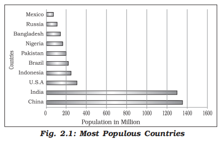
- Distribution in India - - Examine Fig. 1.1 and try to describe the patterns of spatial distribution of population shown on it
- It is clear that India has a highly uneven pattern of population distribution
- The percentage shares of population of the states and Union Territories in the country (Appendix–i) show that Uttar Pradesh has the highest population followed by Maharashtra, Bihar, West Bengal and Andhra Pradesh
- Update 2026
- After the 2014 bifurcation, Andhra Pradesh lost Telangana and dropped down the population ranking.
- Using Census 2011 (post-bifurcation figures), the top five states by population are:
1. Uttar Pradesh
2. Maharashtra
3. Bihar
4. West Bengal
5. Madhya Pradesh
- Check from the table (Appendix–i) that U.P., Maharashtra, Bihar, West Bengal, Andhra Pradesh along with Tamil Nadu, Madhya Pradesh, Rajasthan, Karnataka and Gujarat, together account for about 76 per cent of the total population of the country
- On the other hand, share of population is very small in the states like Jammu & Kashmir (0.98%), Arunachal Pradesh (0.11%) and Uttaranchal (0.83%) inspite of theses states having fairly large geographical area
- Factors influencing the distribution of population
- Geographical factors
- Availability of water
- Water is the most important factor for life
- So, people prefer to live in areas where fresh water is easily available
- Water is used for drinking, bathing and cooking – and also for cattle, crops, industries and navigation
- It is because of this that river valleys are among the most densely populated areas of the world
- Availability of water from rivers, such as the Ganga and Brahmaputra, leads to dense settlements.
- Example:
- Despite Rajasthan’s arid climate, irrigation facilities have allowed some areas to develop moderate population density.
- Landforms
- People prefer living on flat plains and gentle slopes
- This is because such areas are favorable for the production of crops and to build roads and industries
- The mountainous and hilly areas hinder the development of transport network and hence initially do not favour agricultural and industrial development
- Inhospitable terrains like the Himalayas and arid regions like Rajasthan have sparse population.
- So, these areas tend to be less populated
- The Ganga plains are among the most densely populated areas of the world while the mountains zones in the Himalayas are scarcely populated
- Climate
- An extreme climate such as very hot or cold deserts are uncomfortable for human habitation
- Areas with a comfortable climate, where there is not much seasonal variation attract more people
- Areas with very heavy rainfall or extreme and harsh climates have low population
- Mediterranean regions were inhabited from early periods in history due to their pleasant climate
- Soils
- Fertile soils are important for agricultural and allied activities
- Therefore, areas which have fertile loamy soils have more people living on them as these can support intensive agriculture
- Economic factors
- Minerals
- Areas with mineral deposits attract industries
- Mining and industrial activities generate employment
- So, skilled and semi–skilled workers move to these areas and make them densely populated
- Katanga Zambia copper belt in Africa is one such good example
- Urbanization
- Cities offer better employment opportunities, educational and medical facilities, better means of transport and communication
- Good civic amenities and the attraction of city life draw people to the cities
- It leads to rural to urban migration and cities grow in size
- Mega cities of the world continue to attract large number of migrants every year
- Urban centres like Delhi, Mumbai, Kolkata, Bengaluru, Chennai, Pune, Ahmedabad, and Jaipur exhibit high population density due to employment, services, and lifestyle factors.
- Industrialization
- Industrial belts provide job opportunities and attract large numbers of people
- These include not just factory workers but also transport operators, shopkeepers, bank employees, doctors, teachers and other service providers
- The Kobe-Osaka region of Japan is thickly populated because of the presence of a number of industries
- Example:
- Jharkhand, with its mineral and energy resources, has witnessed growth in population density through industrial activity.
- Technological factors
- Development of transport networks has improved connectivity and made previously inaccessible regions more habitable.
- Social and cultural factors
- Some places attract more people because they have religious or cultural significance
- In the same way – people tend to move away from places where there is social and political unrest
- Many a times governments offer incentives to people to live in sparsely populated areas or move away from overcrowded places
- Even in degraded environments like the Ganga plains, population remains high due to socio-economic roots.
- Historical settlement patterns—early civilizations along river valleys—have led to continued population concentrations.
- Historical and Political Factors
- Colonial-era infrastructure, ports, railways, and administrative centres influenced early population patterns.
- Post-independence development policies further reinforced existing distribution trends.
- Migration policies, displacement, and political unrest in some areas have also caused population shifts.
- Density of population
- Definition and calculation
- Density of population, is expressed as number of persons per unit area
- It is usually measured in persons per sq km
- Each unit of land has limited capacity to support people living on it
- Hence, it is necessary to understand the ratio between the numbers of people to the size of land
- It helps in getting a better understanding of the spatial distribution of population in relation to land
- Density of Population = Population/Area
- For example, area of Region X is 100 sq km and the population is 1,50,000 persons
- The density of population is calculated as: Density = 1,50,000 / 100 = 1,500 person/sq km
- Physiological and agricultural densities
- The density of population, as discussed in the earlier paragraph, is a crude measure of human and land relationship
- To get a better insight into the human-land ratio in terms of pressure of population on total cultivable land, the physiological and the agricultural densities should be found out which are significant for a country like India having a large agricultural population
- Physiological density = total population / net cultivated area
- Agricultural density = total agricultural population / net cultivable area
- Agricultural population includes cultivators and agricultural labourers and their family members
- Some examples:
- The density of population in India (2001) is 313 persons per sq km and ranks third among the most densely populated countries of Asia following Bangladesh (849 persons) and Japan (334 persons)
- There has been a steady increase of about 200 persons per sq km over the last 50 years as the density of population increased from 117 persons/ sq km in 1951 to 313 persons/sq km in 2001
- Spatial variation in India
-
- Examine Fig. 1.1 and try to describe the patterns of spatial distribution of population shown on it
- It is clear that India has a highly uneven pattern of population distribution
- The percentage shares of population of the states and Union Territories in the country (Appendix–i) show that Uttar Pradesh has the highest population followed by Maharashtra, Bihar, West Bengal and Andhra Pradesh
- Update 2026
- After the 2014 bifurcation, Andhra Pradesh lost Telangana and dropped down the population ranking.
- Using Census 2011 (post-bifurcation figures), the top five states by population are:
1. Uttar Pradesh
2. Maharashtra
3. Bihar
4. West Bengal
5. Madhya Pradesh
- Check from the table (Appendix–i) that U.P., Maharashtra, Bihar, West Bengal, Andhra Pradesh along with Tamil Nadu, Madhya Pradesh, Rajasthan, Karnataka and Gujarat, together account for about 76 per cent of the total population of the country
- On the other hand, share of population is very small in the states like Jammu & Kashmir (0.98%), Arunachal Pradesh (0.11%) and Uttaranchal (0.83%) inspite of theses states having fairly large geographical area
- Factors influencing the distribution of population
- Geographical factors
- Availability of water
- Water is the most important factor for life
- So, people prefer to live in areas where fresh water is easily available
- Water is used for drinking, bathing and cooking – and also for cattle, crops, industries and navigation
- It is because of this that river valleys are among the most densely populated areas of the world
- Availability of water from rivers, such as the Ganga and Brahmaputra, leads to dense settlements.
- Example:
- Despite Rajasthan’s arid climate, irrigation facilities have allowed some areas to develop moderate population density.
- Landforms
- People prefer living on flat plains and gentle slopes
- This is because such areas are favorable for the production of crops and to build roads and industries
- The mountainous and hilly areas hinder the development of transport network and hence initially do not favour agricultural and industrial development
- Inhospitable terrains like the Himalayas and arid regions like Rajasthan have sparse population.
- So, these areas tend to be less populated
- The Ganga plains are among the most densely populated areas of the world while the mountains zones in the Himalayas are scarcely populated
- Climate
- An extreme climate such as very hot or cold deserts are uncomfortable for human habitation
- Areas with a comfortable climate, where there is not much seasonal variation attract more people
- Areas with very heavy rainfall or extreme and harsh climates have low population
- Mediterranean regions were inhabited from early periods in history due to their pleasant climate
- Soils
- Fertile soils are important for agricultural and allied activities
- Therefore, areas which have fertile loamy soils have more people living on them as these can support intensive agriculture
- Economic factors
- Minerals
- Areas with mineral deposits attract industries
- Mining and industrial activities generate employment
- So, skilled and semi–skilled workers move to these areas and make them densely populated
- Katanga Zambia copper belt in Africa is one such good example
- Urbanization
- Cities offer better employment opportunities, educational and medical facilities, better means of transport and communication
- Good civic amenities and the attraction of city life draw people to the cities
- It leads to rural to urban migration and cities grow in size
- Mega cities of the world continue to attract large number of migrants every year
- Urban centres like Delhi, Mumbai, Kolkata, Bengaluru, Chennai, Pune, Ahmedabad, and Jaipur exhibit high population density due to employment, services, and lifestyle factors.
- Industrialization
- Industrial belts provide job opportunities and attract large numbers of people
- These include not just factory workers but also transport operators, shopkeepers, bank employees, doctors, teachers and other service providers
- The Kobe-Osaka region of Japan is thickly populated because of the presence of a number of industries
- Example:
- Jharkhand, with its mineral and energy resources, has witnessed growth in population density through industrial activity.
- Technological factors
- Development of transport networks has improved connectivity and made previously inaccessible regions more habitable.
- Social and cultural factors
- Some places attract more people because they have religious or cultural significance
- In the same way – people tend to move away from places where there is social and political unrest
- Many a times governments offer incentives to people to live in sparsely populated areas or move away from overcrowded places
- Even in degraded environments like the Ganga plains, population remains high due to socio-economic roots.
- Historical settlement patterns—early civilizations along river valleys—have led to continued population concentrations.
- Historical and Political Factors
- Colonial-era infrastructure, ports, railways, and administrative centres influenced early population patterns.
- Post-independence development policies further reinforced existing distribution trends.
- Migration policies, displacement, and political unrest in some areas have also caused population shifts.
- Density of population
- Definition and calculation
- Density of population, is expressed as number of persons per unit area
- It is usually measured in persons per sq km
- Each unit of land has limited capacity to support people living on it
- Hence, it is necessary to understand the ratio between the numbers of people to the size of land
- It helps in getting a better understanding of the spatial distribution of population in relation to land
- Density of Population = Population/Area
- For example, area of Region X is 100 sq km and the population is 1,50,000 persons
- The density of population is calculated as: Density = 1,50,000 / 100 = 1,500 person/sq km
- Physiological and agricultural densities
- The density of population, as discussed in the earlier paragraph, is a crude measure of human and land relationship
- To get a better insight into the human-land ratio in terms of pressure of population on total cultivable land, the physiological and the agricultural densities should be found out which are significant for a country like India having a large agricultural population
- Physiological density = total population / net cultivated area
- Agricultural density = total agricultural population / net cultivable area
- Agricultural population includes cultivators and agricultural labourers and their family members
- Some examples:
- The density of population in India (2001) is 313 persons per sq km and ranks third among the most densely populated countries of Asia following Bangladesh (849 persons) and Japan (334 persons)
- There has been a steady increase of about 200 persons per sq km over the last 50 years as the density of population increased from 117 persons/ sq km in 1951 to 313 persons/sq km in 2001
- Spatial variation in India
- 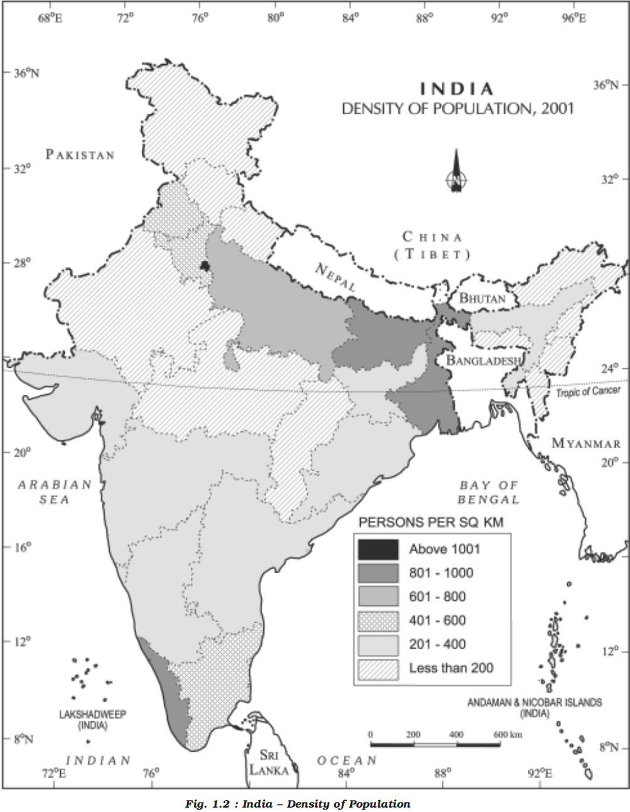
- The data shown in Appendix (i) give an idea of spatial variation of population densities in the country which ranges from as low as 13 persons per sq km in Arunachal Pradesh to 9,340 persons in the National Capital Territory of Delhi - Among the northern Indian States, West Bengal (903), Bihar (880) and Uttar Pradesh (690) have higher densities, while Kerala (819) and Tamil Nadu (480) have higher densities among the peninsular Indian states - States like Assam, Gujarat, Andhra Pradesh, Haryana, Jharkhand, Orissa have moderate densities - The hill states of the Himalayan region and North eastern states of India (excluding Assam) have relatively low densities while the Union Territories (excluding Andaman and Nicobar islands) have very high densities of population (Fig. 1.2) - Regional density -| Region | Population (2025) | Land Area (Km²) | Density (P/Km²) | World Share (%) |
|---|---|---|---|---|
| Asia | 4,835,320,060 | 31,033,131 | 156 | 58.74% |
| Africa | 1,549,867,579 | 29,648,481 | 52 | 18.83% |
| Europe | 744,398,832 | 22,134,900 | 34 | 9.04% |
| Latin America and the Caribbean | 667,888,552 | 20,139,378 | 33 | 8.11% |
| Northern America | 387,528,403 | 18,651,660 | 21 | 4.71% |
| Oceania | 46,609,644 | 8,486,460 | 5 | 0.57% |
| Category | Rank | Country / Territory | Region | Population Density (persons per sq km) | Official Source Basis |
|---|---|---|---|---|---|
| World Top 5 | 1 | Macau (China) | East Asia | ~21,000+ | UN Population Division / National Statistics |
| 2 | Monaco | Europe | ~19,000+ | UN Population Division | |
| 3 | Singapore | Southeast Asia | ~8,300 | Singapore Department of Statistics / UN | |
| 4 | Hong Kong (China) | East Asia | ~6,700 | Hong Kong Census & Statistics / UN | |
| 5 | Gaza Strip (Palestine) | West Asia | ~6,000+ | Palestinian Central Bureau of Statistics / UN | |
| South Asia | 1 | Bangladesh | South Asia | ~1,300 | Bangladesh Bureau of Statistics / UN |
| 2 | Maldives | South Asia | ~1,300 | Maldives National Bureau of Statistics / UN | |
| 3 | India | South Asia | 382 (Census 2011) | Census of India 2011 (Official) | |
| 4 | Sri Lanka | South Asia | 341 | Department of Census & Statistics Sri Lanka | |
| 5 | Pakistan | South Asia | 287 | Pakistan Bureau of Statistics (2017 Census) | |
| 6 | Nepal | South Asia | 203 | Central Bureau of Statistics Nepal | |
| 7 | Afghanistan | South Asia | ~59 | National Statistics and Information Authority / UN | |
| 8 | Bhutan | South Asia | ~20 | National Statistics Bureau Bhutan |
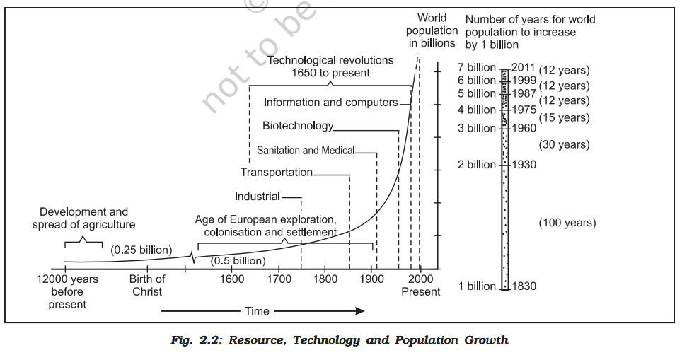
- Definition - The population growth or population change refers to the change in number of inhabitants of a territory during a specific period of time - Its rate is expressed in percentage - This change may be positive as well as negative - It can be expressed either in terms of absolute numbers or in terms of percentage - Population change in an area is an important indicator of economic development, social upliftment and historical and cultural background of the region - Population growth has two components namely: - Natural - Natural growth is analysed by assessing the crude birth and death rates - Induced - Induced components are explained by the volume of inward and outward movement of people in any given area - Basic concepts of population geography - Growth of population - Change of population in particular area between two points of time is known as growth of population - For example, if we deduct the population of India 2001 (102.70 crore) from population of 2011 (121.02 crore) then we shall get the growth of population (18.15 crores) in actual numbers - Growth rate of population - This is the change of population expressed in percentage - Natural growth of population - This is the population increased by difference between births and deaths in a particular region between two points of time - Natural Growth = Births – Deaths - Actual growth of population - This is Births – Deaths + In Migration – Out Migration - Positive growth of population - This happens when the birth rate is more than the death rate between two points of time or when people from other countries migrate permanently to a region - Negative growth of population - If the population decreases between two points of time it is known as negative growth of population - It occurs when the birth rate falls below the death rate or people migrate to other countries - Components of population change - There are three components of population change – births, deaths and migration - Crude birth rate (CBR) - The crude birth rate (CBR) is expressed as number of live births in a year per thousand of population - CBR = (Number of live births / Mid-year population of that year) × 1000 - Why the formula multiply by 1000? - Suppose there 700 live births in a population of 1 million - CBR = (700 / 1,000,000) will divide the 700 in a million people, i.e. 0.0007 live births per person - If 1 person corresponds to 0.0007 births, then 1,000 persons correspond to how many births? - That is a scaling up question, not a dividing question. So we do 0.0007 × 1000 = 0.7 - We get 0.7 births per 1,000 persons - Why “per thousand” feels like division? - Calculating per thousand does not mean to divide by 1,000 always, instead it's a bi-direction logic, if we start from per person then we have calculate per thousand then multiply by 1,000, but if we start from per thousand and have to calculate per person then we divide by 1,000 -| Current Unit | Operation | Reason |
|---|---|---|
| Per 1 person -> Per 1,000 persons | Multiply by 1,000 | Scaling up from one person to one thousand persons |
| Per 1,000 persons -> Per 1 person | Divide by 1,000 | Scaling down from thousand persons to one person |
| Period | Population | Time in which Population Doubles |
|---|---|---|
| 10,000 B.C. | 5 million | 1,500 years |
| 1650 A.D. | 500 million | 154 years |
| 1804 A.D. | 1,000 million | 123 years |
| 1927 A.D. | 2,000 million | 47 years |
| 1974 A.D. | 4,000 million | 51 years |
| 2025 A.D. (Projected) | 8,000 million | — |
 - The decadal and annual growth rates of population in India are both very high and steadily increasing over time
- The annual growth rate of India’s population is 2.4 per cent
- At this current rate of increase, it is estimated that the country’s population will double itself in another 36 years and even surpass population of China
- Phases of population growth in India
- The growth rate of population in India over the last one century has been caused by annual birth rate and death rate and rate of migration and thereby shows different trends
- There are four distinct phases of growth identified within this period:
-
- The decadal and annual growth rates of population in India are both very high and steadily increasing over time
- The annual growth rate of India’s population is 2.4 per cent
- At this current rate of increase, it is estimated that the country’s population will double itself in another 36 years and even surpass population of China
- Phases of population growth in India
- The growth rate of population in India over the last one century has been caused by annual birth rate and death rate and rate of migration and thereby shows different trends
- There are four distinct phases of growth identified within this period:
- | Census Year | Total Population | Absolute Growth | Decadal Growth Rate (%) |
|---|---|---|---|
| 1901 | 238,396,327 | — | — |
| 1911 | 252,093,390 | +13,697,063 | +5.75 |
| 1921 | 251,321,213 | −772,177 | −0.31 |
| 1931 | 278,977,238 | +27,656,025 | +11.60 |
| 1941 | 318,660,580 | +39,683,342 | +14.22 |
| 1951 | 361,088,090 | +42,427,510 | +13.31 |
| 1961 | 439,234,771 | +78,146,681 | +21.51 |
| 1971 | 548,159,652 | +108,924,881 | +24.80 |
| 1981 | 683,329,097 | +135,169,445 | +24.66 |
| 1991 | 846,302,688 | +162,973,591 | +23.85 |
| 2001 | 1,028,610,328 | +182,307,640 | +21.54 |
| 2011 | 1,210,193,422 | +181,583,094 | +17.64 |
| Region | Growth Rate (1990-95) | Growth Rate (2010-15) |
|---|---|---|
| World | 1.6% | 1.2% |
| Africa | 2.4% | 2.6% |
| Europe | 0.2% | 0.1% |
| North America | 1.4% | 0.8% |
| Latin America & Caribbean | 1.7% | 1.1% |
| Asia | 1.6% | 1.0% |
| Oceania (Australia, New Zealand, Fiji) | 1.5% | 1.5% |
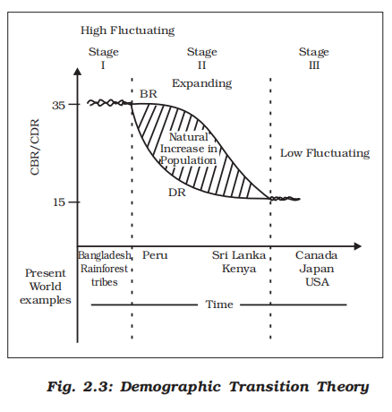
- Demographic transition theory can be used to describe and predict the future population of any area - The theory tells us that population of any region changes from high births and high deaths to low births and low deaths as society progresses from rural agrarian and illiterate to urban industrial and literate society - These changes occur in stages which are collectively known as the demographic cycle - Demographic Transition: - Rural Agrarian -------------> Urban Industrial - Three-stage model (Fig. 2.3) - First stage - The first stage has high fertility and high mortality because people reproduce more to compensate for the deaths due to epidemics and variable food supply - The population growth is slow and most of the people are engaged in agriculture where large families are an asset - Life expectancy is low, people are mostly illiterate and have low levels of technology - Two hundred years ago all the countries of the world were in this stage - Fertility remains high in the beginning of second stage but it declines with time - This is accompanied by reduced mortality rate - Reduced mortality stage - Improvements in sanitation and health conditions lead to decline in mortality - Because of this gap the net addition to population is high - Last stage - In the last stage, both fertility and mortality decline considerably - The population is either stable or grows slowly - The population becomes urbanised, literate and has high technical know-how and deliberately controls the family size - This shows that human beings are extremely flexible and are able to adjust their fertility - Current global status - In the present day, different countries are at different stages of demographic transition - According to the United Nations population projections (medium variant): - China’s population in 2100 (median projection) is ~633 million people. That’s roughly less than half of China’s current population (≈1.4 billion), which means a dramatic long-term decline over the 21st century. - Demographic winter - A situation where a country’s fertility rate stays very low for a long time, leading to: - Fewer births - Shrinking working-age population - Rapid ageing - Eventually, population decline - The core technical condition - Total Fertility Rate (TFR) < 2.1 (replacement level) - And it stays there for decades, not one bad year - Population control measures - Family planning is the spacing or preventing the birth of children - Access to family planning services is a significant factor in limiting population growth and improving women’s health - Propaganda [form of communication aimed at influencing the opinions, beliefs, and actions of a target audience], free availability of contraceptives and tax disincentives for large families are some of the measures which can help population control - Malthusian theory - Thomas Malthus in his theory (1798) stated that the number of people would increase faster than the food supply - Any further increase would result in a population crash caused by famine, disease and war - The preventive checks are better than the physical checks - For the sustainability of our resources, the world will have to control the rapid population increase - Population composition - Introduction - Population composition is a distinct field of study within population geography with a vast coverage of analysis of age and sex, place of residence, ethnic characteristics, tribes, language, religion, marital status, literacy and education, occupational characteristics, etc - People of any country are diverse in many respects - Each person is unique in her/his own way - Sex composition - Definition and calculation - The number of women and men in a country is an important demographic characteristic - The ratio between the number of women and men in the population is called the Sex Ratio - In some countries it is calculated as the number of males per thousand females: - (Male Population/Female Population) x 1000 - In India, the sex ratio calculated as number of females per thousand males: - (Female Population/Male Population) x 1000 - The sex ratio is an important information about the status of women in a country - Social implications - In regions where gender discrimination is rampant [flourishing or spreading unchecked], the sex ratio is bound to be unfavorable to women - Such areas are those where the practice of female feticide, female infanticide and domestic violence against women are prevalent - Female foeticide is the process of finding out the sex of the foetus and undergoing abortion if it is a girl. Although it is illegal, many people continue to practice it. - Besides this, there are some communities which practice female infanticide - the practice of killing the girl child once she is born. - One of the reasons could be lower socio-economic status of women in these areas - You must remember that more women in the population does not mean they have a better status, it could be that the men might have migrated to other areas for employment - Natural advantage v/s social disadvantage - Females have a biological advantage over males as they tend to be more resilient than males yet this advantage is cancelled out by the social disadvantages and discriminations that they face - Biological Advantage of Females - Lower Infant Mortality: - Female infants are more likely to survive the first year of life than male infants under similar conditions. - This is due to genetic advantages (e.g., having two X chromosomes provides backup for mutations) and hormonal factors (e.g., estrogen has protective effects on the immune system). - Higher Life Expectancy: - Globally, women tend to live longer than men. This is consistent across most societies. - This is partly due to lower rates of risky behavior, and biological protection against cardiovascular diseases (before menopause). - Stronger Immunity: - Women tend to mount stronger immune responses than men, making them more resilient to certain infections and diseases. - Social Disadvantages and Discrimination - Discrimination and Gender Bias: - Preference for male children can lead to neglect of girl children, poor nutrition, and lower healthcare access. - Practices such as female infanticide or sex-selective abortion directly impact female survival. - Education and Opportunity Gap: - Girls are often denied equal access to education, reducing long-term health and income outcomes. - Early marriage and childbearing also put girls at higher reproductive and maternal risk. - Domestic and Gender-Based Violence: - Many women face physical and mental abuse, increasing health risks and reducing lifespan and well-being. - Healthcare Neglect: - Women's health needs, especially reproductive health, are often under-prioritized. - Women may be less likely to be taken to hospitals, especially in rural or patriarchal societies. - Global patterns - On an average, the world population reflects a sex ratio of 102 males per 100 females - The highest sex ratio in the world has been recorded in Latvia (and other Baltic States like Estonia, Lithuania) where there are 85 males per 100 females - In contrast, in Qatar there are 311 males per 100 females - The world pattern of sex ratio does not exhibit variations in the developed regions of the world - The sex ratio is favorable for females in 139 countries of the world and unfavorable for them in the remaining 72 countries listed by the United Nations - In general, Asia has a low sex ratio - Countries like China, India, Saudi Arabia, Pakistan, Afghanistan have a lower sex ratio - On the other extreme is greater part of Europe (including Russia) where males are in minority - A deficit of males in the populations of many European countries is attributed to better status of women, and an excessively male-dominated out-migration to different parts of the world in the past - India's latest official data (from 2021 Census) shows a sex ratio of 943 females per 1000 males, - Kerala has the highest sex ration (1084 females / 1000 males) while Haryana ranking the lowest with sex ration of 879 females per 1000 males. - If all ~2.2 million emigrants (assumed male) return to Kerala, the sex ratio would fall from about 1084 to roughly 950 females per 1000 males. - Low Sex Ratio: Causes, Consequences, and Solutions - Overview - The sex ratio refers to the number of females per 1,000 males in a population. - A balanced sex ratio is crucial for social stability and gender equality. - However, many regions—particularly in South Asia, East Asia, and parts of Eastern Europe—exhibit significantly skewed sex ratios, primarily due to son preference and sex-selective practices. - In India (Census 2011): - Overall sex ratio: - 943 females/1000 males. - Child sex ratio (0–6 years): - 919 females/1000 males. - In China, the sex ratio at birth stood at 111 boys to 100 girls (2020), down from earlier decades where it exceeded 120. - Causes of Skewed Sex Ratio - 1. Patriarchal Societal Norms - Deep-rooted preference for sons due to economic, religious, and cultural factors. - Sons are considered breadwinners, carriers of family lineage, and providers in old age. - 2. Sex-Selective Abortions - Widespread misuse of ultrasound technology for prenatal sex determination. - Particularly prevalent in countries like India, China, Vietnam, and South Korea (historically). - Violates laws such as India’s PCPNDT Act (1994). - 3. Dowry and Financial Pressures - Daughters seen as economic liabilities due to dowry system (India, Bangladesh). - Increases the cost of raising a girl child. - 4. Lower Status and Education of Women - Societies with lower female literacy and employment tend to have more biased sex ratios. - Education helps shift perspectives towards gender equality. - 5. Policy-driven Preferences (e.g., China’s One-Child Policy) - China’s One-Child Policy (1979–2015), combined with son preference, led to a highly skewed sex ratio. - Consequences of Low Sex Ratio - 1. Marriage Squeeze - Shortage of brides leads to forced marriages, bride trafficking, and import of women from other regions. - Seen in parts of India (Haryana, Punjab) and China’s rural areas. - 2. Increase in Gender-Based Violence - Skewed sex ratios are often associated with rising crimes against women, including rape, domestic violence, and human trafficking. - 3. Demographic Imbalance - Affects long-term population growth and aging. - Leads to economic inefficiencies and dependency burdens in the future. - 4. Worsened Social Cohesion - Gender imbalance distorts community structures, increases alienation, and social unrest among unmarried men. - Government and Institutional Responses - 1. Legal Measures - Acts like PCPNDT Act bans sex-selective abortions in India. - Pre-Conception and Pre-Natal Diagnostic Techniques (Prohibition of Sex Selection) Act - 2. Social Campaigns and Behaviour Change - Beti Bachao, Beti Padhao (2015) focused on saving and educating the girl child. - Civil society and religious leaders have played an important role in mindset change. - 3. Education and Empowerment of Girls - Increasing female literacy and access to vocational training. - Financial incentives like conditional cash transfer schemes for girls (e.g., Ladli, Dhanlakshmi in India). - 4. Economic Incentives and Social Security - Providing old-age security, pensions, and maternity benefits to reduce dependence on sons. - Addressing dowry through strict enforcement of anti-dowry laws. - 5. Monitoring and Technology - Use of digital surveillance to track pregnancy registrations (India's PMSMA). - Incentivizing ethical practices in private clinics and better enforcement through district authorities. - Global Examples of Success - South Korea saw normalization of its sex ratio due to a combination of economic development, education, and gender reforms. - Vietnam strengthening the legal framework against sex determination has shown modest improvements. - China shifted policies post-2015 toward increasing fertility and gender equality, though challenges remain. - Age structure composition - Age structure represents the number of people of different age groups - This is an important indicator of population composition, since a large size of population in the age group of 15-59 indicates a large working population - A greater proportion of population above 60 years represents an ageing population which requires more expenditure on health care facilities - Similarly high proportion of young population would mean that the region has a high birth rate and the population is youthful - Age-sex pyramid - Definition - The age-sex structure of a population refers to the number of females and males in different age groups - A population pyramid is used to show the age-sex structure of the population - The shape of the population pyramid reflects the characteristics of the population - The left side shows the percentage of males while the right side shows the percentage of women in each age group - Types of population pyramids - Expanding populations (Triangle shaped) -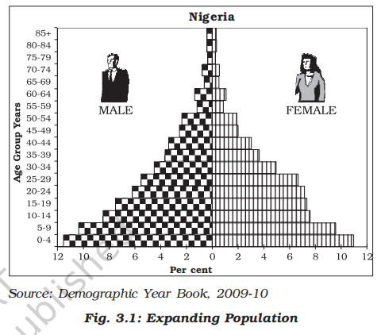
- The age-sex pyramid of Nigeria as you can see is a triangular shaped pyramid with a wide base and is typical of less developed countries - These have larger populations in lower age groups due to high birth rates - If you construct the pyramids for Bangladesh and Mexico, it would look the same - Constant population (Bell shaped) -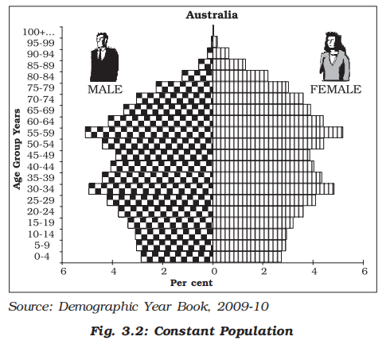
- Australia’s age-sex pyramid is bell shaped and tapered towards the top - This shows birth and death rates are almost equal leading to a near constant population - Declining populations (Inverse pyramid) -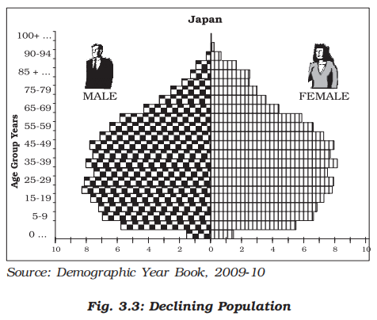
- The Japan pyramid has a narrow base and a tapered top showing low birth and death rates - The population growth in developed countries is usually zero or negative - Ageing population - Population ageing is the process by which the share of the older population becomes proportionally larger - This is a new phenomenon of the twentieth century - In most of the developed countries of the world, population in higher age groups has increased due to increased life expectancy - With a reduction in birth rates, the proportion of children in the population has declined - Rural urban composition - Definition and importance - The division of population into rural and urban is based on the residence - This division is necessary because rural and urban life styles differ from each other in terms of their livelihood and social conditions - The age-sex-occupational structure, density of population and level of development vary between rural and urban areas - Criteria - The criteria for differentiating rural and urban population varies from country to country - In general terms rural areas are those where people are engaged in primary activities and urban areas are those when majority of the working population is engaged in non-primary activities - Rural-urban sex composition -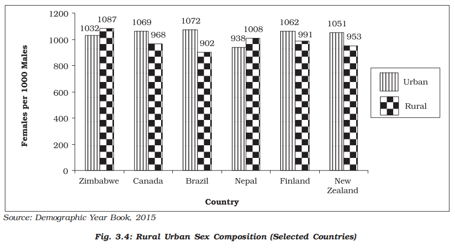
- Composition of population by their respective places of residence is an important indicator of social and economic characteristics - This becomes even more significant for a country like India where about 72 per cent of its total population lives in villages - Fig. 3.4 shows rural urban sex composition of selected countries - The rural and urban differences in sex ratio in Canada and West European countries like Finland are just the opposite of those in African and Asian countries like Zimbabwe and Nepal respectively - In Western countries, males outnumber females in rural areas and females outnumber the males in urban areas - The excess of females in urban areas of U.S.A., Canada and Europe is the result of influx of females from rural areas to avail of the vast job opportunities - Farming in these developed countries is also highly mechanized and remains largely a male occupation - In countries like Nepal, Pakistan and India the case is reverse - By contrast the sex ratio in Asian urban areas remains male dominated due to the predominance of male migration - It is also worth noting that in countries like India, female participation in farming activity in rural area is fairly high - Shortage of housing, high cost of living, paucity of job opportunities and lack of security in cities, discourage women to migrate from rural to urban areas - Indian rural-urban composition - Do you know that India has 638,588 villages according to the Census 2001 out of which 593,731 (93 per cent) are inhabited villages? - However, the distribution of rural population is not uniform throughout the country - You might have noted that the states like Bihar and Sikkim have very high percentage of rural population - The states of Goa and Maharashtra have only little over half of their total population residing in villages - The Union Territories, on the other hand, have smaller proportion of rural population, except Dadra and Nagar Haveli (77.1 per cent) - The size of villages also varies considerably - It is less than 200 persons in the hill states of north-eastern India, Western Rajasthan and Rann of Kuchchh and as high as 17 thousand persons in the states of Kerala and in parts of Maharashtra - A thorough examination of the pattern of distribution of rural population of India reveals that both at intra-State and inter-State levels, the relative degree of urbanisation and extent of rural-urban migration regulate the concentration of rural population - You have noted that contrary to rural population, the proportion of urban population (27.8 per cent) in India is quite low but it is showing a much faster rate of growth over the decades - In fact since 1931, the growth rate of urban population has accelerated due to enhanced economic development and improvement in health and hygienic conditions - The distribution of urban population too, as in the case of total population, has a wide variation throughout the country (Appendix–iv) - It is, however, noticed that in almost all the states and Union Territories, there has been a considerable increase of urban population - This indicates both development of urban areas in terms of socio-economic conditions and an increased rate of rural-urban migration - The rural-urban migration is conspicuous in the case of urban areas along the main road links and railroads in the North Indian Plains, the industrial areas around Kolkata, Mumbai, Bangalore – Mysore, Madurai – Coimbatore, Ahmedabad – Surat, Delhi – Kanpur and Ludhiana – Jalandhar - In the agriculturally stagnant parts of the middle and lower Ganga Plains, Telengana, non-irrigated Western Rajasthan, remote hilly, tribal areas of northeast, along the flood prone areas of Peninsular India and along eastern part of Madhya Pradesh, the degree of urbanisation has remained low - Literacy composition - Proportion of literate population of a country in an indicator of its socio-economic development as it reveals the standard of living, social status of females, availability of educational facilities and policies of government - Level of economic development is both a cause and consequence of literacy - In India – literacy rate denotes the percentage of population above 7 years of age, who is able to read, write and have the ability to do arithmetic calculations with understanding - India's latest official data (from 2021 Census) shows that overall literacy rate is 74.04%. - Male literacy is 82.14%, and female literacy is 65.46%. - Mizoram in india has highest literacy rate (98.2%), second is Kerala (96%), Andhra Pradesh ranking the lowest (72.6%) as per the PLFS 2023–24 survey data - Occupational composition - Definition - The working population (i.e. women and men of the age group – 15 to 59) take part in various occupations ranging from agriculture, forestry, fishing, manufacturing construction, commercial transport, services, communication and other unclassified services - Classification - Agriculture, forestry, fishing and mining are classified as primary activities - Manufacturing as secondary - Trade, transport, communication and other services as tertiary - The jobs related to research, information technology and developing ideas as quaternary activities - Significance - The proportion of working population engaged in these four sectors is a good indicator of the levels of economic development of a nation - This is because only a developed economy with industries and infrastructure can accommodate more workers in the secondary, tertiary and quaternary sector - If the economy is still in the primitive stages, then the proportion of people engaged in primary activities world be high as it involves extraction of natural resources - Linguistic composition - India is a land of linguistic diversity - According to Grierson (Linguistic Survey of India, 1903 – 1928) there were 179 languages and as many as 544 dialects in the country - In the context of modern India, there are about 18 scheduled languages (1991 census) and a number of non-scheduled languages - See how many languages appear on a ten Rs note - Among the scheduled languages, the speakers of Hindi have the highest percentage (40.42) - The smallest language groups are Kashmiri and Sanskrit speakers (0.01 per cent each) - However, it is noticed that the linguistic regions in the country do not maintain a sharp and distinct boundary, rather they gradually merge and overlap in their respective border zones - Linguistic classification of India - The speakers of major Indian languages belong to four language families, which have their sub-families and branches or groups - This can be better understood from Table 1.2 -| Family | Sub-Family | Branch/Group | Speech Areas (States/Regions) |
|---|---|---|---|
| Austro-Asiatic (<1%) |
Mon-Khmer | Nicobarese | Nicobar Islands |
| Munda | Kherwari, Mundari | Jharkhand, Odisha, West Bengal, Bihar, Chhattisgarh, Assam, Maharashtra | |
| Dravidian (Dravida) ~20% |
South Dravidian | Tamil, Kannada, Malayalam | Tamil Nadu, Karnataka, Kerala |
| Central Dravidian | Kolami–Parji | Andhra Pradesh, Telangana, Madhya Pradesh, Odisha, Maharashtra | |
| North Dravidian | Kurukh, Malto | Jharkhand, Odisha, Bihar, Madhya Pradesh, West Bengal | |
| Sino-Tibetan / Tibeto-Myanmari ~0.85% |
Tibeto-Himalayan | Bodic (Tibetan), Himalayan | Jammu & Kashmir, Himachal Pradesh, Sikkim |
| North Assam | Mishing, Adi, Apatani | Arunachal Pradesh, Assam | |
| Siamese-Chinese | Assam-Myanmari | Nagaland, Manipur, Mizoram, Tripura, Meghalaya, Assam | |
| Indo-European (Aryan) ~73% |
Iranian | Persian, Pashto (outside India) | Primarily spoken outside India (Iran, Afghanistan) |
| Dardic | Shina, Kashmiri | Jammu & Kashmir | |
| Indo-Aryan | Hindi, Bengali, Marathi, Gujarati, Punjabi, Assamese, Odia, Urdu, etc. | Jammu & Kashmir, Punjab, Himachal Pradesh, Uttarakhand, Uttar Pradesh, Rajasthan, Haryana, Madhya Pradesh, Bihar, Odisha, West Bengal, Assam, Gujarat, Maharashtra, Goa, Chhattisgarh, Jharkhand, Delhi |
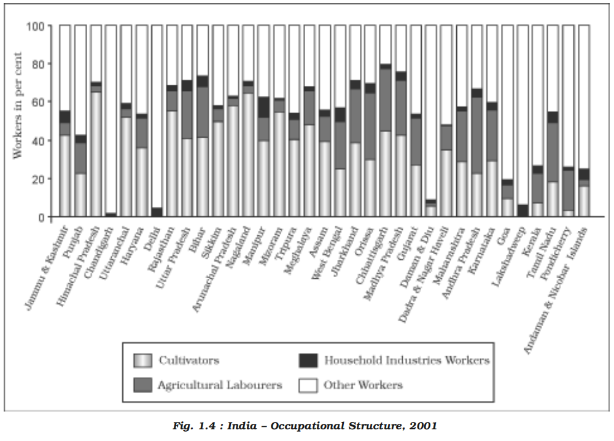
- Overview - The population of India according to their economic status is divided into three groups, namely: - Main workers - Main Worker is a person who works for at least 183 days in a year - Marginal workers - Marginal Worker is a person who works for less than 183 days in a year - Non-workers - It is observed that in India, the proportion of workers (both main and marginal) is only 39 per cent (2001) leaving a vast majority of 61 per cent as non-workers - This indicates an economic status in which there is a larger proportion of dependent population, further indicating possible existence of large number of unemployed or under employed people - The proportion of working population, of the states and Union Territories show a moderate variation from about 25 per cent in Goa to about 53 per cent in Mizoram - The states with larger percentages of workers are Himachal Pradesh, Sikkim, Chhattisgarh, Andhra Pradesh, Karnataka, Arunachal Pradesh, Nagaland, Manipur and Meghalaya - Among the Union Territories, Dadra and Nagar Haveli and Daman and Diu have higher participation rate - It is understood that, in the context of a country like India, the work participation rate tends to be higher in the areas of lower levels of economic development since number of manual workers are needed to perform the subsistence or near subsistence economic activities - Occupational composition - The occupational composition (see box) of India’s population (which actually means engagement of an individual in farming, manufacturing trade, services or any kind of professional activities) shows a large proportion of primary sector workers compared to secondary and tertiary sectors - About 58.2 per cent of total working population are cultivators and agricultural labourers, whereas only 4.2% of workers are engaged in household industries and 37.6 % are other workers including non-household industries, trade, commerce, construction and repair and other services - As far as the occupation of country’s male and female population is concerned, male workers out-number female workers in all the three sectors (Fig.1.4 and Table 1.4) - Occupational categories - The 2001 Census has divided the working population of India into four major categories: - 1. Cultivators - 2. Agricultural Labourers - 3. Household Industrial Workers - 4. Other Workers - The number of female workers is relatively high in primary sector, though in recent years there has been some improvement in work participation of women in secondary and tertiary sectors - It is important to note that the proportion of workers in the agricultural sector in India has been on a consistent decline over the past few decades — from around 66.5% in 1991 to 58.2% in 2001, and further to approximately 54.6% in 2011 -| Sector | 1991 Census | 2001 Census | 2011 Census | ||||||
|---|---|---|---|---|---|---|---|---|---|
| Male (M) | Female (F) | Total (%) | Male (M) | Female (F) | Total (%) | Male (M) | Female (F) | Total (%) | |
| Primary (Agriculture, Forestry, Fishing, Mining) | 120.1 M | 74.9 M | 66.5% | 142.7 M | 91.3 M | 58.2% | 151.0 M | 112.1 M | 54.6% |
| Secondary (Manufacturing, Construction, Electricity) | 19.2 M | 15.8 M | 12.0% | 8.74 M | 8.21 M | 10.5% | 39.4 M | 24.0 M | 13.2% |
| Tertiary (Trade, Transport, Education, Services) | 47.0 M | 16.0 M | 21.5% | 123.5 M | 27.7 M | 31.3% | 142.6 M | 32.7 M | 32.2% |
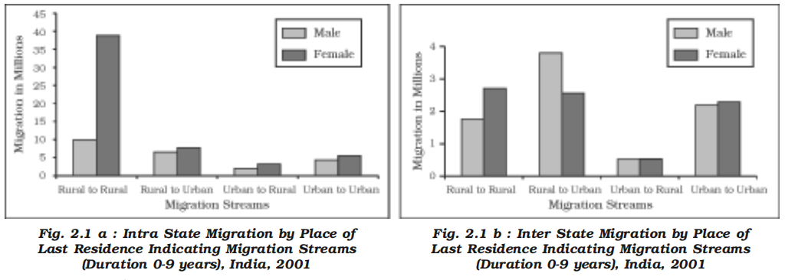
- Overview - A few facts pertaining to the internal migration (within the country) and international migration (out of the country and into the country from other countries) are presented here - Internal migration - Under the internal migration, four streams are identified: - (a) Rural to Rural (R-R) - (b) Rural to Urban (R-U) - (c) Urban to Urban (U-U) - (d) Urban to Rural (U-R) - In India, during 2001, out of 315 million migrants, enumerated on the basis of the last residence, 98 million had changed their place of residence in the last ten years - Out of these, 81 million were intra-state migrants - The stream was dominated by female migrants - Most of these were migrants related to marriage - The distribution of male and female migrants in different streams of intra-state and inter-state migration is presented in Fig. 2.1 a and 2.1 b - It is clearly evident that females predominate the streams of short distance rural to rural migration in both types of migration - Contrary to this, men predominate the rural to urban stream of inter-state migration due to economic reasons - International migration - Apart from these streams of internal migration, India also experiences immigration from and emigration to the neighbouring countries - Table 2.1 presents the details of migrants from neighbouring countries - Indian Census 2001 has recorded that more than 5 million person have migrated to India from other countries - Out of these, 96 per cent came from the neighbouring countries: Bangladesh (3.0 million) followed by Pakistan (0.9 million) and Nepal (0.5 million) - Included in this are 0.16 million refugees from Tibet, Sri Lanka, Bangladesh, Pakistan, Afghanistan, Iran, and Myanmar - As far as emigration from India is concerned it is estimated that there are around 20 million people of Indian Diaspora, spread across 110 countries -| Country/Region | No. of Immigrants | % of Total Immigrants |
|---|---|---|
| Total International Migration | 5.16 million | 100% |
| Migration from Neighbouring Countries | 4.92 million | 95.5% |
| Afghanistan | 9,194 | 0.2% |
| Bangladesh | 3.08 million | 59.8% |
| Bhutan | 8,337 | 0.2% |
| China | 23,721 | 0.5% |
| Myanmar | 49,086 | 1.0% |
| Nepal | 5.97 lakh | 11.6% |
| Pakistan | 9.97 lakh | 19.3% |
| Sri Lanka | 1.49 lakh | 2.9% |
 - Overview
- Migration is a multidimensional socio-economic process involving the movement of people across geographical boundaries due to a combination of factors.
- Despite emotional and cultural attachment to native regions, millions migrate due to both distress and aspiration.
- Migration can be classified on the basis of motive:
- Push factors – that compel people to leave the place of origin
- Pull factors – that attract them to the destination
- Push factors
- Economic distress:
- Agrarian stagnation, disguised unemployment, and rural indebtedness force people to seek alternate livelihoods.
- Fragmentation of land holdings and poor mechanisation limit income generation in rural areas.
- Environmental causes:
- Natural disasters such as floods (Assam, Bihar), droughts (Bundelkhand), cyclones (Odisha, Andhra coast), and earthquakes (Gujarat, Himalayan belt) result in displacement.
- Infrastructural deficit:
- Poor access to education, healthcare, transport, and housing facilities push people, especially youth, to urban centers.
- Socio-political instability:
- Migration is often triggered by caste or communal conflicts, insurgency (Northeast, Chhattisgarh), and even evictions due to development projects like dams and highways.
- Marriage:
- Women leave house after marriage.
- Pull factors
- Economic opportunities:
- Industrial hubs and urban centers offer jobs in manufacturing, construction, transport, services, and informal sectors.
- Higher wages, even in informal jobs, attract large rural populations.
- Urban amenities [a desirable or useful feature or facility of a building or place]:
- Better access to hospitals, educational institutions, roads, power supply, internet, and sanitation compared to rural areas.
- Social networks:
- Chain migration is common where earlier migrants facilitate the relocation of relatives and neighbors.
- Aspirational mobility:
- Desire for improved quality of life, social mobility, and access to modern lifestyle amenities.
- Gender dimension of migration
- Migration patterns are highly gendered in India.
- As per Census 2011:
- Around 65% of female migration is due to marriage.
- In contrast, 38% of male migration is driven by employment-related reasons.
- This reflects the patriarchal and patrilocal structure of Indian society where women shift to their husband’s residence post-marriage.
- In tribal and matrilineal societies such as Meghalaya, women's migration for education and employment is relatively higher.
- Female economic migration is often underreported due to classification under ‘accompanying family’.
- Policy implications
- Migration is both a challenge and an opportunity for development planning.
- It requires coordinated efforts across states for labour rights, portable social security (like e-Shram cards), and improved urban infrastructure.
- Gender-sensitive migration policies must recognize unpaid and invisible contributions of women migrants.
- Migration data needs periodic updating beyond decadal Census to frame responsive public policies.
- Consequences of Migration
- Positive Consequences
- Economic Benefits
- Remittances from migrants boost the source region’s economy
- India received about US$11 billion in remittances [transfers of money from an individual abroad back to their home country, often to support family members and communities] in 2002
- States like Kerala, Punjab, and Tamil Nadu depend heavily on these inflows
- Internal remittances support rural households in Bihar, Odisha, Uttar Pradesh, etc.
- Migration contributed to agricultural modernization, e.g., Green Revolution success in Punjab and Haryana
- Provides labor supply to growing industries and urban services
- Demographic Advantages
- Redistributes population, relieving pressure on densely populated rural areas
- Migration predominantly involves working-age population, contributing to urban economic growth
- Helps urban centers develop diversified human resources and skills
- Social and Cultural Integration
- Migrants act as vectors for diffusion of new ideas: education, healthcare, family planning
- Promotes cultural exchange, leading to composite cultural identities and social pluralism
- Migrants enhance social mobility and exposure to modern lifestyles
- Empowerment of Women
- Migration for education and employment increases women’s autonomy and decision-making power
- Enhances women’s participation in the economy and social spheres
- Negative Consequences
- Economic Challenges
- Brain drain and loss of skilled manpower from source regions hampers local development
- Unregulated migration causes urban overcrowding and strain on infrastructure
- Growth of informal settlements and slums in metropolitan areas like Mumbai, Delhi, Bengaluru
- Unequal economic benefits: rural areas continue to suffer despite remittances
- Demographic Imbalances
- Age and sex selective migration causes skewed population structure in source and destination areas
- Out-migration leads to depopulation and ageing in states like Uttarakhand, Rajasthan, Madhya Pradesh
- Male-dominated migration results in altered sex ratios and social stress
- Social Disruption
- Migrants often experience alienation, social exclusion, and identity crises in host communities
- Increased vulnerability to crime, substance abuse, and anti-social behavior in crowded urban spaces
- Breakdown of traditional social networks and support systems
- Environmental Degradation
- Overpopulation in cities leads to over-exploitation of natural resources: water, air, land
- Unplanned urban sprawl causes deterioration of urban environment and health hazards
- Challenges in waste management and pollution control exacerbate urban living conditions
- Gender-Specific Strains
- Male selective out-migration increases workload and psychological burden on women left behind
- Migrant women face vulnerabilities including exploitation, harassment, and social isolation in urban centers
- Political and Administrative Issues
- Pressure on urban governance and public services due to rapid and unplanned migration
- Potential for social conflicts and communal tensions in heterogeneous migrant-receiving areas
- Difficulty in planning and implementing development policies due to dynamic migration patterns
- Deterioration of public image
- Some immigrants start begging on roads, public buildings, offices, corporates due to unemployment.
- This creates a distorted image of the city/state/nation to the outsiders.
- Prices of such places plummet, negatively impacting the locality.
- Human development
- Introduction
- Case study: Rekha
- Sixty years ago, Rekha was born in a family of small farmer in Uttaranchal
- She helped her mother in household chores
- While her brothers went to school, she did not receive any education
- She was dependent on her in laws after she was widowed immediately after marriage
- She could not be economically independent and faced neglect
- Her brother helped her to migrate to Delhi
- For the first time, she travelled by bus and train and was exposed to a large city like Delhi
- After a while, the same city which attracted her with its buildings, roads, avenues and facilities and amenities disillusioned her
- With greater familiarity of the city, she could comprehend the paradoxes
- The jhuggi and slum clusters, traffic jams, congestion, crimes, poverty, small children begging on traffic lights, people sleeping on footpaths, polluted water and air revealed another face of development
- She used to think whether development and under-development coexist?
- Whether development help some segments of population more than the other?
- Does development create haves and have nots?
- Let us examine these paradoxes and try to understand the phenomena
- Overview
- Of all the paradoxes of our times mentioned in the story, development is the most significant one
- Development of a few regions, individuals brought about in a short span of time leads to poverty and malnutrition for many along with large scale ecological degradation
- Is development class biased?
- Apparently, it is believed that “Development is freedom” which is often associated with modernisation, leisure, comfort and affluence
- In the present context, computerisation, industrialisation, efficient transport and communication network, large education system, advanced and modern medical facilities, safety and security of individuals, etc. are considered as the symbols of development
- Every individual, community and government measures its performance or levels of development in relation to the availability and access to some of these things
- But, this may be partial and one-sided view of development
- It is often called the western or euro-centric view of development
- For a postcolonial country like India, colonisation, marginalisation, social discrimination and regional disparity, etc. show the other face of development
- Thus, for India, development is a mixed bag of opportunities as well as neglect and deprivations
- There are a few areas like the metropolitan centres and other developed enclaves that have all the modern facilities available to a small section of its population
- At the other extreme of it, there are large rural areas and the slums in the urban areas that do not have basic amenities like potable water, education and health infrastructure available to majority of this population
- The situation is more alarming if one looks at the distribution of the development opportunities among different sections of our society
- It is a well-established fact that majority of the scheduled castes, scheduled tribes, landless agricultural labourers, poor farmers and slums dwellers, etc. are the most marginalised lot
- A large segment of female population is the worst sufferers among all
- It is also equally true that the relative as well as absolute conditions of the majority of these marginalised sections have worsened with the development happening over the years
- Consequently, vast majority of people are compelled to live under abject [experienced or present to the maximum degree] poverty and subhuman conditions
- Growth and development
- Both growth and development refer to changes over a period of time
- Growth
- Growth is quantitative and value neutral, it may have a positive or a negative sign
- This means that the change may be either positive (showing an increase) or negative (indicating a decrease)
- Development
- Development means a qualitative change which is always value positive
- This means that development cannot take place unless there is an increment or addition to the existing conditions
- Development occurs when positive growth takes place, when there is a positive change in quality
- Yet, positive growth does not always lead to development
- Example
- For example, if the population of a city grows from one lakh to two lakhs over a period of time, we say the city has grown
- However, if facilities like housing, provision [supply] of basic services and other characteristics remain the same, then this growth has not been accompanied by development
- Evolution of development concepts
- For many decades, a country’s level of development was measured only in terms of its economic growth
- This meant that the bigger the economy of the country, the more developed it was considered, even though this growth did not really mean much change in the lives of most people
- The idea that the quality of life people enjoy in a country, the opportunities they have and freedoms they enjoy, are important aspects of development, is not new
- These ideas were clearly spelt out for the first time in the late eighties and early nineties
- The works of two South Asian economists, Mahbub-ul-Haq and Amartya Sen are important in this regard
- Environmental and social impact
- There is yet another inter-related aspect of development that has direct bearings on the deteriorating human conditions
- It pertains to the environmental pollution leading to ecological crisis
- Air, soil, water and noise pollutions have not only led to the ‘tragedy of commons’ but these have also threatened the existence of our society
- Consequently, the poor are being subjected to three inter-related processes of declining capabilities; i.e.
- Social capabilities – due to displacement and weakening social ties (social capital)
- Environmental capabilities – due to pollution
- Personal capabilities – due to increasing incidence of diseases and accidents
- This, in turn, has adverse effects on their quality of life and human development
- Critical perspective
- Based on the above experiences, it can be said that the present development has not been able to address the issues of social injustice, regional imbalances and environmental degradation
- On the contrary, it is being widely considered as the prime cause of the social distributive injustices, deterioration in the quality of life and human development, ecological crisis and social unrest
- Does development create, reinforce and perpetuate these crises?
- Thus, it was thought to take up human development as a separate issue against the prevalent western views of development which considers development as the remedy to all the ills including human development, regional disparities and environmental crisis
- Concerted efforts were made to look at development critically at various times in the past
- But, most systematic effort towards this was the publication of the First Human Development Report by United Nations Development Programme (UNDP) in 1990
- Since then, this organisation has been bringing out World Human Development Report every year
- This report does not only define human development, make amendments and changes its indicators but also ranks all the countries
- Concept of human development
- “Human development is a process of enlarging the range of people’s choices, increasing their opportunities for education, health care, income and empowerment and covering the full range of human choices from a sound physical environment to economic, social and political freedom.”
- Thus, enlarging the range of people’s choices is the most significant aspect of human development
- People’s choices may involve a host of other issues, but, living a long and healthy life, to be educated and have access to resources needed for a decent standard of living including political freedom, guaranteed human rights and personal self-respect, etc. are considered some of the non-negotiable aspects of the human development
- According to the Human Development Report 1993, “progressive democratisation and increasing empowerment of people are seen as the minimum conditions for human development”
- Moreover, it also mentions that “development must be woven around people, not the people around development” as was the case previously
- The concept of human development was introduced by Dr Mahbub-ul-Haq
- Dr Haq has described human development as development that enlarges people’s choices and improves their lives
- People are central to all development under this concept
- These choices are not fixed but keep on changing
- The basic goal of development is to create conditions where people can live meaningful lives
- A meaningful life is not just a long one
- It must be a life with some purpose
- This means that people must be healthy, be able to develop their talents, participate in society and be free to achieve their goals
- Contributions of key thinkers
- Dr Mahbub-ul-Haq and Prof Amartya Sen were close friends and have worked together under the leadership of Dr Haq to bring out the initial Human Development Reports
- Both these South Asian economists have been able to provide an alternative view of development
- A man of vision and compassion, Pakistani economist Dr Mahbub-ul-Haq created the Human Development Index in 1990
- According to him, development is all about enlarging people’s choices in order to lead long, healthy lives with dignity
- The United Nations Development Programme has used his concept of human development to publish the Human Development Report annually since 1990
- Dr Haq’s flexibility of mind and ability to think out of the box can be illustrated from one of his speeches where he quoted Shaw saying, “‘You see things that are, and ask why? I dream of things that never were, and ask why not?’”
- Nobel Laureate Prof Amartya Sen saw an increase in freedom (or decrease in unfreedom) as the main objective of development
- Interestingly, increasing freedoms is also one of the most effective ways of bringing about development
- His work explores the role of social and political institutions and processes in increasing freedom
- The works of these economists are path breaking and have succeeded in bringing people to the centre of any discussion on development
- Application example
- The Government of India has introduced Beti Bachao Beti Padhao programme to address the issue of decline in child sex ratio
- Discuss with your peers how it will lead to more meaningful life for girls
- Key aspects
- Leading a long and healthy life, being able to gain knowledge and having enough means to be able to live a decent life are the most important aspects of human development
- Therefore, access to resources, health and education are the key areas in human development
- Suitable indicators have been developed to measure each of these aspects
- Barriers to choices
- Very often, people do not have the capability and freedom to make even basic choices
- This may be due to their inability to acquire knowledge, their material poverty, social discrimination, inefficiency of institutions and other reasons
- This prevents them from leading healthy lives, being able to get educated or to have the means to live a decent life
- Building people’s capabilities in the areas of health, education and access to resources is therefore, important in enlarging their choices
- If people do not have capabilities in these areas, their choices also get limited
- For example, an uneducated child cannot make the choice to be a doctor because her choice has got limited by her lack of education
- Similarly, very often poor people cannot choose to take medical treatment for disease because their choice is limited by their lack of resources
- The four pillars of human development
- Overview
- Just as any building is supported by pillars, the idea of human development is supported by the concepts of equity, sustainability, productivity and empowerment
- Equity
- Equity refers to making equal access to opportunities available to everybody
- The opportunities available to people must be equal irrespective of their gender, race, income and in the Indian case, caste
- Yet this is very often not the case and happens in almost every society
- For example, in any country, it is interesting to see which group the most of the school dropouts belong to
- This should then lead to an understanding of the reasons for such behaviour
- In India, a large number of women and persons belonging to socially and economically backward groups drop out of school
- This shows how the choices of these groups get limited by not having access to knowledge
- Sustainability
- Sustainability means continuity in the availability of opportunities
- To have sustainable human development, each generation must have the same opportunities
- All environmental, financial and human resources must be used keeping in mind the future
- Misuse of any of these resources will lead to fewer opportunities for future generations
- A good example is about the importance of sending girls to school
- If a community does not stress the importance of sending its girl children to school, many opportunities will be lost to these young women when they grow up
- Their career choices will be severely curtailed and this would affect other aspects of their lives
- So each generation must ensure the availability of choices and opportunities to its future generations
- Productivity
- Productivity here means human labour productivity or productivity in terms of human work
- Such productivity must be constantly enriched by building capabilities in people
- Ultimately, it is people who are the real wealth of nations
- Therefore, efforts to increase their knowledge, or provide better health facilities ultimately leads to better work efficiency
- Empowerment
- Empowerment means to have the power to make choices
- Such power comes from increasing freedom and capability
- Good governance and people-oriented policies are required to empower people
- The empowerment of socially and economically disadvantaged groups is of special importance
-
- Overview
- Migration is a multidimensional socio-economic process involving the movement of people across geographical boundaries due to a combination of factors.
- Despite emotional and cultural attachment to native regions, millions migrate due to both distress and aspiration.
- Migration can be classified on the basis of motive:
- Push factors – that compel people to leave the place of origin
- Pull factors – that attract them to the destination
- Push factors
- Economic distress:
- Agrarian stagnation, disguised unemployment, and rural indebtedness force people to seek alternate livelihoods.
- Fragmentation of land holdings and poor mechanisation limit income generation in rural areas.
- Environmental causes:
- Natural disasters such as floods (Assam, Bihar), droughts (Bundelkhand), cyclones (Odisha, Andhra coast), and earthquakes (Gujarat, Himalayan belt) result in displacement.
- Infrastructural deficit:
- Poor access to education, healthcare, transport, and housing facilities push people, especially youth, to urban centers.
- Socio-political instability:
- Migration is often triggered by caste or communal conflicts, insurgency (Northeast, Chhattisgarh), and even evictions due to development projects like dams and highways.
- Marriage:
- Women leave house after marriage.
- Pull factors
- Economic opportunities:
- Industrial hubs and urban centers offer jobs in manufacturing, construction, transport, services, and informal sectors.
- Higher wages, even in informal jobs, attract large rural populations.
- Urban amenities [a desirable or useful feature or facility of a building or place]:
- Better access to hospitals, educational institutions, roads, power supply, internet, and sanitation compared to rural areas.
- Social networks:
- Chain migration is common where earlier migrants facilitate the relocation of relatives and neighbors.
- Aspirational mobility:
- Desire for improved quality of life, social mobility, and access to modern lifestyle amenities.
- Gender dimension of migration
- Migration patterns are highly gendered in India.
- As per Census 2011:
- Around 65% of female migration is due to marriage.
- In contrast, 38% of male migration is driven by employment-related reasons.
- This reflects the patriarchal and patrilocal structure of Indian society where women shift to their husband’s residence post-marriage.
- In tribal and matrilineal societies such as Meghalaya, women's migration for education and employment is relatively higher.
- Female economic migration is often underreported due to classification under ‘accompanying family’.
- Policy implications
- Migration is both a challenge and an opportunity for development planning.
- It requires coordinated efforts across states for labour rights, portable social security (like e-Shram cards), and improved urban infrastructure.
- Gender-sensitive migration policies must recognize unpaid and invisible contributions of women migrants.
- Migration data needs periodic updating beyond decadal Census to frame responsive public policies.
- Consequences of Migration
- Positive Consequences
- Economic Benefits
- Remittances from migrants boost the source region’s economy
- India received about US$11 billion in remittances [transfers of money from an individual abroad back to their home country, often to support family members and communities] in 2002
- States like Kerala, Punjab, and Tamil Nadu depend heavily on these inflows
- Internal remittances support rural households in Bihar, Odisha, Uttar Pradesh, etc.
- Migration contributed to agricultural modernization, e.g., Green Revolution success in Punjab and Haryana
- Provides labor supply to growing industries and urban services
- Demographic Advantages
- Redistributes population, relieving pressure on densely populated rural areas
- Migration predominantly involves working-age population, contributing to urban economic growth
- Helps urban centers develop diversified human resources and skills
- Social and Cultural Integration
- Migrants act as vectors for diffusion of new ideas: education, healthcare, family planning
- Promotes cultural exchange, leading to composite cultural identities and social pluralism
- Migrants enhance social mobility and exposure to modern lifestyles
- Empowerment of Women
- Migration for education and employment increases women’s autonomy and decision-making power
- Enhances women’s participation in the economy and social spheres
- Negative Consequences
- Economic Challenges
- Brain drain and loss of skilled manpower from source regions hampers local development
- Unregulated migration causes urban overcrowding and strain on infrastructure
- Growth of informal settlements and slums in metropolitan areas like Mumbai, Delhi, Bengaluru
- Unequal economic benefits: rural areas continue to suffer despite remittances
- Demographic Imbalances
- Age and sex selective migration causes skewed population structure in source and destination areas
- Out-migration leads to depopulation and ageing in states like Uttarakhand, Rajasthan, Madhya Pradesh
- Male-dominated migration results in altered sex ratios and social stress
- Social Disruption
- Migrants often experience alienation, social exclusion, and identity crises in host communities
- Increased vulnerability to crime, substance abuse, and anti-social behavior in crowded urban spaces
- Breakdown of traditional social networks and support systems
- Environmental Degradation
- Overpopulation in cities leads to over-exploitation of natural resources: water, air, land
- Unplanned urban sprawl causes deterioration of urban environment and health hazards
- Challenges in waste management and pollution control exacerbate urban living conditions
- Gender-Specific Strains
- Male selective out-migration increases workload and psychological burden on women left behind
- Migrant women face vulnerabilities including exploitation, harassment, and social isolation in urban centers
- Political and Administrative Issues
- Pressure on urban governance and public services due to rapid and unplanned migration
- Potential for social conflicts and communal tensions in heterogeneous migrant-receiving areas
- Difficulty in planning and implementing development policies due to dynamic migration patterns
- Deterioration of public image
- Some immigrants start begging on roads, public buildings, offices, corporates due to unemployment.
- This creates a distorted image of the city/state/nation to the outsiders.
- Prices of such places plummet, negatively impacting the locality.
- Human development
- Introduction
- Case study: Rekha
- Sixty years ago, Rekha was born in a family of small farmer in Uttaranchal
- She helped her mother in household chores
- While her brothers went to school, she did not receive any education
- She was dependent on her in laws after she was widowed immediately after marriage
- She could not be economically independent and faced neglect
- Her brother helped her to migrate to Delhi
- For the first time, she travelled by bus and train and was exposed to a large city like Delhi
- After a while, the same city which attracted her with its buildings, roads, avenues and facilities and amenities disillusioned her
- With greater familiarity of the city, she could comprehend the paradoxes
- The jhuggi and slum clusters, traffic jams, congestion, crimes, poverty, small children begging on traffic lights, people sleeping on footpaths, polluted water and air revealed another face of development
- She used to think whether development and under-development coexist?
- Whether development help some segments of population more than the other?
- Does development create haves and have nots?
- Let us examine these paradoxes and try to understand the phenomena
- Overview
- Of all the paradoxes of our times mentioned in the story, development is the most significant one
- Development of a few regions, individuals brought about in a short span of time leads to poverty and malnutrition for many along with large scale ecological degradation
- Is development class biased?
- Apparently, it is believed that “Development is freedom” which is often associated with modernisation, leisure, comfort and affluence
- In the present context, computerisation, industrialisation, efficient transport and communication network, large education system, advanced and modern medical facilities, safety and security of individuals, etc. are considered as the symbols of development
- Every individual, community and government measures its performance or levels of development in relation to the availability and access to some of these things
- But, this may be partial and one-sided view of development
- It is often called the western or euro-centric view of development
- For a postcolonial country like India, colonisation, marginalisation, social discrimination and regional disparity, etc. show the other face of development
- Thus, for India, development is a mixed bag of opportunities as well as neglect and deprivations
- There are a few areas like the metropolitan centres and other developed enclaves that have all the modern facilities available to a small section of its population
- At the other extreme of it, there are large rural areas and the slums in the urban areas that do not have basic amenities like potable water, education and health infrastructure available to majority of this population
- The situation is more alarming if one looks at the distribution of the development opportunities among different sections of our society
- It is a well-established fact that majority of the scheduled castes, scheduled tribes, landless agricultural labourers, poor farmers and slums dwellers, etc. are the most marginalised lot
- A large segment of female population is the worst sufferers among all
- It is also equally true that the relative as well as absolute conditions of the majority of these marginalised sections have worsened with the development happening over the years
- Consequently, vast majority of people are compelled to live under abject [experienced or present to the maximum degree] poverty and subhuman conditions
- Growth and development
- Both growth and development refer to changes over a period of time
- Growth
- Growth is quantitative and value neutral, it may have a positive or a negative sign
- This means that the change may be either positive (showing an increase) or negative (indicating a decrease)
- Development
- Development means a qualitative change which is always value positive
- This means that development cannot take place unless there is an increment or addition to the existing conditions
- Development occurs when positive growth takes place, when there is a positive change in quality
- Yet, positive growth does not always lead to development
- Example
- For example, if the population of a city grows from one lakh to two lakhs over a period of time, we say the city has grown
- However, if facilities like housing, provision [supply] of basic services and other characteristics remain the same, then this growth has not been accompanied by development
- Evolution of development concepts
- For many decades, a country’s level of development was measured only in terms of its economic growth
- This meant that the bigger the economy of the country, the more developed it was considered, even though this growth did not really mean much change in the lives of most people
- The idea that the quality of life people enjoy in a country, the opportunities they have and freedoms they enjoy, are important aspects of development, is not new
- These ideas were clearly spelt out for the first time in the late eighties and early nineties
- The works of two South Asian economists, Mahbub-ul-Haq and Amartya Sen are important in this regard
- Environmental and social impact
- There is yet another inter-related aspect of development that has direct bearings on the deteriorating human conditions
- It pertains to the environmental pollution leading to ecological crisis
- Air, soil, water and noise pollutions have not only led to the ‘tragedy of commons’ but these have also threatened the existence of our society
- Consequently, the poor are being subjected to three inter-related processes of declining capabilities; i.e.
- Social capabilities – due to displacement and weakening social ties (social capital)
- Environmental capabilities – due to pollution
- Personal capabilities – due to increasing incidence of diseases and accidents
- This, in turn, has adverse effects on their quality of life and human development
- Critical perspective
- Based on the above experiences, it can be said that the present development has not been able to address the issues of social injustice, regional imbalances and environmental degradation
- On the contrary, it is being widely considered as the prime cause of the social distributive injustices, deterioration in the quality of life and human development, ecological crisis and social unrest
- Does development create, reinforce and perpetuate these crises?
- Thus, it was thought to take up human development as a separate issue against the prevalent western views of development which considers development as the remedy to all the ills including human development, regional disparities and environmental crisis
- Concerted efforts were made to look at development critically at various times in the past
- But, most systematic effort towards this was the publication of the First Human Development Report by United Nations Development Programme (UNDP) in 1990
- Since then, this organisation has been bringing out World Human Development Report every year
- This report does not only define human development, make amendments and changes its indicators but also ranks all the countries
- Concept of human development
- “Human development is a process of enlarging the range of people’s choices, increasing their opportunities for education, health care, income and empowerment and covering the full range of human choices from a sound physical environment to economic, social and political freedom.”
- Thus, enlarging the range of people’s choices is the most significant aspect of human development
- People’s choices may involve a host of other issues, but, living a long and healthy life, to be educated and have access to resources needed for a decent standard of living including political freedom, guaranteed human rights and personal self-respect, etc. are considered some of the non-negotiable aspects of the human development
- According to the Human Development Report 1993, “progressive democratisation and increasing empowerment of people are seen as the minimum conditions for human development”
- Moreover, it also mentions that “development must be woven around people, not the people around development” as was the case previously
- The concept of human development was introduced by Dr Mahbub-ul-Haq
- Dr Haq has described human development as development that enlarges people’s choices and improves their lives
- People are central to all development under this concept
- These choices are not fixed but keep on changing
- The basic goal of development is to create conditions where people can live meaningful lives
- A meaningful life is not just a long one
- It must be a life with some purpose
- This means that people must be healthy, be able to develop their talents, participate in society and be free to achieve their goals
- Contributions of key thinkers
- Dr Mahbub-ul-Haq and Prof Amartya Sen were close friends and have worked together under the leadership of Dr Haq to bring out the initial Human Development Reports
- Both these South Asian economists have been able to provide an alternative view of development
- A man of vision and compassion, Pakistani economist Dr Mahbub-ul-Haq created the Human Development Index in 1990
- According to him, development is all about enlarging people’s choices in order to lead long, healthy lives with dignity
- The United Nations Development Programme has used his concept of human development to publish the Human Development Report annually since 1990
- Dr Haq’s flexibility of mind and ability to think out of the box can be illustrated from one of his speeches where he quoted Shaw saying, “‘You see things that are, and ask why? I dream of things that never were, and ask why not?’”
- Nobel Laureate Prof Amartya Sen saw an increase in freedom (or decrease in unfreedom) as the main objective of development
- Interestingly, increasing freedoms is also one of the most effective ways of bringing about development
- His work explores the role of social and political institutions and processes in increasing freedom
- The works of these economists are path breaking and have succeeded in bringing people to the centre of any discussion on development
- Application example
- The Government of India has introduced Beti Bachao Beti Padhao programme to address the issue of decline in child sex ratio
- Discuss with your peers how it will lead to more meaningful life for girls
- Key aspects
- Leading a long and healthy life, being able to gain knowledge and having enough means to be able to live a decent life are the most important aspects of human development
- Therefore, access to resources, health and education are the key areas in human development
- Suitable indicators have been developed to measure each of these aspects
- Barriers to choices
- Very often, people do not have the capability and freedom to make even basic choices
- This may be due to their inability to acquire knowledge, their material poverty, social discrimination, inefficiency of institutions and other reasons
- This prevents them from leading healthy lives, being able to get educated or to have the means to live a decent life
- Building people’s capabilities in the areas of health, education and access to resources is therefore, important in enlarging their choices
- If people do not have capabilities in these areas, their choices also get limited
- For example, an uneducated child cannot make the choice to be a doctor because her choice has got limited by her lack of education
- Similarly, very often poor people cannot choose to take medical treatment for disease because their choice is limited by their lack of resources
- The four pillars of human development
- Overview
- Just as any building is supported by pillars, the idea of human development is supported by the concepts of equity, sustainability, productivity and empowerment
- Equity
- Equity refers to making equal access to opportunities available to everybody
- The opportunities available to people must be equal irrespective of their gender, race, income and in the Indian case, caste
- Yet this is very often not the case and happens in almost every society
- For example, in any country, it is interesting to see which group the most of the school dropouts belong to
- This should then lead to an understanding of the reasons for such behaviour
- In India, a large number of women and persons belonging to socially and economically backward groups drop out of school
- This shows how the choices of these groups get limited by not having access to knowledge
- Sustainability
- Sustainability means continuity in the availability of opportunities
- To have sustainable human development, each generation must have the same opportunities
- All environmental, financial and human resources must be used keeping in mind the future
- Misuse of any of these resources will lead to fewer opportunities for future generations
- A good example is about the importance of sending girls to school
- If a community does not stress the importance of sending its girl children to school, many opportunities will be lost to these young women when they grow up
- Their career choices will be severely curtailed and this would affect other aspects of their lives
- So each generation must ensure the availability of choices and opportunities to its future generations
- Productivity
- Productivity here means human labour productivity or productivity in terms of human work
- Such productivity must be constantly enriched by building capabilities in people
- Ultimately, it is people who are the real wealth of nations
- Therefore, efforts to increase their knowledge, or provide better health facilities ultimately leads to better work efficiency
- Empowerment
- Empowerment means to have the power to make choices
- Such power comes from increasing freedom and capability
- Good governance and people-oriented policies are required to empower people
- The empowerment of socially and economically disadvantaged groups is of special importance
- 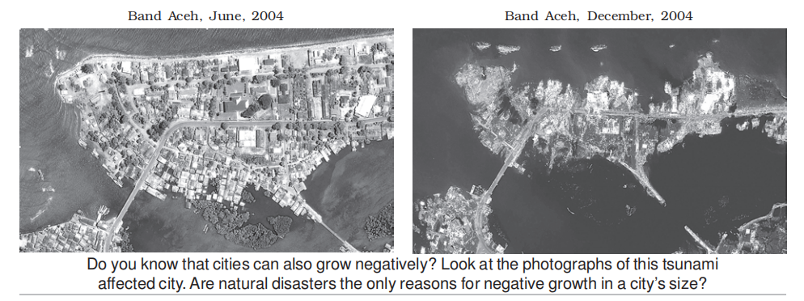
- Approaches to human development - There are many ways of looking at the problem of human development - Some of the important approaches are: - The income approach - One of the oldest approaches to human development, linking development to income. A higher level of income is associated with greater freedom and higher human development. - The welfare approach - Views human beings as beneficiaries of development. Advocates for higher government spending on education, health, and social amenities to improve human development. - Minimum needs approach - Proposed by the International Labour Organisation (ILO). Focuses on providing six basic needs: health, education, food, water supply, sanitation, and housing. - Capabilities approach - Associated with Prof. Amartya Sen. Emphasizes building human capabilities in health, education, and access to resources to enhance human development. - Measuring human development - Human Development Index (HDI) - The human development index (HDI) ranks the countries based on their performance in the key areas of health, education and access to resources - Dimensions - Life expectancy - The indicator chosen to assess health is the life expectancy at birth - A higher life expectancy means that people have a greater chance of living longer and healthier lives - Literacy rate and Gross enrolment ratio - The adult literacy rate and the gross enrolment ratio represent access to knowledge - The number of adults who are able to read and write and the number of children enrolled in schools show how easy or difficult it is to access knowledge in a particular country - Purchasing power - Access to resources is measured in terms of purchasing power (in U.S. dollars) - Each of these dimensions is given a weightage of 1/3 - The human development index is a sum total of the weights assigned to all these dimensions - HDI = (Health Index × Education Index × Income Index)^(1/3) - These rankings are based on a score between 0 to 1 that a country earns from its record in the key areas of human development - The closer a score is to one, the greater is the level of human development - Therefore, a score of 0.983 would be considered very high while 0.268 would mean a very low level of human development - The human development index measures attainments in human development - It reflects what has been achieved in the key areas of human development - Yet it is not the most reliable measure, this is because it does not say anything about the distribution - Human Poverty Index (HPI) - The human poverty index is related to the human development index - This index measures the shortfall in human development. It is a non-income measure. - Dimensions - HPI-1 (For Developing Countries) - Focuses on the most basic "survival" deprivations. - Longevity: - Probability at birth of not surviving to age 40. - Knowledge: - Adult illiteracy rate. - Decent Standard of Living: - Percentage of people without access to clean water. - Percentage of people without access to health services. - Percentage of malnourished/underweight children under five. - HPI-2 (For Developed Countries/OECD) - Since survival to 40 is common in rich nations, the bar is set higher. - Longevity: - Probability at birth of not surviving to age 60. - Knowledge: - Percentage of adults lacking functional literacy skills. - Standard of Living: - Percentage of people living below the poverty line (defined as 50% of median adjusted household disposable income). - Social Exclusion: - Rate of long-term unemployment (12 months or more). - Since 1990, the United Nations Development Programme (UNDP) has been publishing the Human Development Report every year - This report provides a rank-wise list of all member countries according to the level of human development - The Human Development index and the Human Poverty index are two important indices to measure human development used by the UNDP - Often the human poverty index is more revealing than the human development index - Looking at both these measures of human development together gives an accurate picture of the human development situation in a country - Modern Successor: - In 2010, the measurement became even more granular with the introduction of Multidimensional Poverty Index (MPI). - Multidimensional Poverty Index (MPI) - The Multidimensional Poverty Index is used to measure poverty beyond income - It captures multiple deprivations faced by individuals at the same time - MPI was developed by the United Nations Development Programme (UNDP) and the Oxford Poverty and Human Development Initiative (OPHI) - It is published annually in the Human Development Report - MPI complements income-based poverty measures and the Human Development Index (HDI) - It is a non-income, deprivation-based measure of poverty - Dimensions and Indicators (Total: 3 dimensions, 10 indicators) - Health (Weight: 1/3) - Nutrition: - Any adult or child in the household is malnourished - Child Mortality: - Any child has died in the household - Education (Weight: 1/3) - Years of Schooling: - No household member has completed at least six years of schooling - School Attendance: - Any school-aged child is not attending school - Living Standards (Weight: 1/3) - Cooking Fuel: - Household uses solid fuel for cooking - Sanitation: - Household has no improved sanitation facility or it is shared - Drinking Water: - Household lacks access to safe drinking water or water source is distant - Electricity: - Household has no electricity - Housing: - Household has inadequate housing (floor, roof or walls) - Assets: - Household lacks basic assets (such as radio, TV, phone, bicycle, etc.) - Identification of the Poor - A person is considered multidimensionally poor if deprived in at least 33 percent of the weighted indicators - Calculation of MPI - MPI = H × A - H = Headcount Ratio (proportion of people who are multidimensionally poor) - A = Intensity of Poverty (average deprivation among the poor) - MPI provides information on: - Incidence of poverty (how many are poor) - Intensity of poverty (how poor they are) - MPI gives a more comprehensive picture of poverty by showing overlapping deprivations - National Multidimensional Poverty Index (National MPI) - India’s National Multidimensional Poverty Index is developed by NITI Aayog - It is based on the global MPI framework of UNDP and OPHI - It uses National Family Health Survey (NFHS) data - It is used to measure multidimensional poverty at national, state, district and sub-district levels - It supports evidence-based policymaking and targeted welfare interventions - That's why India required it's own dedicated index, so that policies can be made based on government collected data - Dimensions and Indicators (Total: 3 dimensions, 12 indicators) - Health - Nutrition: - Any adult or child in the household is malnourished - Child and Adolescent Mortality: - Any child or adolescent has died in the household - Maternal Health: - A woman in the household did not receive adequate maternal health care - Education - Years of Schooling: - No household member has completed at least six years of schooling - School Attendance: - Any school-aged child is not attending school - Standard of Living - Cooking Fuel: - Household uses solid fuel for cooking - Sanitation: - Household lacks improved sanitation facility - Drinking Water: - Household lacks access to safe drinking water - Electricity: - Household has no electricity - Housing: - Household has inadequate housing - Bank Account: - Household has no access to a bank account - Assets: - Household lacks basic assets - Identification of the Poor - A household is considered multidimensionally poor if deprived in at least 33 percent of the weighted indicators - Calculation - MPI = H × A - H = Headcount Ratio (proportion of multidimensionally poor population) - A = Intensity of Poverty (average deprivation among the poor) - Importance - Enables monitoring of poverty reduction across states and districts - Helps identify specific deprivations contributing to poverty - Supports targeted implementation of government schemes - India’s National MPI is aligned with Sustainable Development Goal (SDG) 1: No Poverty - Gross National Happiness (GNH) - Bhutan is the only country in the world to officially proclaim the Gross National Happiness (GNH) as the measure of the country’s progress - Material progress and technological developments are approached more cautiously taking into consideration the possible harm they might bring to the environment or the other aspects of cultural and spiritual life of the Bhutanese - This simply means material progress cannot come at the cost of happiness - GNH encourages us to think of the spiritual, non-material and qualitative aspects of development - International comparisons - Overview - International comparisons of human development are interesting - Size of the territory and per capita income are not directly related to human development - Often smaller countries have done better than larger ones in human development - Similarly, relatively poorer nations have been ranked higher than richer neighbours in terms of human development - For example, Sri Lanka, Trinidad and Tobago have a higher rank than India in the human development index despite having smaller economies - Similarly, within India, Kerala performs much better than Punjab and Gujarat in human development despite having lower per capita income - Classification - Countries can be classified into four groups on the basis of the human development scores earned by them (Table 4.2) -| Level of Human Development | Score in Development Index | Number of Countries |
|---|---|---|
| Very High | Above 0.800 | 59 |
| High | Between 0.701 up to 0.799 | 53 |
| Medium | Between 0.550 up to 0.700 | 39 |
| Low | Below 0.549 | 38 |
| Rank | Country | Rank | Country |
|---|---|---|---|
| 1 | Norway | 6 | Iceland |
| 2 | Switzerland | 7 | Hong Kong |
| 3 | Australia | 8 | Sweden |
| 4 | Ireland | 9 | Singapore |
| 5 | Germany | 10 | Netherlands |
| Country | HDI Value | Country | HDI Value |
|---|---|---|---|
| Norway | 0.963 | U.S.A. | 0.944 |
| Australia | 0.955 | Japan | 0.943 |
| Sweden | 0.949 | U.K. | 0.939 |
| Switzerland | 0.947 | France | 0.938 |
| Thailand | 0.778 | Nepal | 0.526 |
| Sri Lanka | 0.751 | Germany | 0.930 |
| Iran | 0.736 | Bangladesh | 0.520 |
| Indonesia | 0.697 | Argentina | 0.863 |
| Egypt | 0.659 | Kenya | 0.474 |
| India | 0.602 | Cuba | 0.817 |
| Myanmar | 0.578 | Zambia | 0.394 |
| Pakistan | 0.527 | Russia | 0.795 |
| Brazil | 0.792 | Chad | 0.341 |
| Niger | 0.281 |
| State / UT | BPL % (1999–2000) (Lakdawala) |
BPL % (2011–12) (Tendulkar) |
Post-2015 Trend (MPI based) |
|---|---|---|---|
| Andhra Pradesh | 15.77 | 9.20 | Low poverty, further decline |
| Arunachal Pradesh | 33.47 | 25.92 | Moderate poverty |
| Assam | 36.09 | 31.98 | Moderate poverty, uneven decline |
| Bihar | 42.60 | 33.74 | High poverty, fastest absolute reduction |
| Chhattisgarh | N/A | 39.93 | Moderate–High poverty |
| Goa | 4.40 | 5.09 | Very low poverty |
| Gujarat | 14.07 | 16.63 | Low–Moderate poverty |
| Haryana | 8.47 | 11.16 | Low poverty |
| Himachal Pradesh | 7.63 | 8.06 | Very low poverty |
| Jharkhand | N/A | 36.96 | High poverty |
| Karnataka | 20.04 | 20.91 | Moderate poverty |
| Kerala | 12.72 | 7.05 | Very low poverty |
| Madhya Pradesh | 37.43 | 31.65 | Moderate poverty, sharp decline |
| Maharashtra | 25.02 | 17.35 | Moderate poverty |
| Manipur | 28.54 | 36.89 | Moderate poverty |
| Meghalaya | 33.87 | 11.87 | Low–Moderate poverty |
| Mizoram | 19.47 | 20.40 | Low–Moderate poverty |
| Nagaland | 32.67 | 18.88 | Moderate poverty |
| Odisha | 47.15 | 32.59 | Major improvement |
| Punjab | 6.16 | 8.26 | Low poverty |
| Rajasthan | 15.28 | 14.71 | Moderate poverty |
| Sikkim | 36.55 | 8.19 | Very low poverty |
| Tamil Nadu | 21.12 | 11.28 | Low–Moderate poverty |
| Tripura | 34.44 | 14.05 | Moderate poverty |
| Uttar Pradesh | 31.15 | 29.43 | Moderate–High poverty |
| Uttarakhand | N/A | 11.26 | Low poverty |
| West Bengal | 27.02 | 19.98 | Moderate poverty |
| India (Overall) | 26.10 | 21.92 | MPI ~11% (2022–23) |
| State / UT | Total Literacy Rate (%) 2001 Census |
Female Literacy Rate (%) 2001 Census |
Total Literacy Rate (%) 2011 Census |
Female Literacy Rate (%) 2011 Census |
|---|---|---|---|---|
| States | ||||
| Andhra Pradesh | 61.11 | 51.17 | 67.02 | 59.15 |
| Arunachal Pradesh | 54.74 | 44.24 | 65.38 (2'nd lowest) | 57.70 |
| Assam | 64.28 | 56.03 | 72.19 | 66.27 |
| Bihar | 47.53 (lowest) | 33.57 (lowest) | 61.80 (lowest) | 51.50 (lowest) |
| Chhattisgarh | 65.18 | 52.40 | 70.28 | 60.24 |
| Goa | 82.32 (3'rd highest) | 75.51 (3'rd highest) | 88.70 (3'rd highest) | 84.66 (3'rd highest) |
| Gujarat | 69.97 | 58.60 | 78.03 | 69.68 |
| Haryana | 68.59 | 56.31 | 75.55 | 65.94 |
| Himachal Pradesh | 77.13 | 68.08 | 82.80 | 75.93 |
| Jammu & Kashmir | 54.46 (3'rd lowest) | 41.82 (3'nd lowest) | 67.16 | 56.43 |
| Jharkhand | 54.13 (2'nd lowest) | 39.38 (2'nd lowest) | 66.41 | 55.42 (3'rd lowest) |
| Karnataka | 67.04 | 57.45 | 75.36 | 68.08 |
| Kerala | 90.92 (highest) | 87.86 (highest) | 94.00 (highest) | 91.07 (highest) |
| Madhya Pradesh | 64.11 | 50.28 | 69.32 | 59.24 |
| Maharashtra | 77.27 | 67.51 | 82.34 | 75.87 |
| Manipur | 68.87 | 59.70 | 76.94 | 70.26 |
| Meghalaya | 63.31 | 60.41 | 74.43 | 72.89 |
| Mizoram | 88.49 (2'nd highest) | 86.13 (2'nd highest) | 91.33 (2'nd highest) | 89.27 (2'nd highest) |
| Nagaland | 67.11 | 61.92 | 79.55 | 76.11 |
| Odisha | 63.61 | 50.97 | 72.87 | 64.01 |
| Punjab | 69.95 | 63.55 | 75.84 | 70.73 |
| Rajasthan | 61.03 | 44.34 | 66.11 (3'rd lowest) | 52.12 (2'nd lowest) |
| Sikkim | 69.68 | 61.46 | 81.42 | 75.61 |
| Tamil Nadu | 73.47 | 64.55 | 80.09 | 73.44 |
| Tripura | 73.66 | 65.41 | 87.22 | 82.73 |
| Uttar Pradesh | 57.36 | 42.98 | 67.68 | 57.18 |
| Uttarakhand | 72.28 | 60.26 | 78.82 | 70.01 |
| West Bengal | 69.22 | 60.22 | 76.26 | 70.54 |
| Union Territories | ||||
| Andaman & Nicobar Islands | 81.18 | 75.29 | 86.63 | 81.84 (2'nd highest) |
| Chandigarh | 85.65 (2'nd highest) | 76.65 (2'nd highest) | 86.05 | 81.19 |
| Dadra & Nagar Haveli | 60.03 (lowest) | 42.99 (lowest) | 76.34 (lowest) | 64.32 (lowest) |
| Daman & Diu | 81.09 | 70.37 | 87.10 (2'nd highest) | 79.55 (second lowest) |
| Delhi | 81.82 | 75.00 | 86.21 | 80.76 |
| Lakshadweep | 87.52 (highest) | 81.56 (highest) | 91.85 (highest) | 87.95 (highest) |
| Puducherry | 81.49 | 74.13 | 85.85 | 80.67 |
| Overall | ||||
| India (Overall) | 65.38 | 54.16 | 74.04 | 65.46 |
| Rank | State / UT | HDI |
|---|---|---|
| States (Highest → Lowest) | ||
| 1 | Goa | 0.801 |
| 2 | Kerala | 0.799 |
| 3 | Uttarakhand | 0.758 |
| 4 | Himachal Pradesh | 0.757 |
| 5 | Sikkim | 0.753 |
| 6 | Mizoram | 0.751 |
| 7 | Punjab | 0.738 |
| 8 | Haryana | 0.737 |
| 9 | Maharashtra | 0.736 |
| 10 | Tamil Nadu | 0.732 |
| 11 | Telangana | 0.705 |
| 12 | Gujarat | 0.698 |
| 13 | Manipur | 0.686 |
| 14 | Arunachal Pradesh | 0.684 |
| 15 | West Bengal | 0.674 |
| 16 | Tripura | 0.667 |
| 17 | Dadra & Nagar Haveli | 0.662 |
| 18 | Odisha | 0.649 |
| 19 | Andhra Pradesh | 0.648 |
| 20 | Rajasthan | 0.638 |
| 21 | Chhattisgarh | 0.629 |
| 22 | Jharkhand | 0.618 |
| 23 | Madhya Pradesh | 0.608 |
| 24 | Uttar Pradesh | 0.592 |
| 25 | Bihar | 0.551 |
| Union Territories (Highest → Lowest) | ||
| 1 | Chandigarh | 0.793 |
| 2 | Puducherry | 0.782 |
| 3 | Delhi | 0.777 |
| 4 | Jammu & Kashmir | 0.760 |
| 5 | Lakshadweep | 0.751 |
| 6 | Andaman & Nicobar Islands | 0.746 |
| 7 | Daman & Diu | 0.695 |
| 8 | Dadra & Nagar Haveli | 0.662 |
| Source: United Nations Development Programme (UNDP), Sub-national Human Development Index (HDI) estimates (based on latest available data, largely 2017–2019; published subsequently) | ||
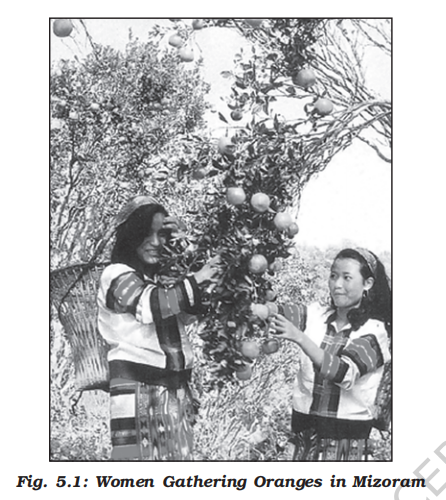
- Historical context - The earliest human beings depended on their immediate environment for their sustenance - They subsisted on: - Animals which they hunted - The edible plants which they gathered from forests in the vicinity - Primitive societies depended on wild animals - People located in very cold and extremely hot climates survived on hunting - The people in the coastal areas still catch fish though fishing has experienced modernisation due to technological progress - Many species, now have become extinct or endangered due to illegal hunting (poaching) - The early hunters used primitive tools made of stones, twigs or arrows so the number of animals killed was limited - Characteristics - Gathering and hunting are the oldest economic activity known - These are carried out at different levels with different orientations - Gathering is practised in regions with harsh climatic conditions - It often involves primitive societies, who extract, both plants and animals to satisfy their needs for food, shelter and clothing - This type of activity requires a small amount of capital investment and operates at very low level of technology - The yield per person is very low and little or no surplus is produced - Geographical distribution - Gathering is practised in: - High latitude zones which include northern Canada, northern Eurasia and southern Chile - Low latitude zones such as the Amazon Basin, tropical Africa, Northern fringe of Australia and the interior parts of Southeast Asia (Fig. 5.2) -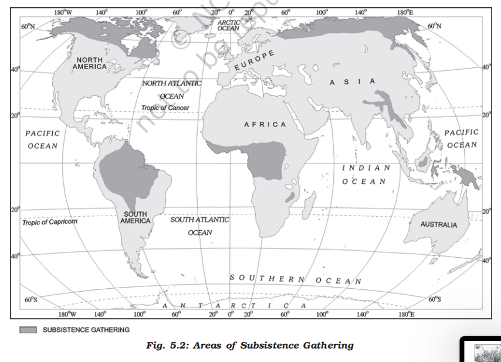
- Commercial aspects - In modern times some gathering is market-oriented and has become commercial - Gatherers collect valuable plants such as leaves, barks of trees and medicinal plants and after simple processing sell the products in the market - They use various parts of the plants, for example, the bark is used for quinine, tanin extract and cork— leaves supply materials for beverages, drugs, cosmetics, fibres, thatch and fabrics; nuts for food and oils and tree trunk yield rubber, balata, gums and resins - The name of the part of the chewing gum after the flavour is gone? - It is called Chicle — it is made from the milky juice of zapota tree - - Limitations - Gathering has little chance of becoming important at the global level - Products of such an activity cannot compete in the world market - Moreover, synthetic products often of better quality and at lower prices, have replaced many items supplied by the gatherers in tropical forests - Pastoralism - Overview - At some stage in history, with the realization that hunting is an unsustainable activity, human beings might have thought of domestication of animals - People living in different climatic conditions selected and domesticated animals found in those regions - Depending on the geographical factors, and technological development, animal rearing today is practised either at the subsistence [just to survive and no more] or at the commercial level - Nomadic herding -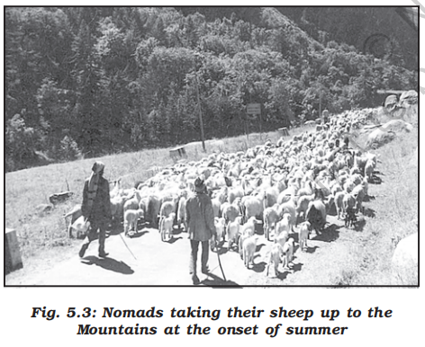
- Definition - Nomadic herding or pastoral nomadism is a primitive subsistence activity, in which the herders rely on animals for food, clothing, shelter, tools and transport - They move from one place to another along with their livestock, depending on the amount and quality of pastures and water - Each nomadic community occupies a well-identified territory as a matter of tradition - Livestock - A wide variety of animals is kept in different regions - In tropical Africa, cattle are the most important livestock, while in Sahara and Asiatic deserts, sheep, goats and camel are reared - In the mountainous areas of Tibet and Andes, yak and llamas and in the Arctic and sub Arctic areas, reindeer are the most important animals - Regions (three important regions) -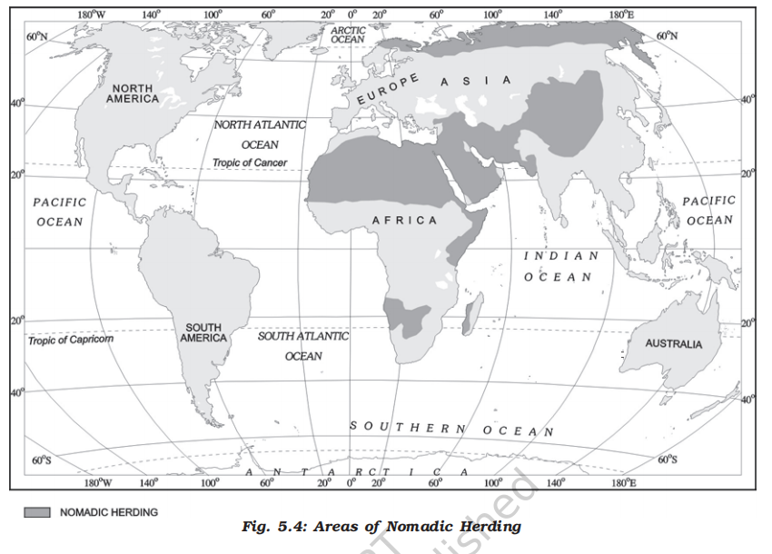
- 1. North Africa and central asia - The core region extends from the Atlantic shores of North Africa eastwards across the Arabian peninsula into Mongolia and Central China - Side note - This is the classic horse–nomad zone because horses thrive in open grasslands. - It is the reason India had to import horses from this region as it lacked the right ecology for breeding large numbers of high-quality war horses. - Horses could survive in India, but breeding strong, fast cavalry horses at scale was difficult in India. Horses bred in India from the same original breeds were often smaller, less durable for long campaigns and less suited for heavy cavalry warfare - This is also a reason why horses were brought in as adults and not as foals, if they were brought as foals, then their development in India would lead them to a weaker horse as compared to it's original counterpart - This is similar to athletes that train at high altitude because low oxygen forces physiological adaptation, and they compete at lower altitude to cash in those adaptations. But this these are reversible adaptations and last only for few weeks in comparison to a person who is born and became an adult at those altitudes, they will have more structural advantages like larger lung volumes, chest dimensions, capillary density, etc - 2. Tundra region of Eurasia - The region extends over the tundra region of Eurasia - 3. South-west Africa and on the island of Madagascar - In the southern hemisphere there are small areas in South-west Africa and on the island of Madagascar (Fig. 5.4) - Movement - Movement in search of pastures is undertaken either over vast horizontal distances or vertically from one elevation to another in the mountainous regions - The process of migration from plain areas to pastures on mountains during summers and again from mountain pastures to plain areas during winters is known as transhumance - In mountain regions, such as Himalayas, Gujjars, Bakarwals, Gaddis and Bhotiyas migrate from plains to the mountains in summers and to the plains from the high altitude pastures in winters - Similarly, in the tundra regions, the nomadic herders move from south to north in summers and from north to south in winters - Challenges - The number of pastoral nomads has been decreasing and the areas operated by them shrinking - This is due to - Imposition of political boundaries - New settlement plans by different countries - Commercial livestock rearing -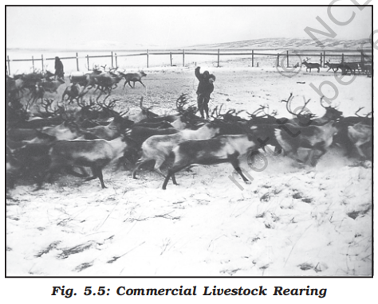
- Definition - Unlike nomadic herding, commercial livestock rearing is more organised and capital intensive - Commercial livestock ranching is essentially associated with western cultures and is practised on permanent ranches - These ranches cover large areas and are divided into a number of parcels, which are fenced to regulate the grazing - When the grass of one parcel is grazed, animals are moved to another parcel - The number of animals in a pasture is kept according to the carrying capacity of the pasture -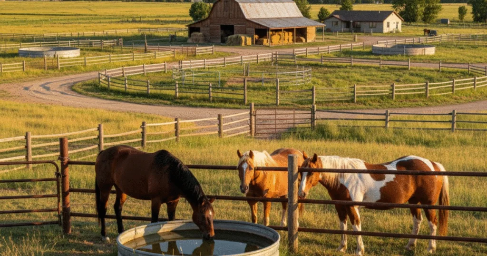
- Characteristics - This is a specialized activity in which only one type of animal is reared - Important animals include sheep, cattle, goats and horses - Products such as meat, wool, hides and skin are processed and packed scientifically and exported to different world markets - Rearing of animals in ranching is organized on a scientific basis - The main emphasis is on breeding, genetic improvement, disease control and health care of the animals - Regions - New Zealand, Australia, Argentina, Uruguay and United States of America are important countries where commercial livestock rearing is practiced (Fig. 5.6) -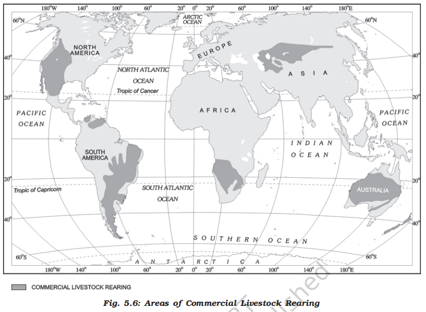
- Agriculture - Overview - Agriculture is practised under multiple combinations of physical and socio-economic conditions, which gives rise to different types of agricultural systems - Based on methods of farming, different types of crops are grown and livestock raised - The following are the main agricultural systems - Farming organisation types - Overview - Types of farming can also be categorised according to the farming organisation - Farming organisation is affected by the way in which farmers own their farms and various policies of the government which help to run these farms - Co-operative farming - A group of farmers form a co-operative society by pooling in their resources voluntarily for more efficient and profitable farming - Individual farms remain intact and farming is a matter of cooperative initiative -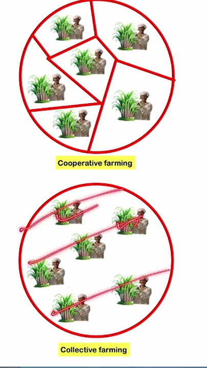
- Co-operative societies help farmers, to procure all important inputs of farming, sell the products at the most favourable terms and help in processing of quality products at cheaper rates - Co-operative movement originated over a century ago and has been successful in many western European countries like Denmark, Netherlands, Belgium, Sweden, Italy etc. - In Denmark, the movement has been so successful that practically every farmer is a member of a co-operative - Collective farming - The basic principle behind this type of farming is based on social ownership of the means of production and collective labour - Collective farming or the model of Kolkhoz was introduced in erstwhile Soviet Union to improve upon the inefficiency of the previous methods of agriculture and to boost agricultural production for self-sufficiency - The farmers used to pool in all their resources like land, livestock and labour - However, they were allowed to retain very small plots to grow crops in order to meet their daily requirements - Subsistence agriculture - Definition - Subsistence agriculture is one in which the farming areas consume all, or nearly so, of the products locally grown - It can be grouped in two categories: - Primitive subsistence agriculture or Shifting cultivation - Description - Primitive subsistence agriculture or shifting cultivation is widely practised by many tribes in the tropics, especially in Africa, south and central America and south east Asia (Fig. 5.7) - The vegetation is usually cleared by fire, and the ashes add to the fertility of the soil - Shifting cultivation is thus, also called slash and burn agriculture - The cultivated patches are very small and cultivation is done with very primitive tools such as sticks and hoes - After sometime (3 to 5 years) the soil loses its fertility and the farmer shifts to another parts and clears other patch of the forest for cultivation - The farmer may return to the earlier patch after sometime - One of the major problems of shifting cultivation is that the cycle of jhum becomes less and less due to loss of fertility in different parcels - Regions and names - It is prevalent in tropical region in different names, e.g. Jhuming in North eastern states of India, Milpa in central America and Mexico and Ladang in Indonesia and Malaysia - - Intensive subsistence agriculture - This type of agriculture is largely found in densely populated regions of monsoon Asia - Basically, there are two types of intensive subsistence agriculture - 1. Intensive subsistence agriculture dominated by wet paddy cultivation - This type of agriculture is characterised by dominance of the rice crop - Land holdings are very small due to the high density of population - Farmers work with the help of family labour leading to intensive use of land - Use of machinery is limited and most of the agricultural operations are done by manual labour - Farm yard manure is used to maintain the fertility of the soil - In this type of agriculture, the yield per unit area is high but per labour productivity is low - 2. Intensive subsistence agriculture dominated by crops other than paddy - Due to the difference in relief, climate, soil and some of the other geographical factors, it is not practical to grow paddy in many parts of monsoon Asia - Wheat, soyabean, barley and sorghum are grown in northern China, Manchuria, North Korea and North Japan - In India wheat is grown in western parts of the Indo-Gangetic plains and millets are grown in dry parts of western and southern India - Most of the characteristics of this type of agriculture are similar to those dominated by wet paddy except that irrigation is often used -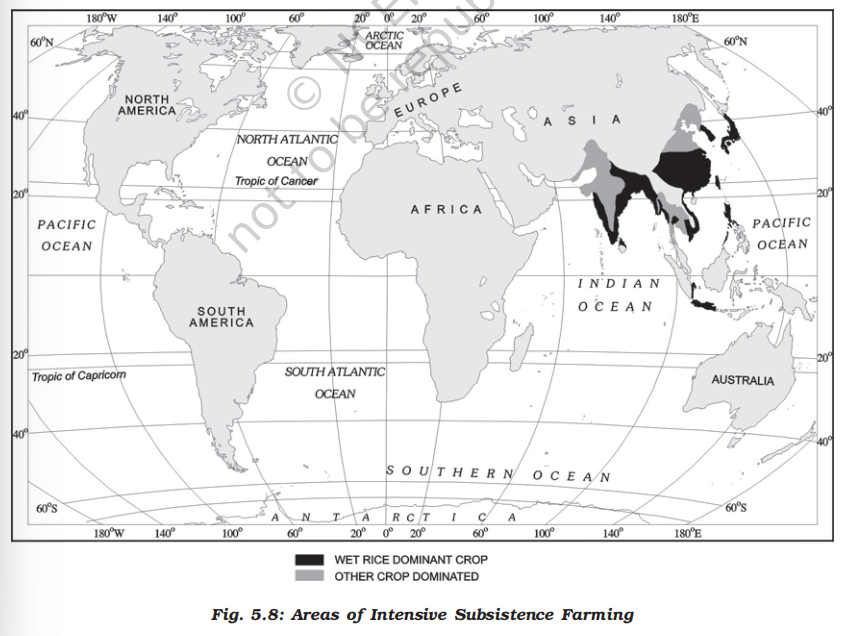
- Plantation agriculture -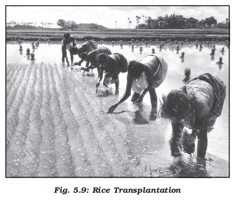
- Historical context - Plantation agriculture as mentioned above was introduced by the Europeans in colonies situated in the tropics - Characteristics - Some of the important plantation crops are tea, coffee, cocoa, rubber, cotton, oil palm, sugarcane, bananas and pineapples - The characteristic features of this type of farming are large estates or plantations, large capital investment, managerial and technical support, scientific methods of cultivation, single crop specialisation, cheap labour, and a good system of transportation which links the estates to the factories and markets for the export of the products - Examples -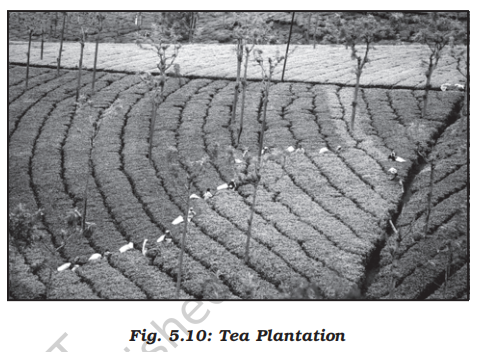
- The French established cocoa and coffee plantations in west Africa - The British set up large tea gardens in India and Sri Lanka, rubber plantations in Malaysia and sugarcane and banana plantations in West Indies - Spanish and Americans invested heavily in coconut and sugarcane plantations in the Philippines - The Dutch once had monopoly over sugarcane plantation in Indonesia - Some coffee fazendas (large plantations) in Brazil are still managed by Europeans - Today, ownership of the majority of plantations has passed into the hands of the government or the nationals of the countries concerned - Extensive commercial grain cultivation -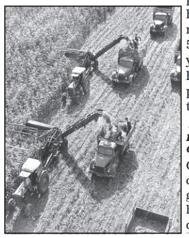
- Description - Commercial grain cultivation is practised in the interior parts of semi-arid lands of the mid-latitudes - Wheat is the principal crop, though other crops like corn, barley, oats and rye are also grown - The size of the farm is very large, therefore entire operations of cultivation from ploughing to harvesting are mechanised (Fig. 5.11) - There is low yield per acre but high yield per person - Regions - This type of agriculture is best developed in Eurasian steppes, the Canadian and American Prairies, the Pampas of Argentina, the Velds of South Africa, the Australian Downs and the Canterbury Plains of New Zealand (Locate these areas on the world map) -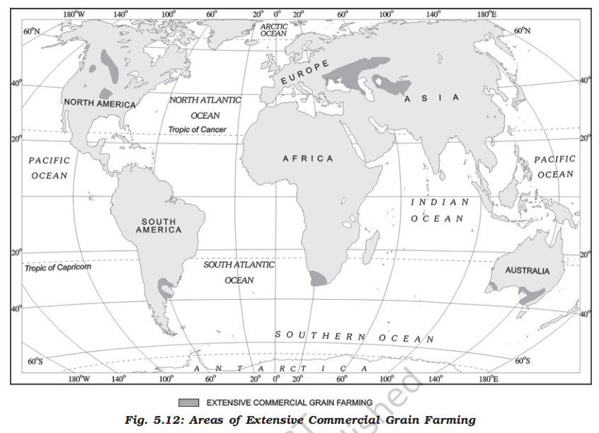
- Mixed farming - Description - This form of agriculture is found in the highly developed parts of the world, e.g. North-western Europe, Eastern North America, parts of Eurasia and the temperate latitudes of Southern continents (Fig. 5.14) - Mixed farms are moderate in size and usually the crops associated with it are wheat, barley, oats, rye, maize, fodder and root crops - Fodder crops are an important component of mixed farming - Crop rotation and inter-cropping play an important role in maintaining soil fertility - Equal emphasis is laid on crop cultivation and animal husbandry - Animals like cattle, sheep, pigs and poultry provide the main income along with crops - Mixed farming is characterized by high capital expenditure on farm machinery and building, extensive use of chemical fertilizers and green manures and also by the skill and expertise of the farmers -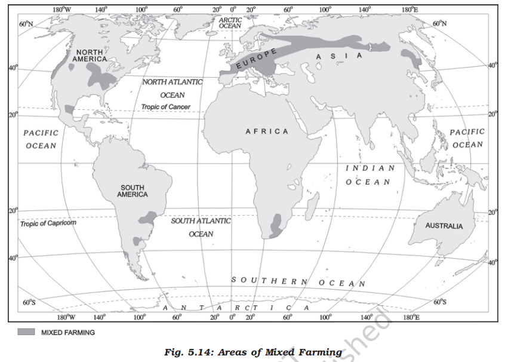
- Dairy farming -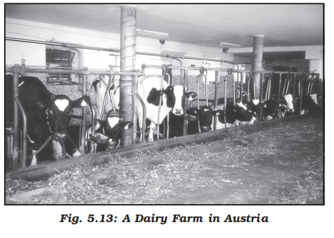
- Description - Dairy is the most advanced and efficient type of rearing of milch animals - It is highly capital intensive - Animal sheds, storage facilities for fodder, feeding and milching machines add to the cost of dairy farming - Special emphasis is laid on cattle breeding, health care and veterinary services - It is highly labour intensive as it involves rigorous care in feeding and milching - There is no off season during the year as in the case of crop raising - It is practised mainly near urban and industrial centres which provide neighbourhood market for fresh milk and dairy products - The development of transportation, refrigeration, pasteurisation and other preservation processes have increased the duration of storage of various dairy products - Regions (three main regions) - 1. North Western Europe (largest) - 2. Canada - 3. South Eastern Australia, New Zealand and Tasmania -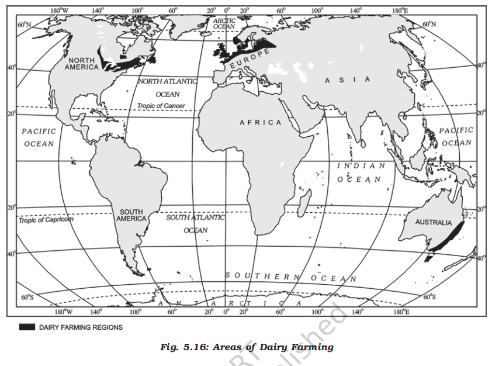
- Mediterranean agriculture -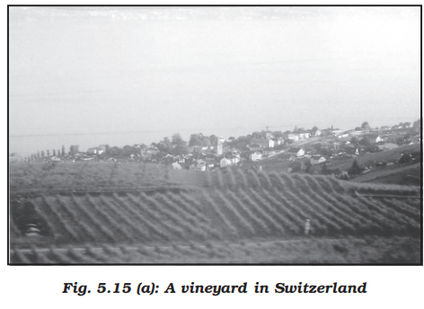
-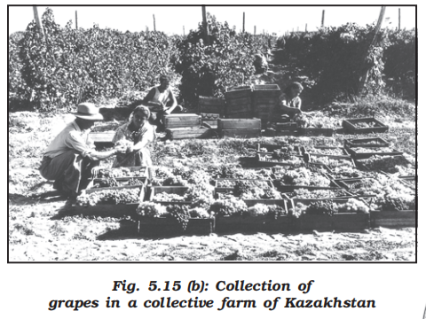
- Description - Mediterranean agriculture is highly specialised commercial agriculture - It is practised in the countries on either side of the Mediterranean sea in Europe and in north Africa from Tunisia to Atlantic coast, southern California, central Chile, south western parts of South Africa and south and south western parts of Australia - This region is an important supplier of citrus fruits - Viticulture or grape cultivation is a speciality of the Mediterranean region - Best quality wines in the world with distinctive flavours are produced from high quality grapes in various countries of this region - The inferior grapes are dried into raisins and currants - This region also produces olives and figs - The advantage of Mediterranean agriculture is that more valuable crops such as fruits and vegetables are grown in winters when there is great demand in European and North American markets - Market gardening and horticulture -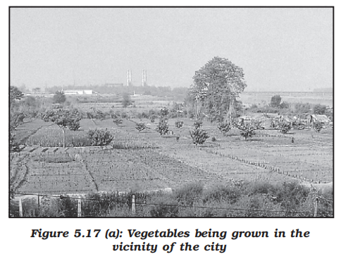
- Description - Market gardening and horticulture specialise in the cultivation of high value crops such as vegetables, fruits and flowers, solely for the urban markets - Farms are small and are located where there are good transportation links with the urban centre where high income group of consumers is located - It is both labour and capital intensive and lays emphasis on the use of irrigation, HYV seeds, fertilisers, insecticides, greenhouses and artificial heating in colder regions - This type of agriculture is well developed in densely populated industrial districts of north west Europe, north eastern United States of America and the Mediterranean regions - The Netherlands specialises in growing flowers and horticultural crops especially tulips, which are flown to all major cities of Europe - Truck farming -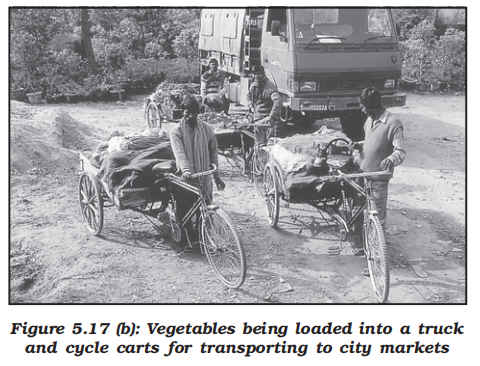
- Truck farming is a specialized form of commercial gardening where high-value, perishable crops—mainly vegetables, fruits, and flowers—are grown on a large scale for sale in urban markets. - The distance of truck farms from the market is governed by the distance that a truck can cover overnight, hence the name truck farming - Factory farming -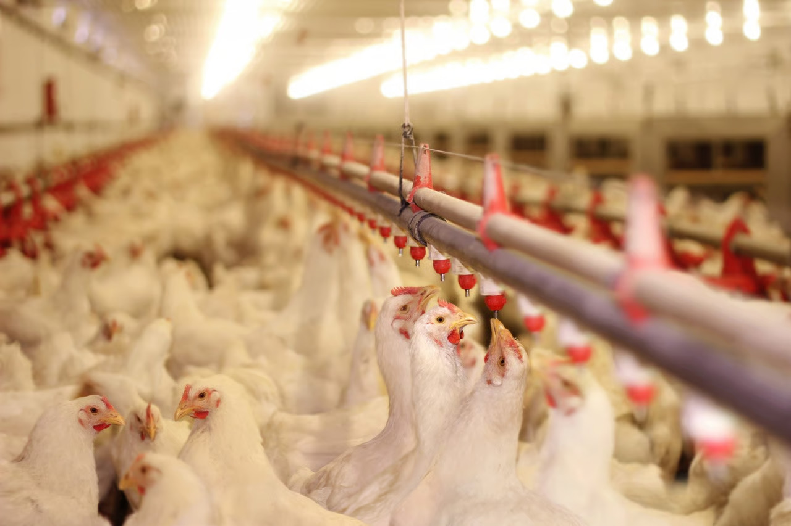
- In addition to market gardening, a modern development in the industrial regions of Western Europe and North America is factory farming - Livestock, particularly poultry and cattle rearing, is done in stalls and pens, fed on manufactured feedstuff and carefully supervised against diseases - This requires heavy capital investment in terms of building, machinery for various operations, veterinary services and heating and lighting - One of the important features of poultry farming and cattle rearing is breed selection and scientific breeding - Mining -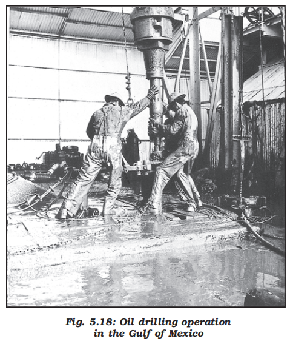
- Historical context - The discovery of minerals in the history of human development, is reflected in many stages in terms of copper age, bronze age and iron age - The use of minerals in ancient times was largely confined to the making of tools, utensils and weapons - The actual development of mining began with the industrial revolution and its importance is continuously increasing - Factors affecting mining activity - The profitability of mining operations thus, depends on two main factors: - 1. Physical factors - These include the size, grade and the mode of occurrence of the deposits - 2. Economic factors - Such as the demand for the mineral, technology available and used, capital to develop infrastructure and the labour and transport costs - Methods of mining -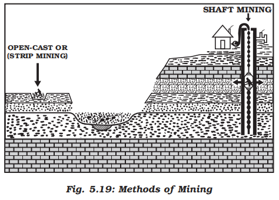
- Depending on the mode of occurrence and the nature of the ore, mining is of two types - Surface mining - The surface mining also known as open-cast mining is the easiest and the cheapest way of mining minerals that occur close to the surface - Overhead costs such as safety precautions and equipment is relatively low in this method - The output is both large and rapid - Underground mining - When the ore lies deep below the surface, underground mining method (shaft method) has to be used - In this method, vertical shafts have to be sunk, from where underground galleries radiate to reach the minerals - Minerals are extracted and transported to the surface through these passages - It requires specially designed lifts, drills, haulage vehicles, ventilation system for safety and efficient movement of people and material - This method is risky - Poisonous gases, fires, floods and caving in lead to fatal accidents - Global trends - The developed economies are retreating from mining, processing and refining stages of production due to high labour costs, while the developing countries with large labour force and striving for higher standard of living are becoming more important - Several countries of Africa and few of south America and Asia have over fifty per cent of the earnings from minerals alone - Secondary activities - Introduction - All economic activities namely primary, secondary, tertiary and quaternary, revolve around obtaining and utilising resources necessary for survival - Secondary activities add value to natural resources by transforming raw materials into valuable products - Cotton in the boll has limited use but after it is transformed into yarn, becomes more valuable and can be used for making clothes - Iron ore, cannot be used; directly from the mines, but after being converted into steel it gets its value and can be used for making many valuable machines, tools, etc. - The same is true of most of the materials from the farm, forest, mine and the sea - Secondary activities, therefore, are concerned with manufacturing, processing and construction (infrastructure) industries - Manufacturing - Definition - Manufacturing involves a full array of production from handicrafts to moulding iron and steel and stamping out plastic toys to assembling delicate computer components or space vehicles - In each of these processes, the common characteristics are the application of power, mass production of identical products and specialised labour in factory settings for the production of standardised commodities - Manufacturing may be done with modern power and machinery or it may still be very primitive - Most of the Third World countries still ‘manufacture’ in the literal sense of the term - It is difficult to present a full picture of all the manufacturers in these countries - More emphasis is given to the kind of ‘industrial’ activity which involves less complicated systems of production - Characteristics of modern large scale manufacturing - Specialisation of skills/methods of production - Under the ‘craft’ method factories produce only a few pieces which are made-to-order - So the costs are high - On the other hand, mass production involves production of large quantities of standardised parts by each worker performing only one task repeatedly - ‘Manufacturing’ industry and ‘manufacturing industry’ - Manufacturing literally means ‘to make by hand’ - However, now it includes goods ‘made by machines’ - It is essentially a process which involves transforming raw materials into finished goods of higher value for sale in local or distant markets - Conceptually, an industry is a geographically located manufacturing unit maintaining books of accounts and, records under a management system - As the term industry is comprehensive, it is also used as synonymous with ‘manufacturing’ - When one uses terms like ‘steel industry’ and ‘chemical industry’ one thinks of factories and processes - But there are many secondary activities which are not carried on in factories such as what is now called the ‘entertainment industry’ and Tourism industry, etc. - So for clarity the longer expression ‘manufacturing industry’ is used - Mechanisation - Mechanisation refers to using gadgets which accomplish tasks - Automation (without aid of human thinking during the manufacturing process) is the advanced stage of mechanisation - Automatic factories with feedback and closed-loop computer control systems where machines are developed to ‘think’, have sprung up all over the world - Technological innovation - Technological innovations through research and development strategy are an important aspect of modern manufacturing for quality control, eliminating waste and inefficiency, and combating pollution - Organisational structure and stratification - Modern manufacturing is characterised by: - A complex machine technology - Extreme specialisation and division of labour for producing more goods with less effort, and low costs - Vast capital - Large organisations - Executive bureaucracy - Uneven geographic distribution - Major concentrations of modern manufacturing have flourished in a few number of places - These cover less than 10 per cent of the world’s land area - These nations have become the centres of economic and political power - However, in terms of the total area covered, manufacturing sites are much less conspicuous [clearly visible] and concentrated on much smaller areas than that of agriculture due to greater intensity of processes - For example, 2.5 sq km of the American corn belt usually includes about four large farms employing about 10-20 workers supporting 50-100 persons - But this same area could contain several large integrated factories and employ thousands of workers - Factors influencing industrial locations - Industries maximise profits by reducing costs - Therefore, industries should be located at points where the production costs are minimum - Some of the factors influencing industrial locations are as under: - Access to market - The existence of a market for manufactured goods is the most important factor in the location of industries - ‘Market’ means people who have a demand for these goods and also have the purchasing power (ability to purchase) to be able to purchase from the sellers at a place - Remote areas inhabited by a few people offer small markets - The developed regions of Europe, North America, Japan and Australia provide large global markets as the purchasing power of the people is very high - The densely populated regions of South and South-east Asia also provide large markets - Some industries, such as aircraft manufacturing, have a global market - The arms industry also has global markets - Access to raw material - Raw material used by industries should be cheap and easy to transport - Industries based on cheap, bulky and weight-losing material (ores) are located close to the sources of raw material such as steel, sugar, and cement industries - Perishability is a vital factor for the industry to be located closer to the source of the raw material - Agro-processing and dairy products are processed close to the sources of farm produce or milk supply respectively - Access to labour supply - Labour supply is an important factor in the location of industries - Some types of manufacturing still require skilled labour - Increasing mechanisation, automation and flexibility of industrial processes have reduced the dependence of industry upon the labours - Access to sources of energy - Industries which use more power are located close to the source of the energy supply such as the aluminium industry - Earlier coal was the main source of energy, today hydroelectricity and petroleum are also important sources of energy for many industries - Access to transportation and communication facilities - Speedy and efficient transport facilities to carry raw materials to the factory and to move finished goods to the market are essential for the development of industries - The cost of transport plays an important role in the location of industrial units - Western Europe and eastern North America have a highly developed transport system which has always induced the concentration of industries in these areas - Modern industry is inseparably tied to transportation systems - Improvements in transportation led to integrated economic development and regional specialisation of manufacturing - Communication is also an important need for industries for the exchange and management of information - Government policy - Governments adopt ‘regional policies’ to promote ‘balanced’ economic development and hence set up industries in particular areas - Access to agglomeration economies/links between industries - Many industries benefit from nearness to a leader-industry and other industries - These benefits are termed as agglomeration economies - Savings are derived from the linkages which exist between different industries - These factors operate together to determine industrial location - Foot loose industries - Foot loose industries can be located in a wide variety of places - They are not dependent on any specific raw material, weight losing or otherwise - They largely depend on component parts which can be obtained anywhere - They produce in small quantity and also employ a small labour force - These are generally not polluting industries - The important factor in their location is accessibility by road network - Classification of manufacturing industries -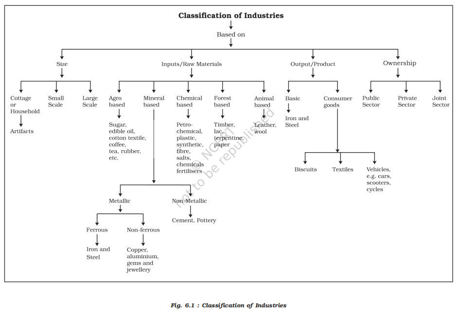
- Overview - Manufacturing industries are classified on the basis of their size, inputs/raw materials, output/products and ownership (Fig. 6.1) - Industries based on size - Overview - The amount of capital invested, number of workers employed and volume of production determine the size of industry - Accordingly, industries may be classified into household or cottage, small-scale and large-scale - Household industries or cottage industries -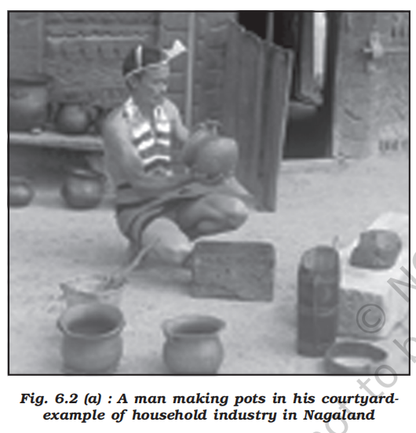
- It is the smallest manufacturing unit - The artisans use local raw materials and simple tools to produce everyday goods in their homes with the help of their family members or part-time labour - Finished products may be for consumption in the same household or, for sale in local (village) markets, or, for barter -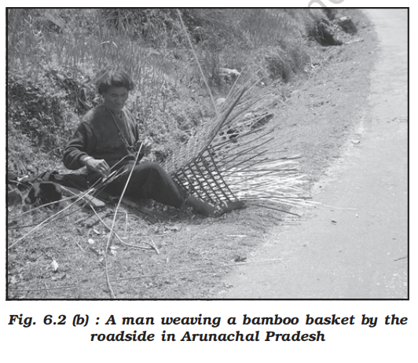
- Capital and transportation do not wield much influence as this type of manufacturing has low commercial significance and most of the tools are devised locally - Some common everyday products produced in this sector of manufacturing include foodstuffs, fabrics, mats, containers, tools, furniture, shoes, and figurines from wood lot and forest, shoes, thongs and other articles from leather; pottery and bricks from clays and stones - Goldsmiths make jewellery of gold, silver and bronze - Some artefacts and crafts are made out of bamboo, wood obtained locally from the forests -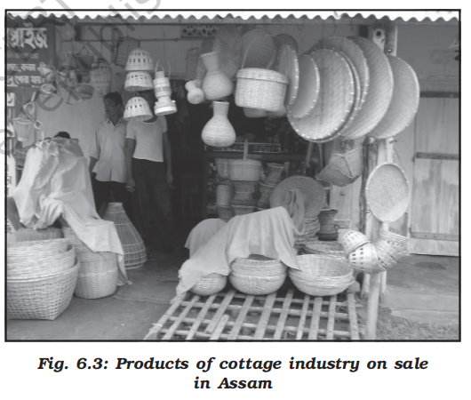
- Small scale manufacturing - Small scale manufacturing is distinguished from household industries by its production techniques and place of manufacture (a workshop outside the home/cottage of the producer) - This type of manufacturing uses local raw material, simple power-driven machines and semi-skilled labour - It provides employment and raises local purchasing power - Therefore, countries like India, China, Indonesia and Brazil, etc. have developed labour-intensive small scale manufacturing in order to provide employment to their population - Large scale manufacturing -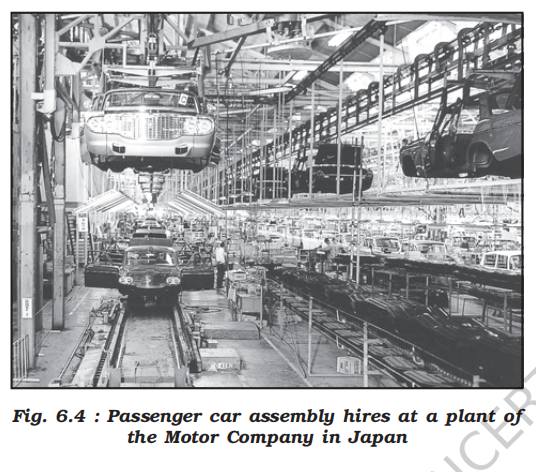
- Large scale manufacturing involves a large market, various raw materials, enormous energy, specialised workers, advanced technology, assembly-line mass production and large capital - This kind of manufacturing developed in the last 200 years, in the United Kingdom, north-eastern U.S.A. and Europe - Now it has diffused to almost all over the world - On the basis of the system of large scale manufacturing, the world’s major industrial regions may be grouped under two broad types, namely - 1. Traditional large-scale industrial regions - These are thickly clustered in a few more developed countries - 2. High-technology large scale industrial regions - These have diffused to less developed countries - Industries based on inputs/raw materials - Agro based industries -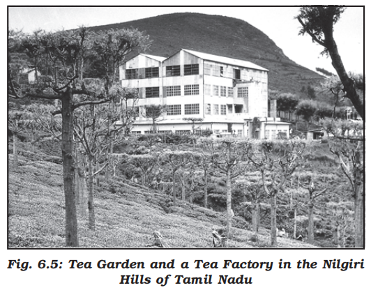
- Agro processing involves the processing of raw materials from the field and the farm into finished products for rural and urban markets - Major agro-processing industries are food processing, sugar, pickles, fruits juices, beverages (tea, coffee and cocoa), spices and oils fats and textiles (cotton, jute, silk), rubber, etc. - Food processing - Agro processing includes canning, producing cream, fruit processing and confectionery - While some preserving techniques, such as drying, fermenting and pickling, have been known since ancient times, these had limited applications to cater to the pre-Industrial Revolution demands - Agri-business is commercial farming on an industrial scale often financed by business whose main interests lie outside agriculture, for example, large corporations in tea plantation business - Agri-business farms are mechanised, large in size, highly structured, reliant on chemicals, and may be described as ‘agro-factories’ - Mineral based industries - These industries use minerals as a raw material - Some industries use ferrous metallic minerals which contain ferrous (iron), such as iron and steel industries but some use non-ferrous metallic minerals, such as aluminium, copper and jewellery industries - Many industries use non-metallic minerals such as cement and pottery industries - Chemical based industries - Such industries use natural chemical minerals, e.g. mineral-oil (petroleum) is used in petrochemical industry - Salts, sulphur and potash industries also use natural minerals - Chemical industries are also based on raw materials obtained from wood and coal - Synthetic fibre, plastic, etc. are other examples of chemical based industries - Forest based raw material using industries -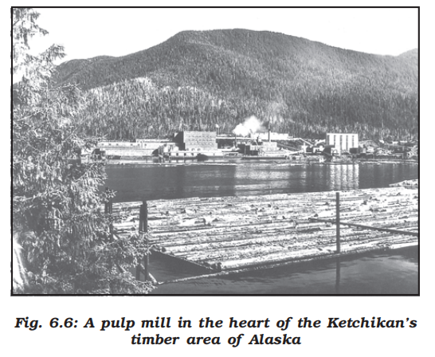
- The forests provide many major and minor products which are used as raw material - Timber for furniture industry, wood, bamboo and grass for paper industry, lac for lac industries come from forests - Animal based industries - Leather for leather industry and wool for woollen textiles are obtained from animals - Besides, ivory is also obtained from elephant’s tusks - Industries based on output / use of product - I. Basic (Intermediate Goods) Industries - Definition: - Industries whose output is used as raw material or input by other industries. - Nature of output: - Not meant for direct consumption. - Used for further production. - Role in economy: - Form the base of industrial development. - Support multiple downstream industries. - Examples: - Iron and steel industry - Cement industry - Chemical industry - Power generation industry - II. Consumer Goods (Non-Basic) Industries - Definition: - Industries whose output is directly consumed by consumers. - Nature of output: - Final goods. - Not used for further industrial processing. - Sub-types: - a. Durable Consumer Goods - Goods with long usable life. - Examples: - Televisions - Refrigerators - Automobiles - b. Non-Durable Consumer Goods - Goods consumed quickly. - Examples: - Bread and biscuits - Tea - Soaps and toiletries - Paper for writing - Industries based on ownership - Public Sector Industries are owned and managed by governments - In India, there were a number of Public Sector Undertakings (PSUs) - Socialist countries have many state owned industries - Mixed economies have both Public and Private sector enterprises - Private Sector Industries are owned by individual investors - These are managed by private organisations - In capitalist countries, industries are generally owned privately - Joint Sector Industries - Joint Sector Industries are managed by joint stock companies or sometimes the private and public sectors together establish and manage the industries - Can you make a list of such industries? - Traditional large-scale industrial regions - Overview - These are based on heavy industry, often located near coal-fields and engaged in metal smelting, heavy engineering, chemical manufacture or textile production - These industries are now known as smokestack industries - Traditional industrial regions can be recognised by: - High proportion of employment in manufacturing industry - High-density housing, often of inferior type, and poor services - Unattractive environment, for example, pollution, waste heaps, and so on - Problems of unemployment, emigration and derelict land areas caused by closure of factories because of a worldwide fall in demand - The Ruhr coal-field, Germany - This has been one of the major industrial regions of Europe for a long time - Coal and iron and steel formed the basis of the economy, but as the demand for coal declined, the industry started shrinking - Even after the iron ore was exhausted, the industry remained, using imported ore brought by waterways to the Ruhr - The Ruhr region is responsible for 80 per cent of Germany’s total steel production - Changes in the industrial structure have led to the decay of some areas, and there are problems of industrial waste and pollution - The future prosperity of the Ruhr is based less on the products of coal and steel, for which it was initially famous, and more on the new industries like the huge Opel car assembly plant, new chemical plants, universities - Out-of-town shopping centres have appeared resulting in a ‘New Ruhr’ landscape - Iron and steel industry - Overview - The iron and steel industry forms the base of all other industries and, therefore, it is called a basic industry - It is basic because it provides raw material for other industries such as machine tools used for further production - It may also be called a heavy industry because it uses large quantities of bulky raw materials and its products are also heavy - Process - Iron is extracted from iron ore by smelting in a blast furnace with carbon (coke) and limestone - The molten iron is cooled and moulded to form pig iron which is used for converting into steel by adding strengthening materials like manganese - Location - The large integrated steel industry is traditionally located close to the sources of raw materials – iron ore, coal, manganese and limestone – or at places where these could be easily brought, e.g. near ports - But in mini steel mills access to markets is more important than inputs - Mini mills - These are less expensive to build and operate and can be located near markets because of the abundance of scrap metal, which is the main input - Traditionally, most of the steel was produced at large integrated plants, but mini mills are limited to just one-step process – steel making – and are gaining ground - Distribution - The industry is one of the most complex and capital-intensive industries and is concentrated in the advanced countries of North America, Europe and Asia - In U.S.A, most of the production comes from the north Appalachian region (Pittsburgh), Great Lake region (Chicago-Gary, Erie, Cleveland, Lorain, Buffalo and Duluth) and the Atlantic Coast (Sparrows Point and Morisville) - The industry has also moved towards the southern state of Alabama - Pittsburg area is now losing ground, it has now become the “rust bowl” of U.S.A - In Europe, U.K., Germany, France, Belgium, Luxembourgh, the Netherlands and Russia are the leading producers - The important steel centres are Scun Thorpe, Port Talbot, Birmingham and Sheffield in the U.K.; Duisburg, Dortmund, Dusseldorf and Essen in Germany; Le Creusot and St. Ettienne in France; and Moscow, St. Petersburgh, Lipetsk, Tula, in Russia and Krivoi Rog, and Donetsk in Ukraine - In Asia, the important centres include Nagasaki and Tokyo-Yokohama in Japan; Shanghai, Tienstin and Wuhan in China; and Jamshedpur, Kulti-Burnpur, Durgapur, Rourkela, Bhilai, Bokaro, Salem, Visakhapatnam and Bhadravati in India - Cotton textile industry - Overview - Cotton textile industry has three sub-sectors: - Handloom - Handloom sector is labour-intensive and provides employment to semi-skilled workers. It requires small capital investment - Why did Mahatma Gandhi propagate Khadi as part of the independence movement? - This sector involves spinning, weaving and finishing of the fabrics - Powerloom - The powerloom sector introduces machines and becomes less labour intensive and the volume of production increases - Mill sector - Cotton textile mill sector is highly capital intensive and produces fine clothes in bulk - Production and competition - Cotton textile manufacturing requires good quality cotton as raw material - India, China, U.S.A, Pakistan, Uzbekistan, Egypt produce more than half of the world’s raw cotton - The U.K, NW European countries and Japan also produce cotton textile made from imported yarn - Europe alone accounts for nearly half of the world’s cotton imports - The industry has to face very stiff competition with synthetic fibres hence it has now shown a declining trend in many countries - With the scientific advancement and technological improvements the structure of industries changes - For example, Germany recorded constant growth in cotton textile industry since Second World War till the seventies but now it has declined - It has shifted to less developed countries where labour costs are low - Concept of high technology industry - Definition - High technology, or simply high-tech, is the latest generation of manufacturing activities - It is best understood as the application of intensive research and development (R and D) efforts leading to the manufacture of products of an advanced scientific and engineering character - Professional (white collar) workers make up a large share of the total workforce - These highly skilled specialists greatly outnumber the actual production (blue collar) workers - Robotics on the assembly line, computer-aided design (CAD) and manufacturing, electronic controls of smelting and refining processes, and the constant development of new chemical and pharmaceutical products are notable examples of a high-tech industry - Characteristics - Neatly spaced, low, modern, dispersed, office-plant-lab buildings rather than massive assembly structures, factories and storage areas mark the high-tech industrial landscape - Planned business parks for high-tech start-ups have become part of regional and local development schemes - Technopolies - High-tech industries which are regionally concentrated, self-sustained and highly specialised are called technopolies - The Silicon Valley near San Francisco and Silicon Forest near Seattle are examples of technopolies - Are some technopolies developing in India? - Significance - Manufacturing contributes significantly to the world economy - Iron and steel, textiles, automobiles, petrochemicals and electronics are some of the world’s most important manufacturing industries - Tertiary and quaternary activities - Introduction - Overview - Today most people are service workers - When you fall ill you go to your family doctor or you call a doctor - Sometimes your parents take you to a hospital for treatment - While in school, you are taught by your teachers - In the event of any dispute, legal opinion is obtained from a lawyer - Likewise, there are many professionals who provide their services against payment of their fee - Thus, all types of services are special skills provided in exchange of payments - Health, education, law, governance and recreation etc. require professional skills - These services require other theoretical knowledge and practical training - Tertiary activities are related to the service sector - Manpower is an important component of the service sector as most of the tertiary activities are performed by skilled labour, professionally trained experts and consultants - Economic context - In the initial stages of economic development, larger proportion of people worked in the primary sector - In a developed economy, the majority of workers get employment in tertiary activity and a moderate proportion is employed in the secondary sector - Characteristics - Tertiary activities involve the commercial output of services rather than the production of tangible goods - Tertiary activities include both production and exchange - Production - The production involves the ‘provision’ of services that are ‘consumed’ - The output is indirectly measured in terms of wages and salaries - Exchange - Exchange, involves trade, transport and communication facilities that are used to overcome distance - They are not directly involved in the processing of physical raw materials - Common examples are the work of a plumber, electrician, technician, launderer, barber, shopkeeper, driver, cashier, teacher, doctor, lawyer and publisher etc. - The main difference between secondary activities and tertiary activities is that the expertise provided by services relies more heavily on specialised skills, experience and knowledge of the workers rather than on the production techniques, machinery and factory processes - Types of tertiary activities -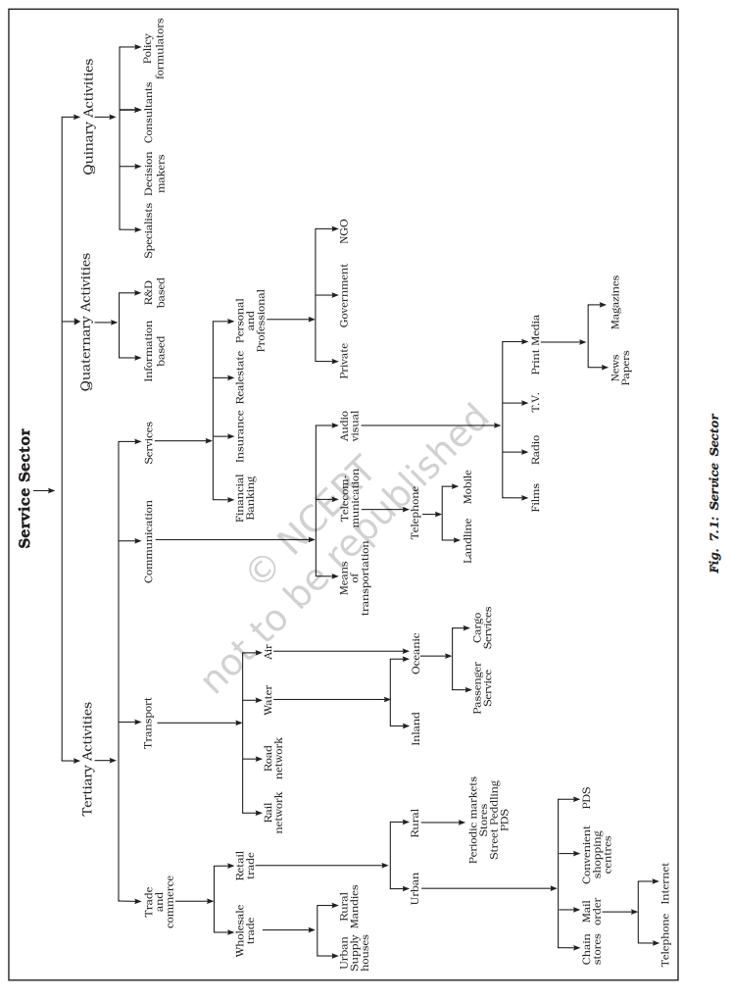
- Overview - By now you know that you purchase your books, stationery from traders shop, travel by bus or rail, send letters, talk on telephone and obtain services of teachers for studies and doctors at the time of illness - Thus, trade, transport, communication and services are some of the tertiary activities discussed in this section - The chart provides the basis for classifying the tertiary activities - Trade and commerce - Definition - Trade is essentially buying and selling of items produced elsewhere - All the services in retail and wholesale trading or commerce are specifically intended for profit - The towns and cities where all these works take place are known as trading centres - Evolution - The rise of trading from barter at the local level to money-exchange of international scale has produced many centres and institutions such as trading centres or collection and distribution points - Trading centres -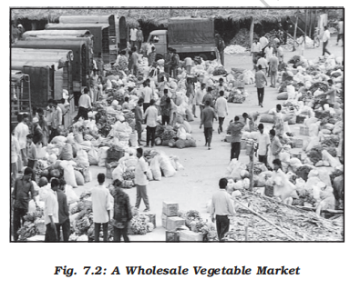
- Trading centres may be divided into rural and urban marketing centres - Rural marketing centres - Rural marketing centres cater to nearby settlements - These are quasi-urban centres - They serve as trading centres of the most rudimentary type - Here personal and professional services are not well-developed - These form local collecting and distributing centres - Most of these have mandis (wholesale markets) and also retailing areas - They are not urban centres per se but are significant centres for making available goods and services which are most frequently demanded by rural folk - Periodic markets in rural areas are found where there are no regular markets and local periodic markets are organised at different temporal intervals - These may be weekly, bi-weekly markets from where people from the surrounding areas meet their temporally accumulated demand - These markets are held on specified dates and move from one place to another - The shopkeepers thus, remain busy on all the days while a large area is served by them - Urban marketing centres - Urban marketing centres have more widely specialised urban services - They provide ordinary goods and services as well as many of the specialised goods and services required by people - Urban centres, therefore, offer manufactured goods as well as many specialised markets develop, e.g. markets for labour, housing, semi or finished products - Services of educational institutions and professionals such as teachers, lawyers, consultants, physicians, dentists and veterinary doctors are available - Retail trading -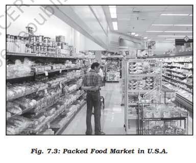
- This is the business activity concerned with the sale of goods directly to the consumers - Most of the retail trading takes place in fixed establishments or stores solely devoted to selling - Street peddling, handcarts, trucks, door-to-door, mail-order, telephone, automatic vending machines and internet are examples of non-store retail trading - More on stores - Consumer cooperatives were the first of the large-scale innovations in retailing - Departmental stores delegate the responsibility and authority to departmental heads for purchasing of commodities and for overseeing the sale in different sections of the stores - Chain stores are able to purchase merchandise most economically, often going so far as to direct the goods to be manufactured to their specification - They employ highly skilled specialists in many executive tasks - They have the ability to experiment in one store and apply the results to many - Wholesale trading - Wholesale trading constitutes bulk business through numerous intermediary merchants and supply houses and not through retail stores - Some large stores including chain stores are able to buy directly from the manufacturers - However, most retail stores procure supplies from an intermediary source - Wholesalers often extend credit to retail stores to such an extent that the retailer operates very largely on the wholesaler’s capital - Transport - Definition - Transport is a service or facility by which people, materials and manufactured goods are physically carried from one location to another - It is an organised industry created to satisfy man’s basic need of mobility - Modern society requires speedy and efficient transport systems to assist in the production, distribution and consumption of goods - At every stage in this complex system, the value of the material is significantly enhanced by transportation - Measurement - Transport distance can be measured as: km distance or actual distance of route length; time distance or the time taken to travel on a particular route; and cost distance or the expense of travelling on a route - In selecting the mode of transport, distance, in terms of time or cost, is the determining factor - Isochrone lines are drawn on a map to join places equal in terms of the time taken to reach them - Network and accessibility - As transport systems develop, different places are linked together to form a network - Networks are made up of nodes and links - A node is the meeting point of two or more routes, a point of origin, a point of destination or any sizeable town along a route - Every road that joins two nodes is called a link - A developed network has many links, which means that places are well-connected - Factors affecting transport - Demand for transport is influenced by the size of population - The larger the population size, the greater is the demand for transport - Routes depend on: location of cities, towns, villages, industrial centres and raw materials, pattern of trade between them, nature of the landscape between them, type of climate, and funds available for overcoming obstacles along the length of the route - Communication - Definition - Communication services involve the transmission of words and messages, facts and ideas - The invention of writing preserved messages and helped to make communication dependent on means of transport - These were actually carried by hand, animals, boat, road, rail and air - That is why all forms of transport are also referred to as lines of communication - Where the transport network is efficient, communications are easily disseminated [having spread throughout an organ or the body] - Certain developments, such as mobile telephony and satellites, have made communications independent of transport - All forms are not fully disassociated because of the cheapness of the older systems - Thus, very large volumes of mail continue to be handled by post offices all over the world - Telecommunications - The use of telecommunications is linked to the development of modern technology - It has revolutionised communications because of the speed with which messages are sent - The time reduced is from weeks to minutes - Besides, the recent advancements like mobile telephony have made communications direct and instantaneous at any time and from anywhere - The telegraph, morse code and telex have almost become things of the past - Radio and television also help to relay news, pictures, and telephone calls to vast audiences around the world and hence they are termed as mass media - They are vital for advertising and entertainment - Newspapers are able to cover events in all corners of the world - Satellite communication relays information of the earth and from space - The internet has truly revolutionised the global communication system - Services - Overview - Services occur at many different levels - Some are geared to industry, some to people, and some to both industry and people, e.g. the transport systems - Low-order services, such as grocery shops and laundries, are more common and widespread than high-order services or more specialised ones like those of accountants, consultants and physicians - Services are provided to individual consumers who can afford to pay for them - For example, the gardener, the launderers and the barber do primarily physical labour - Teacher, lawyers, physicians, musicians and others perform mental labour - Regulated services - Many services have now been regulated - Making and maintaining highways and bridges, maintaining fire fighting departments and supplying or supervising education and customer-care are among the important services most often supervised or performed by governments or companies - State and union legislation have established corporations to supervise and control the marketing of such services as transport, telecommunication, energy and water supply - Professional services - Professional services are primarily health care, engineering, law and management - The location of recreational and entertainment services depends on the market - Multiplexes and restaurants might find location within or near the Central Business District (CBD), whereas a golf course would choose a site where land costs are lower than in the CBD - Personal services - Personal services are made available to the people to facilitate their work in daily life - The workers migrate from rural areas in search of employment and are unskilled - They are employed in domestic services as housekeepers, cooks, and gardeners - This segment of workers is generally unorganised - One such example in India is Mumbai’s dabbawala (Tiffin) service provided to about 1,75,000 customers all over the city -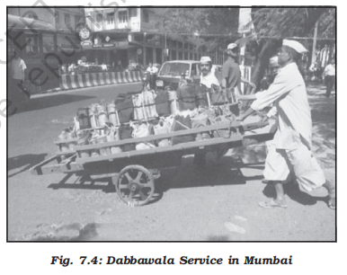
- Emerging sectors - Tourism -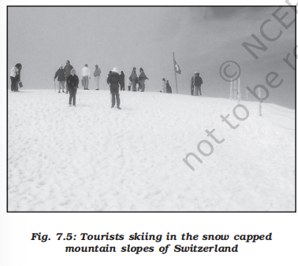
- Definition - Tourism is travel undertaken for purposes of recreation rather than business - Tourism has emerged as the world’s largest tertiary activity in terms of employment generation and revenue, accounting for a significant share of global service-sector output. - Tourism is not a single industry. It is a composite activity that includes transport (air, rail, road, sea), hotels and accommodation, food services, travel agencies, entertainment, retail linked to visitors. - Besides, many local persons, are employed to provide services like accommodation, meals, transport, entertainment and special shops serving the tourists - Tourism fosters the growth of infrastructure industries, retail trading, and craft industries (souvenirs) - In some regions, tourism is seasonal because the vacation period is dependent on favourable weather conditions, but many regions attract visitors all the year round - Tourist regions - The warmer places around the Mediterranean Coast and the West Coast of India are some of the popular tourist destinations in the world - Others include winter sports regions, found mainly in mountainous areas, and various scenic landscapes and national parks, which are scattered - Historic towns also attract tourists, because of the monument, heritage sites and cultural activities - Burj Khalifa attracts millions of tourists, and ticket revenues are somewhere close to $550 - $600 million annually - Factors affecting tourism - Demand - Since the last century, the demand for holidays has increased rapidly - Improvements in the standard of living and increased leisure time, permit many more people to go on holidays for leisure - Transport - The opening-up of tourist areas has been aided by improvement in transport facilities - Travel is easier by car, with better road systems - More significant in recent years has been the expansion in air transport - For example, air travel allows one to travel anywhere in the world in a few hours of flying-time from their homes - The advent of package holidays has reduced the costs - Tourist attractions - Climate - Most people from colder regions expect to have warm, sunny weather for beach holidays - This is one of the main reasons for the importance of tourism in Southern Europe and the Mediterranean lands - The Mediterranean climate offers almost consistently higher temperatures, than in other parts of Europe, long hours of sunshine and low rainfall throughout the peak holiday season - People taking winter holidays have specific climatic requirements, either higher temperatures than their own homelands, or snow cover suitable for skiing - Landscape - Many people like to spend their holidays in an attractive environment, which often means mountains, lakes, spectacular sea coasts and landscapes not completely altered by man - History and art - The history and art of an area have potential attractiveness - People visit ancient or picturesque towns and archaeological sites, and enjoy exploring castles, palaces and churches - Culture and economy - These attract tourists with a penchant for experiencing ethnic and local customs - Besides, if a region provides for the needs of tourists at a cheap cost, it is likely to become very popular - Home-stay has emerged as a profitable business such as heritage homes in Goa, Madikere and Coorg in Karnataka - Medical tourism - Definition - When medical treatment is combined with international tourism activity, it lends itself to what is commonly known as medical tourism - Overview - About 55,000 patients from U.S.A. visited India in 2005 for treatment - This is still a small number compared with the millions of surgeries performed each year in the U.S. healthcare system - India has emerged as the leading country of medical tourism in the world - World class hospitals located in metropolitan cities cater to patients all over the world - Medical tourism brings abundant benefits to developing countries like India, Thailand, Singapore and Malaysia - Beyond medical tourism, is the trend of outsourcing of medical tests and data interpretation - Hospitals in India, Switzerland and Australia have been performing certain medical services – ranging from reading radiology images, to interpreting Magnetic Resonance Images (MRIs) and ultrasound tests - Outsourcing holds tremendous advantages for patients, if it is focused on improving quality or providing specialised care - Quaternary activities - Overview - What do a CEO of an MNC in Copenhagen, at New York and a medical transcriptionist at Bangalore have in common? - All these people work in a segment of the service sector that is knowledge oriented - This sector can be divided into quaternary and quinary activities - Quaternary activities involve some of the following: the collection, production and dissemination of information or even the production of information - Quaternary activities centre around research, development and may be seen as an advanced form of services involving specialised knowledge and technical skills - The quaternary sector - The Quaternary Sector along with the Tertiary Sector has replaced most of the primary and secondary employment as the basis for economic growth - Over half of all workers In developed economies are in the ‘Knowledge Sector’ and there has been a very high growth in demand for and consumption of information-based services from mutual fund managers to tax consultants, software developers and statisticians - Personnel working in office buildings, elementary schools and university classrooms, hospitals and doctors’ offices, theatres, accounting and brokerage firms all belong to this category of services - Quinary activities - Overview - The highest level of decision makers or policy makers perform quinary activities - These are subtly different from the knowledge based industries that the quinary sector in general deals with - Quinary activities are services that focus on the creation, re-arrangement and interpretation of new and existing ideas; data interpretation and the use and evaluation of new technologies - Often referred to as ‘gold collar’ professions, they represent another subdivision of the tertiary sector representing special and highly paid skills of senior business executives, government officials, research scientists, financial and legal consultants, etc. - Their importance in the structure of advanced economies far outweighs their numbers - Additional concepts - Outsourcing - Overview - Outsourcing or contracting out is giving work to an outside agency to improve efficiency and to reduce costs - When outsourcing involves transferring work to overseas locations, it is described by the term off shoring, although both off-shoring and outsourcing are used together - Business activities that are outsourced include information technology (IT), human resources, customer support and call centre services and at times also manufacturing and engineering - Data processing is an IT related service easily be carried out in Asian, East European and African countries - In these countries IT skilled staff with good English language skills are available at lower wages than those in the developed countries - Thus, a company in Hyderabad or Manila does work on a project based on GIS techniques for a country like U.S.A or Japan - Overhead costs are also much lower making it profitable to get job-work carried out overseas, whether it is in India, China or even a less populous country like Botswana in Africa - Impact - Impact on destination countries - Outsourcing has resulted in the opening up of a large number of call centres in India, China, Eastern Europe, Israel, Philippines and Costa Rica. It has created new jobs in these countries - Outsourcing is coming to those countries where cheap and skilled workers are available. These are also out-migrating countries - With the work available though outsourcing, the migration in these countries may come down - Impact on country of origin - Outsourcing countries are facing resistance from job-seeking youths in their respective countries - The comparative advantage is the main reason for continuing outsourcing - New trends - New trends in quinary services include Knowledge Processing Outsourcing (KPO) and ‘home shoring’, the latter as an alternative to outsourcing - KPO industry - The KPO industry is distinct from Business Process Outsourcing (BPO) as it involves highly skilled workers - It is information driven knowledge outsourcing - KPO enables companies to create additional business opportunities - Examples of KPOs include research and development (R&D) activities, e-learning, business research, intellectual property (IP) research, legal profession and the banking sector - The digital divide - Opportunities emerging from the Information and Communication Technology based development is unevenly distributed across the globe - There are wide ranging economic, political and social differences among countries - How quickly countries can provide ICT access and benefits to its citizens is the deciding factor - While developed countries in general have surged forward, the developing countries have lagged behind and this is known as the digital divide - Similarly digital divides exist within countries - For example, in a large country like India or Russia, it is inevitable that certain areas like metropolitan centres possess better connectivity and access to the digital world versus peripheral rural areas - Transport and communication - Introduction - Natural resources, economic activities and markets are rarely found in one place - Transport, communication and trade establish links between producing centres and consuming centres - The system of mass production and exchange is complex - Each region produces the items for which it is best suited - Trade or the exchange of such commodities relies on transportation and communication - Likewise, the high living standards and quality of life depend on efficient transportation, communications and trade - In earlier days, the means of transport and communication were the same - But today both have acquired distinct and specialised forms - Transport provides the network of links and carriers through which trade takes place - Transport - Definition - Transport is a service or facility for the carriage of persons and goods from one place to the other using humans, animals and different kinds of vehicles - Such movements take place over land, water and air - Roads and railways form part of land transport; while shipping and waterways and airways are the other two modes - Pipelines carry materials like petroleum, natural gas, and ores in liquidified form - Moreover, transportation is an organised service industry created to satisfy the basic needs of society - It includes transport arteries, vehicles to carry people and goods, and the organisation to maintain arteries, and to handle loading, unloading and delivery - Every nation has developed various kinds of transportation for defence purposes - Assured and speedy transportation, along with efficient communication, promote cooperation and unity among scattered peoples - What is a transport network? - Several places (nodes) joined together by a series of routes (links) to form a pattern - Modes of transportation - Overview - The principal modes of world transportation, as already mentioned are land, water, air and pipelines - These are used for inter-regional and intra-regional transport, and each one (except pipelines) carries both passengers and freight [a large ship or aircraft designed to carry goods in bulk] - The significance of a mode depends on the type of goods and services to be transported, costs of transport and the mode available - International movement of goods is handled by ocean freighters - Road transport is cheaper and faster over short distances and for door-to-door services - Railways are most suited for large volumes of bulky materials over long distances within a country - High-value, light and perishable goods are best moved by airways - In a well-managed transport system, these various modes complement each other - Land transport -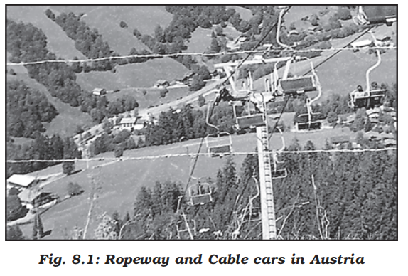
- Overview - Most of the movement of goods and services takes place over land - In early days, humans themselves were carriers - Later animals were used as beasts of burden - With the invention of the wheel, the use of carts and wagons became important - The revolution in transport came about only after the invention of the steam engine in the eighteenth century - Perhaps the first public railway line was opened in 1825 between Stockton and Darlington in northern England and then onwards, railways became the most popular and fastest form of transport in the nineteenth century - It opened up continental interiors for commercial grain farming, mining and manufacturing in U.S.A. - The invention of the internal combustion engine revolutionised road transport in terms of road quality and vehicles (motor cars and trucks) plying over them - Among the newer developments in land transportation are pipelines, ropeways and cableways - Liquids like mineral oil, water, sludge and sewers are transported by pipelines - The great freight carriers are the railways, ocean vessels, barges, boats and motor trucks and pipelines - In general, the old and elementary forms like the human porter, pack animal, cart or wagon are the most expensive means of transportation and large freighters are the cheapest - They are important in supplementing modern channels and carriers which penetrate the interiors in large countries - In the densely populated districts of India and China, overland transport still takes place by human porters or carts drawn or pushed by humans - Pack animals -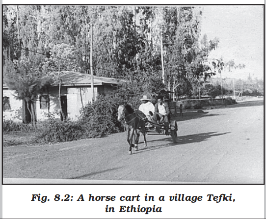
- Horses are used as a draught [denoting an animal used for pulling heavy loads] animal even in the Western countries - Dogs and reindeer are used in North America, North Europe and Siberia to draw sledges over snow-covered ground - Mules are preferred in the mountainous regions; while camels are used for caravan movement in deserts - In India, bullocks are used for pulling carts - Roads - Overview - Road transport is the most economical for short distances compared to railways - Freight transport by road is gaining importance because it offers door-to-door service - But unmetalled roads, though simple in construction, are not effective and serviceable for all seasons - During the rainy season these become unmotorable and even the metalled ones are seriously handicapped during heavy rains and floods - In such conditions, the high embankment of rail-tracks and the efficient maintenance of railway transport service, is an effective solution - But the rail kilometrage being small cannot serve the needs of vast and developing countries at a low cost - Roads, therefore, play a vital role in a nation’s trade and commerce and for promoting tourism - The quality of the roads varies greatly between developed and developing countries because road construction and maintenance require heavy expenditure - In developed countries good quality roads are universal and provide long-distance links in the form of motorways, autobahns (Germany), and inter–state highways for speedy movement - Lorries, of increasing size and power to carry heavy loads, are common - But unfortunately, the world’s road system is not well developed - The world’s total motorable road length is only about 15 million km, of which North America accounts for 33 per cent - The highest road density and the highest number of vehicles are registered in this continent compared to Western Europe - Traffic flows - Traffic on roads has increased dramatically in recent years - When the road network cannot cope with the demands of traffic, congestion occurs - City roads suffer from chronic traffic congestion - Peaks (high points) and troughs (low points) of traffic flow can be seen on roads at particular times of the day, for example, peaks occurring during the rush hour before and after work - Most of the cities in the world have been facing the problem of congestion - Highways (Outdated data alert) -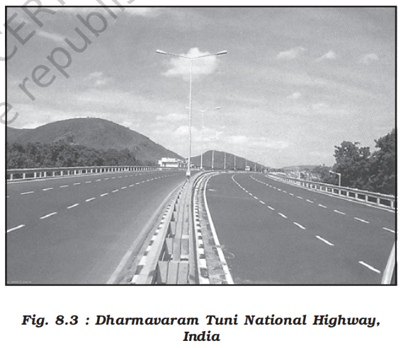
- Highways are metalled roads connecting distant places - They are constructed in a manner for unobstructed vehicular movement - As such these are 80 m wide, with separate traffic lanes, bridges, flyovers and dual carriageways to facilitate uninterrupted traffic flow - In developed countries, every city and port town is linked through highways - In North America, highway density is high, about 0.65 km per sq km - Every place is within 20 km distance from a highway - Cities located on the Pacific coast (west) are well-connected with those of the Atlantic Coast (east) - Likewise, the cities of Canada in the north are linked with those of Mexico in the south - The Trans-Canadian Highway links Vancouver in British Columbia (west coast) to St. John’s City in Newfoundland (east coast) and the Alaskan Highway links Edmonton (Canada) to Anchorage (Alaska) - The Pan-American Highway, a large portion of which has been constructed, will connect the countries of South America, Central America and U.S.A.-Canada - The Trans-Continental Stuart Highway connects Darwin (north coast) and Melbourne via Tennant Creek and Alice Springs in Australia - Europe has a large number of vehicles and a well-developed highway network - But highways face a lot of competition from railways and waterways - In Russia, a dense highway network is developed in the industrialised region west of the Urals with Moscow as the hub - The important Moscow-Vladivostok Highway serves the region to the east - Due to the vast geographical area, highways in Russia are not as important as railways - In China, highways criss-cross the country connecting all major cities such as Tsungtso (near Vietnam boundary), Shanghai (central China), Guangzhou (south) and Beijing (north) - A new highway links Chengdu with Lhasa in Tibet - In India, there are many highways linking the major towns and cities - For example, National Highway No. 7 (NH 7), connecting Varanasi with Kanya Kumari, is the longest in the country - The Golden Quadrilateral (GQ) or Super Expressway is underway to connect the four metropolitan cities — New Delhi, Mumbai, Bangalore, Chennai, Kolkata and Hyderabad - In Africa, a highway joins Algiers in the north to Conakry in Guinea - Similarly, Cairo is also connected to Cape Town - Border roads - Roads laid along international boundaries are called border roads - They play an important role in integrating people in remote areas with major cities and providing defence - Almost all countries have such roads to transport goods to border villages and military camps - Railways -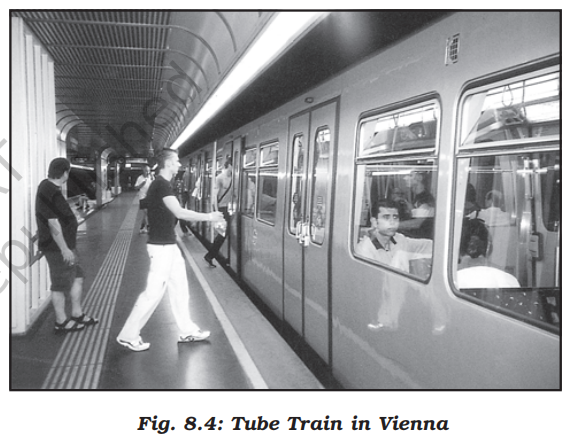
- Overview - Railways are a mode of land transport for bulky goods and passengers over long distances - The railway gauges vary in different countries and are roughly classified as: - Broad (more than 1.5 m) - Standard gauge (1.44 m) - Metre gauge (1 m) and smaller gauges - The standard gauge is used in the U.K. - Commuter trains are very popular in U.K., U.S.A, Japan and India - These carry millions of passengers daily to and fro in the city - There are about 13 lakh km of railways open for traffic in the world - Regional distribution (Outdated data alert) - Europe has one of the most dense rail networks in the world - There are about 4,40,000 km of railways, most of which is double or multiple-tracked - Belgium has the highest density of 1 km of railway for every 6.5 sq kms area - The industrial regions exhibit some of the highest densities in the world - The important rail heads are London, Paris, Brussels, Milan, Berlin and Warsaw - Passenger transport is more important than freight in many of these countries - Underground railways are important in London and Paris - Channel Tunnel, operated by Euro Tunnel Group through England, connects London with Paris - Trans-continental railway lines have now lost their importance to quicker and more flexible transport systems of airways and roadways - In Russia, railways account for about 90 per cent of the country’s total transport with a very dense network west of the Urals - Moscow is the most important rail head with major lines radiating to different parts of the country’s vast geographical area - Underground railways and commuter trains are also important in Moscow - North America has one of the most extensive rail networks accounting for nearly 40 per cent of the world’s total - In contrast to many European countries, the railways are used more for long-distance bulky freight like ores, grains, timber and machinery than for passengers - The most dense rail network is found in the highly industrialised and urbanised region of East Central U.S.A. and adjoining Canada - In Canada, railways are in the public sector and distributed all over the sparsely populated areas - The transcontinental railways carry the bulk of wheat and coal tonnage - Australia has about 40,000 km of railways, of which 25 per cent are found in New South Wales alone - The west-east Australian National Railway line runs across the country from Perth to Sydney - New Zealand’s railways are mainly in the North Island to serve the farming areas - In South America, the rail network is the most dense in two regions, namely, the Pampas of Argentina and the coffee growing region of Brazil which together account for 40 per cent of South America’s total route length - Only Chile, among the remaining countries has a considerable route length linking coastal centres with the mining sites in the interior - Peru, Bolivia, Ecuador, Colombia and Venezuela have short single-track rail-lines from ports to the interior with no inter-connecting links - There is only one trans-continental rail route linking Buenos Aires (Argentina) with Valparaiso (Chile) across the Andes Mountains through the Uspallatta Pass located at a height of 3,900 m - In Asia, rail network is the most dense in the thickly populated areas of Japan, China and India - Other countries have relatively few rail routes - West Asia is the least developed in rail facilities because of vast deserts and sparsely populated regions - Africa continent, despite being the second largest, has only 40,000 km of railways with South Africa alone accounting for 18,000 km due to the concentration of gold, diamond and copper mining activities - The important routes of the continent are: - The Benguela Railway through Angola to Katanga-Zambia Copper Belt - The Tanzania Railway from the Zambian Copper Belt to Dar-es-Salaam on the coast - The Railway through Botswana and Zimbabwe linking the landlocked states to the South African network - The Blue Train from Cape Town to Pretoria in the Republic of South Africa - Elsewhere, as in Algeria, Senegal, Nigeria, Kenya and Ethiopia, railway lines connect port cities to interior centres but do not form a good network with other countries - Trans–continental railways - - Overview - Trans–continental railways run across the continent and link its two ends - They were constructed for economic and political reasons to facilitate long runs in different directions - The following are the most important of these: - Trans–Siberian Railway - - This is a trans–Siberian Railways major rail route of Russia runs from St. Petersburg in the west to Vladivostok on the Pacific Coast in the east passing through Moscow, Ufa, Novosibirsk, Irkutsk, Chita and Khabarovsk - It is the most important route in Asia and the longest (9,332 km) double-tracked and electrified trans–continental railway in the world - It has helped in opening up its Asian region to West European markets - It runs across the Ural Mountains Ob and Yenisei rivers Chita is an important agrocentre and Irkutsk, a fur centre - There are connecting links to the south, namely, to Odessa (Ukraine), Baku on the Caspian Coast, Tashkent (Uzbekistan), Ulan Bator (Mongolia), and Shenyang (Mukden) and Beijing in China - Trans–Canadian Railways - - This 7,050 km long rail-line in Canada runs from Halifax in the east to Vancouver on the Pacific Coast passing through Montreal, Ottawa, Winnipeg and Calgary (Fig. 8.6) - It was constructed in 1886, initially as part of an agreement to make British Columbia on the west coast join the Federation of States - Later on, it gained economic significance because it connected the Quebec-Montreal Industrial Region with the wheat belt of the Prairie Region and the Coniferous Forest region in the north - Thus each of these regions became complementary to the other - A loop line from Winnipeg to Thunder Bay (Lake Superior) connects this rail-line with one of the important waterways of the world - This line is the economic artery of Canada - Wheat and meat are the important exports on this route - The Union and Pacific Railway - This rail-line connects New York on the Atlantic Coast to San Francisco on the Pacific Coast passing through Cleveland, Chicago, Omaha, Evans, Ogden and Sacramento - The most valuable exports on this route are ores, grain, paper, chemicals and machinery - The Australian Trans–Continental Railway - - This rail-line runs west-east across the southern part of the continent from Perth on the west coast, to Sydney on the east coast passing through Kalgoorlie, Broken Hill and Port Augusta (Fig. 8.7) - Another major north-south line connects Adelaide and Alice Spring and to be joined further to the Darwin–Birdum line - The Orient Express - This line runs from Paris to Istanbul passing through Strasbourg, Munich, Vienna, Budapest and Belgrade - The journey time from London to Istanbul by this Express is now reduced to 96 hours as against 10 days by the sea-route - The chief exports on this rail-route are cheese, bacon, oats, wine, fruits, and machinery - There is a proposal to build a Trans–Asiatic Railway linking Istanbul with Bangkok via Iran, Pakistan, India, Bangladesh and Myanmar - Water transport - Overview - One of the great advantages of water transportation is that it does not require route construction - The oceans are linked with each other and are negotiable with ships of various sizes - All that is needed is to provide port facilities at the two ends - It is much cheaper because the friction of water is far less than that of land - The energy cost of water transportation is lower - Water transport is divided into sea routes and inland waterways - Sea routes - Overview - The oceans offer a smooth highway traversable in all directions with no maintenance costs - Its transformation into a routeway by sea-going vessels is an important development in human adaptation to the physical environment - Compared to land and air, ocean transport is a cheaper means of haulage [the commercial transport of goods] of bulky material over long distances from one continent to another - Modern passenger liners (ships) and cargo ships are equipped with radar, wireless and other navigation aids - The development of refrigerated chambers for perishable goods, tankers and specialised ships has also improved cargo transport - The use of containers has made cargo handling at the world’s major ports easier - Important sea routes - - Some important routes have been discussed in the following pages - The Northern Atlantic Sea Route - This links North-eastern U.S.A. and North-western Europe, the two industrially developed regions of the world - The foreign trade over this route is greater than that of the rest of the world combined - One fourth of the world’s foreign trade moves on this route - It is, therefore, the busiest in the world and otherwise, called the Big Trunk Route - Both the coasts have highly advanced ports and harbour facilities - The Mediterranean–Indian Ocean Sea Route - This sea route passes through the heart of the Old World and serves more countries and people than any other route - Port Said, Aden, Mumbai, Colombo and Singapore are some of the important ports on this route - The construction of Suez Canal has greatly reduced the distance and time as compared to the earlier route through the Cape of Good Hope, which was longer than the route through Suez Canal - The Cape of Good Hope Sea Route - This trade route connects the highly industrialised Western European region with West Africa, South Africa, South-east Asia and the commercial agriculture and livestock economies of Australia and New Zealand - The volume of trade and traffic between both East and West Africa is on the increase due to the development of the rich natural resources such as gold, diamond, copper, tin, groundnut, oil palm, coffee and fruits - The Southern Atlantic Sea Route - This sea route is another important one across the Atlantic Ocean which connects West European and West African countries with Brazil, Argentina and Uruguay in South America - The traffic is far less on this route because of the limited development and population in South America and Africa - Only southeastern Brazil and Plata estuary and parts of South Africa have large-scale industries - There is also little traffic on the route between Rio de Janeiro and Cape Town because both South America and Africa have similar products and resources - The North Pacific Sea Route - Trade across the vast North Pacific Ocean moves by several routes which converge at Honolulu - The direct route on the Great Circle links Vancouver and Yokohama and reduces the travelling distance (2,480 km) by half - This sea route links the ports on the west-coast of North America with those of Asia - These are Vancouver, Seattle, Portland, San Francisco and Los Angeles on the American side and Yokohama, Kobe, Shanghai, Hong Kong, Manila and Singapore on the Asian side - The South Pacific Sea Route - This sea route connects Western Europe and North America with Australia, New Zealand and the scattered Pacific islands via the Panama Canal - This route is also used for reaching Hong Kong, Philippines and Indonesia - The distance covered between Panama and Sydney is 12,000 km - Honolulu is an important port on this route - Coastal shipping - It is obvious that water transport is a cheaper mode - While oceanic routes connect different countries, coastal shipping is a convenient mode of transportation with long coastlines, e.g. U.S.A, China and India - Shenzhen States in Europe are most suitably placed for coastal shipping connecting one member’s coast with the other - If properly developed, coastal shipping can reduce the congestion on the land routes - Shipping canals - The Suez and the Panama Canals are two vital man-made navigation canals or waterways which serve as gateways of commerce for both the eastern and western worlds - The Suez Canal - - This canal had been constructed in 1869 in Egypt between Port Said in the north and Port Suez in the south linking the Mediterranean Sea and the Red Sea - It gives Europe a new gateway to the Indian Ocean and reduces direct sea-route distance between Liverpool and Colombo compared to the Cape of Good Hope route - It is a sea-level canal without locks which is about 160 km and 11 to 15 m deep - About 100 ships travel daily and each ship takes 10-12 hours to cross this canal - The tolls are so heavy that some find it cheaper to go by the longer Cape Route whenever the consequent delay is not important - A railway follows the canal to Suez, and from Ismailia there is a branch line to Cairo - A navigable fresh-water canal from the Nile also joins the Suez Canal in Ismailia to supply fresh-water to Port Said and Suez - The Panama Canal - - This canal connects the Atlantic Ocean in the east to the Pacific Ocean in the west - It has been constructed across the Panama Isthmus between Panama City and Colon by the U.S. government which purchased 8 km of area on either side and named it the Canal Zone - Latest update - Earlier it was owned by USA, but later transferred to the Panama by signing Torrijos–Carter treaties. USA now owns nothing - The Canal is about 72 km long and involves a very deep cutting for a length of 12 km - It has a six-lock system and ships cross the different levels (26 m up and down) through these locks before entering the Gulf of Panama - It shortens the distance between New York and San Francisco by 13,000 km by sea - Likewise the distance between Western Europe and the West-coast of U.S.A.; and North-eastern and Central U.S.A. and East and South-east Asia is shortened - The economic significance of this Canal is relatively less than that of the Suez - However, it is vital to the economies of Latin America - Inland waterways - - Overview - Rivers, canals, lakes and coastal areas have been important waterways since time immemorial - Boats and steamers are used as means of transport for cargo and passengers - The development of inland waterways is dependent on the navigability width and depth of the channel, continuity in the water flow, and transport technology in use - Rivers are the only means of transport in dense forests - Very heavy cargo like coal, cement, timber and metallic ores can be transported through inland waterways - In ancient times, riverways were the main highways of transportation as in the case of India - But they lost importance because of competition from railways, lack of water due to diversion for irrigation, and their poor maintenance - The significance of rivers as inland waterways for domestic and international transport and trade has been recognised throughout the developed world - Despite inherent limitations, many rivers have been modified to enhance their navigability by dredging, stabilising river banks, and building dams and barrages for regulating the flow of water - The following river waterways are some of the world’s important highways of commerce - - The Rhine Waterways - - - The Rhine flows through Germany and the Netherlands - It is navigable for 700 km from Rotterdam, at its mouth in the Netherlands to Basel in Switzerland - Ocean-going vessels can reach up to Cologne - The Ruhr river joins the Rhine from the east - It flows through a rich coalfield and the whole basin has become a prosperous manufacturing area - Dusseldorf is the Rhine port for this region - Huge tonnage moves along the stretch south of the Ruhr - This waterway is the world’s most heavily used - Each year more than 20,000 ocean-going ships and 2,00,000 inland vessels exchange their cargoes - It connects the industrial areas of Switzerland, Germany, France, Belgium and the Netherlands with the North Atlantic Sea Route - The Danube Waterway - This important inland waterway serves Eastern Europe - The Danube river rises in the Black Forest and flows eastwards through many countries - It is navigable up to Taurna Severin - The chief export items are wheat, maize, timber, and machinery - The Volga Waterway - Russia has a large number of developed waterways, of which the Volga is one of the most important - It provides a navigable waterway of 11,200 km and drains into the Caspian Sea - The Volga-Moscow Canal connects it with the Moscow region and the Volga-Don Canal with the Black Sea - The Great Lakes – St. Lawrence Seaway - The Great Lakes of North America Superior, Huron Erie and Ontario are connected by Soo Canal and Welland Canal to form an inland waterway - The estuary of St. Lawrence River, along with the Great Lakes, forms a unique commercial waterway in the northern part of North America - The ports on this route like Duluth and Buffalo are equipped with all facilities of ocean ports - As such large ocean-going vessels are able to navigate up the river deep inside the continent to Montreal - But here goods have to be trans-shipped to smaller vessels due to the presence of rapids - Canals have been constructed up to 3.5 m deep to avoid these - The Mississippi Waterways - The Mississippi-Ohio waterway connects the interior part of U.S.A. with the Gulf of Mexico in the south - Large steamers can go through this route up to Minneapolis - Air transport - - - Overview - Air transport is the fastest means of transportation, but it is very costly - Being fast, it is preferred by passengers for long-distance travel - Valuable cargo can be moved rapidly on a world-wide scale - It is often the only means to reach inaccessible areas - Air transport has brought about a connectivity revolution in the world - The frictions created by mountainous snow fields or inhospitable desert terrains have been overcome - The accessibility has increased - The airplane brings varied articles to the Eskimos in Northern Canada unhindered by the frozen ground - In the Himalayan region, the routes are often obstructed due to landslides, avalanches or heavy snow fall - At such times, air travel is the only alternative to reach a place - Airways also have great strategic importance - The air strikes by U.S. and British forces in Iraq bears testimony to this fact - The airways network is expanding very fast - The manufacturing of aircrafts and their operations require elaborate infrastructure like hangars, landing, fuelling, and maintenance facilities for the aircrafts - The construction of airports is also very expensive and has developed more in highly industrialised countries where there is a large volume of traffic - At present no place in the world is more than 35 hours away - This startling fact has been made possible due to people who build and fly airplanes - Travel by air can now be measured by hours and minutes instead of years and months - Frequent air services are available to many parts of the world - Although, U.K. pioneered the use of commercial jet transport, U.S.A. developed largely post-War international civil aviation - Today, more than 250 commercial airlines offer regular services to different parts of the world - Recent developments can change the future course of air transport - Supersonic aircraft, cover the distance between London and New York within three and a half hours - Inter-continental air routes - In the Northern Hemisphere, there is a distinct east-west belt of inter-continental air routes - Dense network exists in Eastern U.S.A., Western Europe and Southeast Asia - U.S.A. alone accounts for 60 per cent of the airways of the world - New York, London, Paris, Amsterdam, Frankfurt Rome, Moscow, Karachi, New Delhi, Mumbai, Bangkok, Singapore, Tokyo, San Francisco, Los Angeles and Chicago are the nodal points where air routes converge or radiate to all continents - Africa, Asiatic part of Russia and South America lack air services - There are limited air services between 10-35 latitudes in the Southern hemisphere due to sparser population, limited landmass and economic development - Pipelines - - Pipelines are used extensively to transport liquids and gases such as water, petroleum and natural gas for an uninterrupted flow - Water supplied through pipelines is familiar to all - Cooking gas or LPG is supplied through pipelines in many parts of the world - Pipelines can also be used to transport liquidified coal - In New Zealand, milk is being supplied through pipelines from farms to factories - In U.S.A. there is a dense network of oil pipelines from the producing areas to the consuming areas - Big Inch is one such famous pipeline, which carries petroleum from the oil wells of the Gulf of Mexico to the North-eastern States - About 17 per cent of all freight per tonne-km is carried through pipelines in U.S.A. - In Europe, Russia, West Asia and India pipelines are used to connect oil wells to refineries, and to ports or domestic markets - Turkmenistan is central Asia has extended pipelines to Iran and also to parts of China - The proposed Iran-India via Pakistan international oil and natural gas pipeline will be the longest in the world - Update as of Jan 2026 - India withdrew from the Iran-Pakistan-India (IPI) pipeline project around 2009 due to geopolitical and sanction pressures (especially related to the U.S. stance on Iran). - After India’s exit, the trilateral pipeline plan was effectively cancelled. - Pakistan and Iran have continued a bilateral pipeline plan (Iran–Pakistan pipeline). It is about 2,775 km from Iran into Pakistan - Communications - Overview - Human beings have used different methods long-distance communications of which the telegraph and the telephone were important - The telegraph was instrumental in the colonisation of the American West - During the early and mid-twentieth century, the American Telegraph and Telephone Company (AT&T) enjoyed a monopoly over U.S.A.’s telephone industry - In fact, the telephone became a critical factor in the urbanisation of America - Firms centralised their functioning at city-headquarters and located their branch offices in smaller towns - Even today, the telephone is the most commonly used mode - In developing countries, the use of cell phones, made possible by satellites, is important for rural connectivity - Today there is a phenomenal pace of development - The first major breakthrough is the use of optic fiber cables (OFC) - Faced with mounting competition, telephone companies all over the world soon upgraded their copper cable systems to include optic fiber cables - These allow large quantities of data to be transmitted rapidly, securely, and are virtually error-free - With the digitisation of information in the 1990s, telecommunication slowly merged with computers to form integrated networks termed as Internet - Satellite communication - Today Internet is the largest electronic network on the planet connecting about 1,000 million people in more than 100 countries - Satellites touch human lives in many ways - Every time you use a cell phone to call a friend, send an SMS or watch a popular programme on cable television - You are using satellite communication - Communication through satellites emerged as a new area in communication technology since the 1970s after U.S.A. and former U.S.S.R. pioneered space research - Artificial satellites, now, are successfully deployed in the earth’s orbit to connect even the remote corners of the globe with limited on-site verification - These have rendered the unit cost and time of communication invariant in terms of distance - This means it costs the same to communicate over 500 km as it does over 5,000 km via satellite - India has also made great strides in satellite development - Aryabhatt was launched on 19 April 1979, Bhaskar-I in 1979 and Rohini in 1980 - On 18 June 1981, APPLE (Arian Passenger Payload Experiment) was launched through Arian rocket - Bhaskar, Challenger and INSAT I-B have made long-distance communication, television and radio very effective - Today weather forecasting through television is a boon - Cyber space – Internet - Cyberspace is the world of electronic computerised space - It is encompassed by the Internet such as the World Wide Web (www) - In simple words, it is the electronic digital world for communicating or accessing information over computer networks without physical movement of the sender and the receiver - It is also referred to as the Internet - Cyberspace exists everywhere - It may be in an office, sailing boat, flying plane and virtually anywhere - The speed at which this electronic network has spread is unprecedented in human history - There were less than 50 million Internet users in 1995, about 400 million in 2000 A.D. and over two billion in 2010 - In the last few years there has been a shift among global users from U.S.A. to the developing countries - The percentage share of U.S.A. has dropped from 66 in 1995 to only 25 in 2005 - Now the majority of the world’s users are in U.S.A., U.K., Germany, Japan, China and India - As billions use the Internet each year, cyberspace will expand the contemporary economic and social space of humans through e-mail, e-commerce, e-learning and e-governance - Internet together with fax, television and radio will be accessible to more and more people cutting across place and time - It is these modern communication systems, more than transportation, that has made the concept of global village a reality - International trade - Introduction - Overview - You are already familiar with the term “trade” as a tertiary activity which you have studied in Chapter 7 of this book - You know that trade means the voluntary exchange of goods and services - Two parties are required to trade - One person sells and the other purchases - In certain places, people barter their goods - For both the parties trade is mutually beneficial - Levels of trade - Trade may be conducted at two levels: - International - International trade is the exchange of goods and services among countries across national boundaries - Countries need to trade to obtain commodities, they cannot produce themselves or they can purchase elsewhere at a lower price - National - Within a country - Evolution of trade - - The initial form of trade in primitive societies was the barter system, where direct exchange of goods took place - In this system if you were a potter and were in need of a plumber, you would have to look for a plumber who would be in need of pots and you could exchange your pots for his plumbing service - The difficulties of barter system were overcome by the introduction of money - In the olden times, before paper and coin currency came into being, rare objects with very high intrinsic value served as money, like, flintstones, obsidian, cowrie shells, tiger’s paws, whale’s teeth, dogs teeth, skins, furs, cattle, rice, peppercorns, salt, small tools, copper, silver and gold - The word salary comes from the Latin word Salarium which means payment by salt - As in those times producing salt from sea water was unknown and could only be made from rock salt which was rare and expensive - That is why it became a mode of payment - History of international trade - In ancient times, transporting goods over long distances was risky, hence trade was restricted to local markets - People then spent most of their resources on basic necessities – food and clothes - Only the rich people bought jewellery, costly dresses and this resulted in trade of luxury items - The Silk Route is an early example of long distance trade connecting Rome to China – along the 6,000 km route - The traders transported Chinese silk, Roman wool and precious metals and many other high value commodities from intermediate points in India, Persia and Central Asia - After the disintegration of the Roman Empire, European commerce grew during twelfth and thirteenth century with the development of ocean going warships trade between Europe and Asia grew and the Americas were discovered - Fifteenth century onwards, the European colonialism began and along with trade of exotic commodities, a new form of trade emerged which was called slave trade - The Portuguese, Dutch, Spaniards, and British captured African natives and forcefully transported them to the newly discovered Americas for their labour in the plantations - Slave trade was a lucrative business for more than two hundred years till it was abolished in Denmark in 1792, Great Britain in 1807 and United States in 1808 - After the Industrial Revolution the demand for raw materials like grains, meat, wool also expanded, but their monetary value declined in relation to the manufactured goods - The industrialised nations imported primary products as raw materials and exported the value added finished products back to the non-industrialised nations - In the later half of the nineteenth century, regions producing primary goods were no more important, and industrial nations became each other’s principle customers - During the World Wars I and II, countries imposed trade taxes and quantitative restrictions for the first time - During the postwar period, organisations like General Agreement for Tariffs and Trade (which later became the World Trade Organisation), helped in reducing tariff - Why does international trade exist? - International trade is the result of specialisation in production - It benefits the world economy if different countries practise specialisation and division of labour in the production of commodities or provision of services - Each kind of specialisation can give rise to trade - Thus, international trade is based on the principle of comparative advantage, complimentarity and transferability of goods and services and in principle, should be mutually beneficial to the trading partners - In modern times, trade is the basis of the world’s economic organisation and is related to the foreign policy of nations - With well-developed transportation and communication systems, no country is willing to forego the benefits derived from participation in international trade - Basis of international trade - Difference in national resources - The world’s national resources are unevenly distributed because of differences in their physical make up i.e. geology, relief soil and climate - (a) Geological structure - It determines the mineral resource base and topographical differences ensure diversity of crops and animals raised - Lowlands have greater agricultural potential - Mountains attract tourists and promote tourism - (b) Mineral resources - They are unevenly distributed the world over - The availability of mineral resources provides the basis for industrial development - (c) Climate - It influences the type of flora and fauna that can survive in a given region - It also ensures diversity in the range of various products, e.g. wool production can take place in cold regions, bananas, rubber and cocoa can grow in tropical regions - Population factors - The size, distribution and diversity of people between countries affect the type and volume of goods traded - (a) Cultural factors - Distinctive forms of art and craft develop in certain cultures which are valued the world over, e.g. China produces the finest porcelains and brocades - Carpets of Iran are famous while North African leather work and Indonesian batik cloth are prized handicrafts - (b) Size of population - Densely populated countries have large volume of internal trade but little external trade because most of the agricultural and industrial production is consumed in the local markets - Standard of living of the population determines the demand for better quality imported products because with low standard of living only a few people can afford to buy costly imported goods - Stage of economic development - At different stages of economic development of countries, the nature of items traded undergo changes - In agriculturally important countries, agro products are exchanged for manufactured goods whereas industrialised nations export machinery and finished products and import food grains and other raw materials - Extent of foreign investment - Foreign investment can boost trade in developing countries which lack in capital required for the development of mining, oil drilling, heavy engineering, lumbering and plantation agriculture - By developing such capital intensive industries in developing countries, the industrial nations ensure import of food stuffs, minerals and create markets for their finished products - This entire cycle steps up the volume of trade between nations - Transport - In olden times, lack of adequate and efficient means of transport restricted trade to local areas - Only high value items, e.g. gems, silk and spices were traded over long distances - With expansions of rail, ocean and air transport, better means of refrigeration and preservation, trade has experienced spatial expansion - Important aspects of international trade - Volume of trade - The actual tonnage of goods traded makes up the volume - However, services traded cannot be measured in tonnage - Therefore, the total value of goods and services traded is considered to be the volume of trade - Table 9.1 shows that the total volume of world trade has been steadily rising over the past decades - Composition of trade - The nature of goods and services imported and exported by countries have undergone changes during the last century - Trade of primary products was dominant in the beginning of the last century - Later manufactured goods gained prominence and currently, though the manufacturing sector commands the bulk of the global trade, service sector which includes travel, transportation and other commercial services have been showing an upward trend - Table 9.1 shows that the volume of imports and exports of the world merchandise has been growing consistently over the years - Looking at Figure 9.1 it becomes evident that manufactured goods contributed to the bulk of world merchandise exports from 2005 to 2015 - Fuels and mining goods and agricultural goods are also important contributors of merchandise exports - There is change in the share of continents in the world merchandise trade as Europe’s contribution is declining while the contribution of Asian countries is growing -| Year | 1955 | 1965 | 1975 | 1985 | 1995 | 2005 | 2015 |
|---|---|---|---|---|---|---|---|
| Total Merchandise Exports | 95,000 | 190,000 | 877,000 | 1,954,000 | 5,162,000 | 10,393,000 | 15,583,232 |
| Total Merchandise Imports | 99,000 | 199,000 | 912,000 | 2,015,000 | 5,292,000 | 10,753,000 | 15,628,204 |
| Regional Blocs | Headquarters | Member Nations | Origin | Commodities | Other Areas of Cooperation |
|---|---|---|---|---|---|
| ASEAN (Association of South East Asian Nations) | Jakarta, Indonesia | Brunei Darussalam, Cambodia, Indonesia, Laos, Malaysia, Myanmar, Philippines, Singapore, Thailand, Vietnam | Aug, 1967 | Agro products, rubber, palm oil, rice, copra, coffee, minerals – copper, coal, nickel, tungsten, petroleum, natural gas, software products | Accelerate economic growth, cultural development, peace, and regional stability |
| CIS (Commonwealth of Independent States) | Minsk, Belarus | Armenia, Azerbaijan, Belarus, Georgia, Kazakhstan, Kyrgyzstan, Moldova, Russia, Tajikistan, Turkmenistan, Ukraine, Uzbekistan | — | Crude oil, natural gas, gold, cotton, fibre, aluminium | Integration and cooperation on matters of economics, defence, and foreign policy |
| EU (European Union) | Brussels, Belgium | Austria, Belgium, Bulgaria, Croatia, Cyprus, Czech Republic, Denmark, Estonia, Finland, France, Germany, Greece, Hungary, Ireland, Italy, Latvia, Lithuania, Luxembourg, Malta, Poland, Portugal, Romania, Slovakia, Slovenia, Spain, Sweden, Netherlands, United Kingdom | EEC - March 1957, EU - Feb. 1992 | Agro products, minerals, chemicals, wood, paper, transport vehicles, optical instruments, clocks, works of art, antiques | Single market with single currency |
| LAIA (Latin American Integration Association) | Montevideo, Uruguay | Argentina, Bolivia, Brazil, Colombia, Ecuador, Mexico, Paraguay, Peru, Uruguay, Venezuela | — | — | — |
| NAFTA (North American Free Trade Agreement) | — | U.S.A., Canada, Mexico | 1994 | Agro products, motor vehicles, automotive parts, computers, textiles | — |
| OPEC (Organisation of Petroleum Exporting Countries) | Vienna, Austria | Algeria, Indonesia, Iran, Iraq, Kuwait, Libya, Nigeria, Qatar, Saudi Arabia, U.A.E., Venezuela | 1960 | Crude petroleum | Coordinate and unify petroleum policies |
| SAFTA (South Asian Free Trade Agreement) | — | Bangladesh, Maldives, Bhutan, Nepal, India, Pakistan, Sri Lanka | Jan-2006 | — | Reduce tariffs on interregional trade |
 - The clustered rural settlement is a compact or closely built up area of houses
- In this type of village the general living area is distinct and separated from the surrounding farms, barns and pastures
- The closely built-up area and its intervening streets present some recognisable pattern or geometric shape, such as rectangular, radial, linear, etc
- Such settlements are generally found in fertile alluvial plains and in the northeastern states
- Sometimes, people live in compact village for security or defence reasons, such as in the Bundelkhand region of central India and in Nagaland
- In Rajasthan, scarcity of water has necessitated compact settlement for maximum utilisation of available water resources
- Semi-clustered settlements
-
- The clustered rural settlement is a compact or closely built up area of houses
- In this type of village the general living area is distinct and separated from the surrounding farms, barns and pastures
- The closely built-up area and its intervening streets present some recognisable pattern or geometric shape, such as rectangular, radial, linear, etc
- Such settlements are generally found in fertile alluvial plains and in the northeastern states
- Sometimes, people live in compact village for security or defence reasons, such as in the Bundelkhand region of central India and in Nagaland
- In Rajasthan, scarcity of water has necessitated compact settlement for maximum utilisation of available water resources
- Semi-clustered settlements
-  - Semi-clustered or fragmented settlements may result from tendency of clustering in a restricted area of dispersed settlement
- More often such a pattern may also result from segregation or fragmentation of a large compact village
- In this case, one or more sections of the village society choose or is forced to live a little away from the main cluster or village
- In such cases, generally, the land-owning and dominant community occupies the central part of the main village, whereas people of lower strata of society and menial workers settle on the outer flanks of the village
- Such settlements are widespread in the Gujarat plain and some parts of Rajasthan
- Hamleted settlements
- Sometimes settlement is fragmented into several units physically separated from each other bearing a common name
- These units are locally called panna, para, palli, nagla, dhani, etc. in various parts of the country
- This segmentation of a large village is often motivated by social and ethnic factors
- Such villages are more frequently found in the middle and lower Ganga plain, Chhattisgarh and lower valleys of the Himalayas
- Dispersed settlements
-
- Dispersed or isolated settlement pattern in India appears in the form of isolated huts or hamlets of few huts in remote jungles, or on small hills with farms or pasture on the slopes
- Extreme dispersion of settlement is often caused by extremely fragmented nature of the terrain and land resource base of habitable areas
- Many areas of Meghalaya, Uttaranchal, Himachal Pradesh and Kerala have this type of settlement
- Rural settlement patterns
- Overview
- Patterns of rural settlements reflect the way the houses are sited in relation to each other
- The site of the village, the surrounding topography and terrain influence the shape and size of a village
- Rural settlements may be classified on the basis of a number of criteria:
- On the basis of setting:
- Plain villages
- Plateau villages
- Coastal villages
- Forest villages
- Desert villages
- On the basis of functions:
- Farming villages
- Fishermen’s villages
- Lumberjack villages
- Pastoral villages etc
- On the basis of forms or shapes of the settlements
-
- Linear pattern
-
- In such settlements houses are located along a road, railway line, river, canal edge of a valley or along a levee
- Rectangular pattern
- Such patterns of rural settlements are found in plain areas or wide inter montane valleys
- The roads are rectangular and cut each other at right angles
- Circular pattern
- Circular villages develop around lakes, tanks and sometimes the village is planned in such a way that the central part remains open and is used for keeping the animals to protect them from wild animals
- Star like pattern
- Where several roads converge, star shaped settlements develop by the houses built along the roads
- T-shaped, Y-shaped, Cross-shaped or cruciform settlements
-
- T-shaped settlements develop at tri-junctions of the roads (T) while (Y) shaped settlements emerge as the places where two roads converge on the third one and houses are built along these roads
- Cruciform settlements develop on the cross-roads and houses extend in all the four direction
- Double village
- These settlements extend on both sides of a river where there is a bridge or a ferry
- Problems of rural settlements
- Inadequate infrastructure
- Most rural areas lack all-weather roads, electricity, transport, and digital connectivity
- This isolation hinders access to markets, healthcare, and education
- Water supply
- Rural settlements often suffer from unreliable or contaminated water sources
- In arid and hilly areas, residents walk long distances to fetch water
- Waterborne diseases like cholera and diarrhea are common
- Poor housing
- Houses are often built from mud, thatch, and bamboo with poor ventilation and durability
- They are vulnerable to natural disasters such as floods and cyclones
- In many cases, animal sheds are attached to homes, impacting hygiene
- Sanitation and health
- Lack of proper toilets and waste disposal systems lead to open defecation
- Unhygienic living conditions contribute to high disease burden and child mortality
- Educational constraints
- Schools are either absent or poorly equipped
- Long distances, lack of teachers, and poor infrastructure lead to high dropout rates
- Vulnerability to natural disasters
- Many villages face recurring floods, droughts, and soil erosion
- Agricultural patterns suffer due to erratic rainfall and lack of irrigation
- Social issues
- Deep-rooted caste, class, and gender inequalities hinder inclusive development
- Women often bear disproportionate responsibility for water, firewood, and household chores
- Employment and economic problems
- Agricultural dependency and seasonal unemployment lead to poverty and out-migration
- Informal credit markets often exploit rural populations
- Dispersed settlements
- Scattered housing patterns make infrastructure delivery difficult
- Lack of compact settlement planning leads to inefficiency
- Governance and planning deficit
- Poor implementation of rural development schemes and corruption dilute policy impact
- Local governance bodies often lack funds, manpower, and autonomy
- Urban settlements
- Unlike rural settlements, urban settlements are generally compact and larger in size
- They are engaged in a variety of nonagricultural, economic and administrative functions
- As mentioned earlier, cities are functionally linked to rural areas around them
- Thus, exchange of goods and services is performed sometimes directly and sometimes through a series of market towns and cities
- Thus, cities are connected directly as well as indirectly with the villages and also with each other
- You can see the definition of towns in Chapter 10 of the book, “Fundamentals of Human Geography.”
- Rapid urban growth is a recent phenomenon
- Until recent times, few settlements reached the population size of more than a few thousand inhabitants
- The first urban settlement to reach a population of one million was the city of London by around A.D. 1810
- By 1982 approximately 175 cities in the world had crossed the one million population mark
- Presently 54 per cent of the world’s population lives in urban settlements compared to only 3 per cent in the year 1800 (Table 10.1)
-
- Semi-clustered or fragmented settlements may result from tendency of clustering in a restricted area of dispersed settlement
- More often such a pattern may also result from segregation or fragmentation of a large compact village
- In this case, one or more sections of the village society choose or is forced to live a little away from the main cluster or village
- In such cases, generally, the land-owning and dominant community occupies the central part of the main village, whereas people of lower strata of society and menial workers settle on the outer flanks of the village
- Such settlements are widespread in the Gujarat plain and some parts of Rajasthan
- Hamleted settlements
- Sometimes settlement is fragmented into several units physically separated from each other bearing a common name
- These units are locally called panna, para, palli, nagla, dhani, etc. in various parts of the country
- This segmentation of a large village is often motivated by social and ethnic factors
- Such villages are more frequently found in the middle and lower Ganga plain, Chhattisgarh and lower valleys of the Himalayas
- Dispersed settlements
-
- Dispersed or isolated settlement pattern in India appears in the form of isolated huts or hamlets of few huts in remote jungles, or on small hills with farms or pasture on the slopes
- Extreme dispersion of settlement is often caused by extremely fragmented nature of the terrain and land resource base of habitable areas
- Many areas of Meghalaya, Uttaranchal, Himachal Pradesh and Kerala have this type of settlement
- Rural settlement patterns
- Overview
- Patterns of rural settlements reflect the way the houses are sited in relation to each other
- The site of the village, the surrounding topography and terrain influence the shape and size of a village
- Rural settlements may be classified on the basis of a number of criteria:
- On the basis of setting:
- Plain villages
- Plateau villages
- Coastal villages
- Forest villages
- Desert villages
- On the basis of functions:
- Farming villages
- Fishermen’s villages
- Lumberjack villages
- Pastoral villages etc
- On the basis of forms or shapes of the settlements
-
- Linear pattern
-
- In such settlements houses are located along a road, railway line, river, canal edge of a valley or along a levee
- Rectangular pattern
- Such patterns of rural settlements are found in plain areas or wide inter montane valleys
- The roads are rectangular and cut each other at right angles
- Circular pattern
- Circular villages develop around lakes, tanks and sometimes the village is planned in such a way that the central part remains open and is used for keeping the animals to protect them from wild animals
- Star like pattern
- Where several roads converge, star shaped settlements develop by the houses built along the roads
- T-shaped, Y-shaped, Cross-shaped or cruciform settlements
-
- T-shaped settlements develop at tri-junctions of the roads (T) while (Y) shaped settlements emerge as the places where two roads converge on the third one and houses are built along these roads
- Cruciform settlements develop on the cross-roads and houses extend in all the four direction
- Double village
- These settlements extend on both sides of a river where there is a bridge or a ferry
- Problems of rural settlements
- Inadequate infrastructure
- Most rural areas lack all-weather roads, electricity, transport, and digital connectivity
- This isolation hinders access to markets, healthcare, and education
- Water supply
- Rural settlements often suffer from unreliable or contaminated water sources
- In arid and hilly areas, residents walk long distances to fetch water
- Waterborne diseases like cholera and diarrhea are common
- Poor housing
- Houses are often built from mud, thatch, and bamboo with poor ventilation and durability
- They are vulnerable to natural disasters such as floods and cyclones
- In many cases, animal sheds are attached to homes, impacting hygiene
- Sanitation and health
- Lack of proper toilets and waste disposal systems lead to open defecation
- Unhygienic living conditions contribute to high disease burden and child mortality
- Educational constraints
- Schools are either absent or poorly equipped
- Long distances, lack of teachers, and poor infrastructure lead to high dropout rates
- Vulnerability to natural disasters
- Many villages face recurring floods, droughts, and soil erosion
- Agricultural patterns suffer due to erratic rainfall and lack of irrigation
- Social issues
- Deep-rooted caste, class, and gender inequalities hinder inclusive development
- Women often bear disproportionate responsibility for water, firewood, and household chores
- Employment and economic problems
- Agricultural dependency and seasonal unemployment lead to poverty and out-migration
- Informal credit markets often exploit rural populations
- Dispersed settlements
- Scattered housing patterns make infrastructure delivery difficult
- Lack of compact settlement planning leads to inefficiency
- Governance and planning deficit
- Poor implementation of rural development schemes and corruption dilute policy impact
- Local governance bodies often lack funds, manpower, and autonomy
- Urban settlements
- Unlike rural settlements, urban settlements are generally compact and larger in size
- They are engaged in a variety of nonagricultural, economic and administrative functions
- As mentioned earlier, cities are functionally linked to rural areas around them
- Thus, exchange of goods and services is performed sometimes directly and sometimes through a series of market towns and cities
- Thus, cities are connected directly as well as indirectly with the villages and also with each other
- You can see the definition of towns in Chapter 10 of the book, “Fundamentals of Human Geography.”
- Rapid urban growth is a recent phenomenon
- Until recent times, few settlements reached the population size of more than a few thousand inhabitants
- The first urban settlement to reach a population of one million was the city of London by around A.D. 1810
- By 1982 approximately 175 cities in the world had crossed the one million population mark
- Presently 54 per cent of the world’s population lives in urban settlements compared to only 3 per cent in the year 1800 (Table 10.1)
- | Year | Percentage of Population Living in Urban Areas |
|---|---|
| 1800 | 3% |
| 1850 | 6% |
| 1900 | 14% |
| 1950 | 30% |
| 1982 | 37% |
| 2001 | 48% |
| 2017 | 54% |
| Rank | City, Country | Population in 2016 (thousands) |
|---|---|---|
| 1 | Tokyo, Japan | 38,140 |
| 2 | Delhi, India | 26,454 |
| 3 | Shanghai, China | 24,484 |
| 4 | Mumbai (Bombay), India | 21,357 |
| 5 | São Paulo, Brazil | 21,297 |
| 6 | Beijing, China | 21,240 |
| 7 | Ciudad de México (Mexico City), Mexico | 21,157 |
| 8 | Kinki M.M.A. (Osaka), Japan | 20,337 |
| 9 | Al-Qahirah (Cairo), Egypt | 19,128 |
| 10 | New York-Newark, USA | 18,604 |
| 11 | Dhaka, Bangladesh | 18,237 |
| 12 | Karachi, Pakistan | 17,121 |
| 13 | Buenos Aires, Argentina | 15,334 |
| 14 | Kolkata (Calcutta), India | 14,980 |
| 15 | Istanbul, Turkey | 14,365 |
| 16 | Chongqing, China | 13,744 |
| 17 | Lagos, Nigeria | 13,661 |
| 18 | Manila, Philippines | 13,131 |
| 19 | Guangzhou, Guangdong, China | 13,070 |
| 20 | Rio de Janeiro, Brazil | 12,981 |
| 21 | Los Angeles-Long Beach-Santa Ana, USA | 12,317 |
| 22 | Moskva (Moscow), Russian Federation | 12,260 |
| 23 | Kinshasa, Democratic Republic of the Congo | 12,071 |
| 24 | Tianjin, China | 11,558 |
| 25 | Paris, France | 10,925 |
| 26 | Shenzhen, China | 10,828 |
| 27 | Jakarta, Indonesia | 10,483 |
| 28 | Bangalore, India | 10,456 |
| 29 | London, United Kingdom | 10,434 |
| 30 | Chennai (Madras), India | 10,163 |
| 31 | Lima, Peru | 10,072 |
| Year | Number of Towns/UAs | Urban Population (in Millions) | % of Total Population | Decennial Growth (%) |
|---|---|---|---|---|
| 1901 | 1,827 | 25.85 | 10.84 | — |
| 1911 | 1,815 | 25.94 | 10.29 | 0.35 |
| 1921 | 1,949 | 28.09 | 11.18 | 8.27 |
| 1931 | 2,072 | 33.46 | 11.99 | 19.12 |
| 1941 | 2,250 | 44.15 | 13.86 | 31.97 |
| 1951 | 2,843 | 62.44 | 17.29 | 41.42 |
| 1961 | 2,365 | 78.94 | 17.97 | 26.41 |
| 1971 | 2,590 | 109.11 | 19.91 | 38.23 |
| 1981 | 3,378 | 159.46 | 23.34 | 46.14 |
| 1991 | 4,689 | 217.61 | 25.71 | 36.47 |
| 2001 | 5,161 | 285.35 | 27.78 | 31.13 |
| 2011 | 7,935 | 377.10 | 31.16 | 32.17 |
| 2021 (Est.) | ~8,000+ | 483.00 | 35.4 | 28.1 (est.) |
| Class | Population Size | Number | Population (Million) | % of Total Urban Population | % Growth 1991-2001 |
|---|---|---|---|---|---|
| All Classes | Total | 5161 | 285.35 | 100 | 31.13 |
| I | 1,00,000 and more | 423 | 172.04 | 61.48 | 23.12 |
| II | 50,000 – 99,999 | 498 | 34.43 | 12.3 | 43.45 |
| III | 20,000 – 49,999 | 1386 | 41.97 | 15.0 | 46.19 |
| IV | 10,000 – 19,999 | 1560 | 22.6 | 8.08 | 32.94 |
| V | 5,000 – 9,999 | 1057 | 7.98 | 2.85 | 41.49 |
| VI | Less than 5,000 | 227 | 0.8 | 0.29 | 21.21 |
| Rank | Urban Agglomeration | Population (2001) | Population (2011) |
|---|---|---|---|
| 1 | Greater Mumbai | 11.98 million | 18.41 million |
| 2 | Delhi | 12.79 million | 16.31 million |
| 3 | Kolkata | 13.22 million | 14.11 million |
| 4 | Chennai | 6.56 million | 8.65 million |
| 5 | Bangalore | 5.70 million | 8.52 million |
| 6 | Hyderabad | 5.74 million | 7.68 million |
| 7 | Ahmedabad | 4.53 million | 6.36 million |
| 8 | Pune | 3.76 million | 5.05 million |
| 9 | Surat | 2.81 million | 4.59 million |
| 10 | Jaipur | 2.32 million | 3.07 million |
| 11 | Kanpur | 2.69 million | 2.92 million |
| 12 | Lucknow | 2.25 million | 2.90 million |
| 13 | Nagpur | 2.13 million | 2.50 million |
| 14 | Patna | 1.70 million | 2.05 million |
| 15 | Indore | 1.51 million | 2.17 million |
| 16 | Vadodara | 1.69 million | 3.55 million |
| 17 | Bhopal | 1.46 million | 1.89 million |
| 18 | Coimbatore | 1.46 million | 2.14 million |
| 19 | Ludhiana | 1.40 million | 1.62 million |
| 20 | Kochi | 1.36 million | 2.12 million |
| 21 | Visakhapatnam | 1.35 million | 1.73 million |
| 22 | Agra | 1.33 million | 1.76 million |
| 23 | Varanasi | 1.20 million | 1.43 million |
| 24 | Madurai | 1.20 million | 1.47 million |
| 25 | Meerut | 1.16 million | 1.42 million |
| 26 | Nashik | 1.15 million | 1.56 million |
| 27 | Jabalpur | 1.10 million | 1.27 million |
| 28 | Jamshedpur | 1.10 million | 1.34 million |
| 29 | Asansol | 1.07 million | 1.24 million |
| 30 | Dhanbad | 1.06 million | 1.20 million |
| 31 | Faridabad | 1.06 million | 1.41 million |
| 32 | Allahabad | 1.05 million | 1.21 million |
| 33 | Amritsar | 1.00 million | 1.18 million |
| 34 | Vijayawada | 1.04 million | 1.48 million |
| 35 | Rajkot | 1.00 million | 1.39 million |